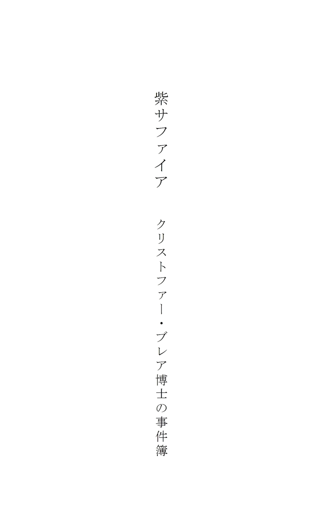
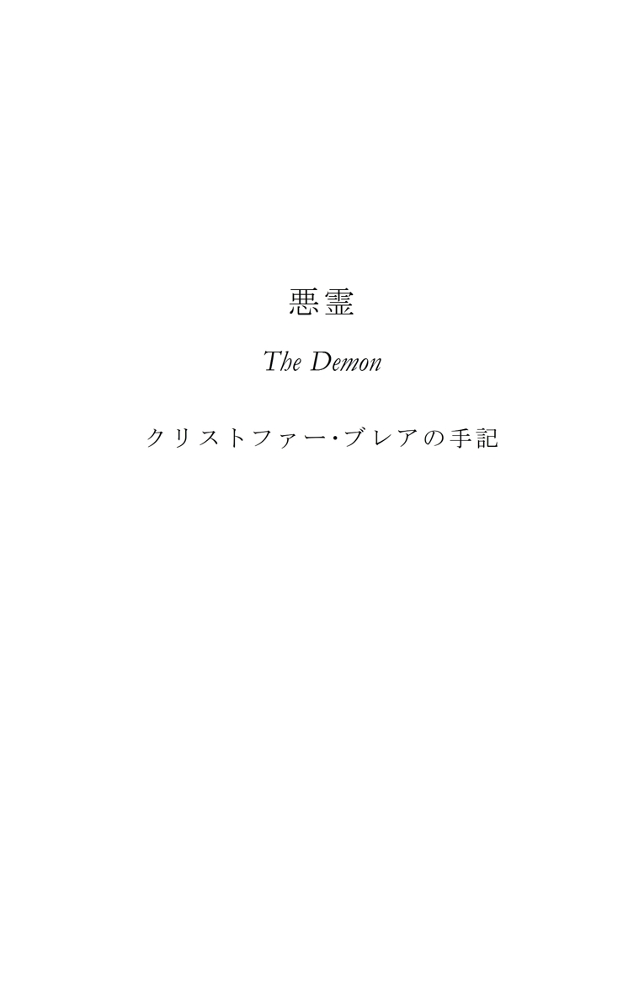

| 紫サファイア ～クリストファー・ブレア博士の事件簿～ | |
| クリストファー・ブレア | |
| BOOKSORINDO (2015) | |
私が十九世紀中頃に就いていた名門大学の事務局長という役職は、多くの点において特別なものであった。局長は大学の教授陣から同輩として親しまれ、そればかりでなく、それは大きな信頼を置かれる立場でもあって、そのために同僚の教授と個人的に近づきになることもしばしばであった。こうした事情から、たびたび私のもとにあれこれの文書が預けられた。これらはその内容の私的で他聞をはばかる性格から、それを書いた本人の存命中に公表される予定はなかった。しかし、そのあまりに衝撃的で不可解な内容ゆえに当時はその作者本人の名義で世に問うことはかなわなかった事件を記録として残すために、私に託されたものである。定年を迎えて役職を辞してから長い年月が経ったので、もはや彼らの信頼を裏切ることにもなるまいと考え、ここにそうした文書をまとめて発表することにした次第である。
クリストファー・ブレア
目次

紫サファイア
･
一九二〇年六月二十四日、コスモポリ大学の鉱物学教授に任命されて数ヶ月後のことだった。私は大学博物館への寄贈品として、故クレメント・アークライト卿のまだ存命中だった遺言執行人から、極めて劇的な状況で、紫サファイアを受け取った。それが私の元に届けられた経緯は以下のようなものである――
その日、医学教授ジョージ・アンボワン卿が私の事務室に入ってきて、机の上に一つの小包を置いた。
「君宛てにだよ。鉱物学部への寄贈品なのだが、それがなされた状況がなんとも悲惨なものでね。すぐ表の通りでご老人が車に轢かれてしまったんだ。重症だが、命に別状がなければいいんだがね。老人はここに運び込まれて、構内にいた私にお呼びがかかってね、病院に移されるのを待つ間に私が応急処置をしたんだ。老人は意識が回復すると、虫の息でこう言うんだ。『小包......小包は......？』。それは老人を運び込んだ守衛が持っていたもので、ご老人はそれを運んでいる最中で車に轢かれたんだ。それを見ると、老人は『博物館に......紫サファイアを......渡して......』とそこまで言ってまた気を失ってしまった。ほら、『コスモポリ大学 鉱物学者様』と書いてあるだろう。君が引き取るといい」
「いささか不吉な寄贈品ですね」私は感想を口にした。
「確かに」アンボワン教授は答えた。「開けてみようではないかね」
包みを解くと、一番外側の包み紙の下には、「遺言執行人殿」と書かれた一通の封筒があった。封は切られており、中には帳面の頁が一枚入っていて、そこには以下のように書かれていた――
この包みが私の死後二十五年間開けられることのないよう、私は心から願うものである。右期間の経過後、本品は私の直系の長子相続人に譲渡されること。箱の中には紫サファイアが入っている。これはジョージ・カーデュー大佐の次男より私がもらい受けたものである。その時までに持ち主に災いをもたらすこの石の悪しき力が弱まっているかどうかはわからないが、これを相続する者に、可能な限り早急に処分するよう、私は心の底から忠告する。
クレメント・アークライト準男爵
「ずいぶんと奇妙な遺言だな」アンボワン教授は言った。「中に何が入っているにせよ、あのご老人はこれを届けにくる途中だったようだな。とにかく、中身を見てみようじゃないか」
中の包み紙をはぎ取ると、白檀の箱が出てきた。その中には、また別の白檀の箱がぴったりと収まっていた。その中にも、また同じ白檀の箱。七つの箱が入れ子になっていた。最後の一番小さな箱に、美しい模様の入った更紗の布に包まれて、紫サファイアが収められていた。
それは例外なく、私がこれまで見てきた中でももっとも美しい宝石だった。完璧に磨き上げられ、ひときわ鮮やかな、アメジストを思わせる深い紫色で、チャボの卵を平たくしたくらいの大きさだった。台座はかごのような造りになっていた。二匹の銀の蛇が、それぞれ自らの尻尾をくわえて二つの輪をなしており、それが石の縁の部分を前後から挟み込んでいる。二つの輪はぞれぞれに十二星座の印が刻まれた銀の装飾板でつながれ、固定されていた。片面には何かを吊るすためのものらしい銀の輪が二つ付いており、そこにかなりの年代物らしい銀の円盤が付けられて、蓋のように開閉できるようになっている。その表には神秘学や、いわゆる薔薇十字団の儀式などに詳しい者には〈タウの封印〉として知られる刻印（ギリシャ文字のＴを、お馴染みの魔法の言葉〈アブラカタブラ〉と書かれた帯で囲んだもの）が刻まれている。この円盤のある方が、平たい石の裏側になる。面加工の施された宝石の表側には、エジプトの護符などによく見られるアメジストのスカラベ※１像が二つぶら下がっており、それぞれ太い銀の針金の先に固定されている。
それが私たちのもとに届けられた事情のせいか、あるいは他に何か得体の知れない理由があるのか、その石を持っていると、私は気が遠くなるほどの吐き気と脱力感に襲われた。私は何も言わずにそれをアンボワン教授に手渡した。教授は手の中で裏側の円盤やスカラベ像をめくり上げたりしていたが、やがてそれを机の上に置くと、ひと言、
「なんと忌まわしい......」とだけ言った。
私たちはしばらく無言のまま見つめ合っていたが、どちらも心の中で思っていることを口に出しはしなかった。たとえそうしたかったとしてもできなかっただろう。沈黙を先に破ったのは私の方だったが、それでも自分でも情けなくなるほどの頼りない声しか出てこなかった。
「真っ直ぐ博物館に持っていった方がいいでしょう」
「そうしよう。とにかく、早いところ手放してしまおう」そう言ったアンボワン教授は、知らず知らずのうちにクレメント・アークライト卿の忠告を守っていたのだった。
白檀の箱の蓋の一つを盆代わりにして、私たちは紫サファイアを博物館に持っていき、入り口のそばにある、まだ登録や分類の済んでいない新規収蔵品を保管しておくためのガラス張りの陳列台の中に入れた。戻ってきた時、すでにあの老紳士（彼もアークライトという名前だった）は最寄りの病院に移送され、ポケットの中にあった手紙や名刺から所在のわかった親族に電話で連絡が取られていた。
その日の午後、大学博物館の鉱物学部棟に雷が落ちた。計り知れないほどの価値のある展示品が数多く破損し、展示室が再び開かれ、使えるようになるまで数週間かかった。しかしながら、新規収蔵品の陳列台は無事だった。
それから約一年が経った頃、〈ギルバート・アークライト卿〉と書かれた一枚の名刺が私の元に届けられた。紫サファイアのことは忘れもしなかった。交通事故に落雷にと、あの石が届けられたことに前後していろいろなことが起こったし、生徒たちはそれを〈不幸をもたらす石〉として訪問者たちに紹介し、ありとあらゆる突拍子もない話をこしらえてもいたのだった。助手たちや、さらには掃除婦までもがあの石を忌み嫌っていた。夜になると不気味に光るという噂もあって、私もよせばいいのに、とある冬の夜、消灯後に自分で確かめに行ったことがあった。何も見えはしなかったが――それでも正直に言うなら、（穏やかに表現しても）極めて不快な感覚を覚えた。まるで暗闇を怖がる子供のような気分だった。馬鹿馬鹿しい。
とある掃除婦の話では、ある晩掃除をしていると、肌の黒い蛮人が、裸のまま、陳列台越しに自分を見つめていたそうで、彼女はまた鉱物学部棟に入るくらいなら仕事を辞めると断言までしたのだった。まったく馬鹿馬鹿しい。
とにかく、名刺に続いて部屋に入ってきたギルバート・アークライト卿本人は、運動好きのイギリス人によくいる爽やかな若者で、年齢は三十代くらいだろうか。私のもの問いたげな眼差しに、彼はあっさりとこう答えた。
「こちらで〈紫サファイア〉をお持ちだと思うのですが。私の叔父が交通事故で死亡した日に、こちらに届けようとしていたものです」
私はそれを聞いて茫然とし、たちまちあの石にまつわるもろもろの事情がいっせいに心に蘇ってきた。私がもごもごとお悔やみの文句を呟くと、彼はこう答えた。
「いえいえ。そのことはいいのです。もちろん痛ましい事件ではありましたが、私たち一族にはあれを最後に不幸は起こっていませんから。私の家の者はみな、あの石を見ることを禁じられていましてね。あの石は私の父や祖父の時代から伝わっていて、〈カーデュー家の呪い〉と呼ばれていたものなのです。私が今日おうかがいしたのは、ただこの手帳をお渡ししたかったからです。先日叔父の書類を整理していましたら出てきましてね。こちらでお持ちになった方がいいと思ったものですから」
そう言って、彼は私の机の上に小さな四つ折り判の、安っぽい紙装丁の手帳を置いた。一頁目にはただ一行〈ナグプールのサファイア〉と、一八八五という年号だけが書かれていた。私は背筋がぞくりとするものを感じながら訪問者に相応の礼を言い、彼は帰っていった。
その夜、私はその手帳を自宅に持ち帰り、夕食後にじっくりと読み始めた。書き込みがあるのはほんの数頁だったが（手帳というものはそういうものである）、そこに書かれた物語はあまりにも不気味で、常軌を逸しているので、まことに勝手ではあるが、ここにその全文を書き写す。手記の原本は今も鉱物学部の書庫にある（登録番号ＭＭ三ｂ三六）。
クレメント・アークライト卿の手記
私は〈ナグプールのサファイア〉を、我が直系の子孫の誰かが保管ないし所有すること、あるいはその管理下に置くことを防ぐために、あらゆる手を尽くしたと願い、信じている。しかし私の一族の中には、それが極めて貴重な、途方もなく美しい宝石だという認識が広く流布しているため（それは事実なのだが）、いずれ好奇心あるいは利己心に駆られてあの石を手に入れようとする者が出てくるかもしれない。それゆえに、この手帳にそうしたことが起こってほしくないという、私なりの理由を記す。
私が覚えている中でももっとも古い記憶の一つは、ジョージ・カーデュー大佐とその夫人のことである。二人はシュロップシャーにあるアークライト家の屋敷にほど近い村の外れに、粗末でちっぽけな小屋に住んでいた。二人の暮らしぶりがどれほど貧しいものだったか、当時まだ物心のつく前だった私にはよくわかっていなかった。私はよく大佐からはちょっとした小遣いを、夫人からはお菓子をもらっていたのだが、夫人からの贈り物は、彼女が私の母に、身体に良いからと子供たちにひまし油を飲ませるようしつこく口添えしたり、歯医者に連れていくようたびたび忠告していたことを知って、ありがたみが失せてしまった。私たち兄弟は、それ以外はいたって幸福な家庭で、平穏な日々を送っているのに、そうして横からいらぬ口出しをされることを苦々しく思っていたのである。
カーデュー大佐はインド大反乱で受けた怪我の後遺症で身体が悪く、脚がとても不自由で、いつも辛そうにしていた。夫人は怒りっぽく、口を開けば、自分から上流夫人の地位と富とを奪った運命への恨み言ばかりだった。実際にカーデュー家はかつて羽振りがよかったのだが、それがどこかで一転して落ちぶれてしまったのだという噂だった。
夫妻にはリチャードとジョージという二人の息子がいて、彼らは私の兄たちの遊び友達だった。私はまだ小さかったので、一緒になって遊ぶことはなかった。二人は寄宿学校を卒業した後に親元を離れ、根気と勤勉さだけで身を立てていった。リチャードは医学生になり、当時（一八七〇年代初め）の医学生の主流であった怠惰で粗暴な級友たちとはくっきりと対照をなしていた彼は、めざましい成績を収めて試験に合格し、実家に帰っても仕方がないし、かといって開業するだけの元手もないので、インド軍医部隊に入隊し、〈リック先生〉の愛称で呼ばれていた。
弟のジョージは陸軍士官学校に入って士官候補生になり、自分以外に頼れる者はないのだからと勉学に励んで出世し、やがてインド駐留軍に派遣されて、そこで少佐に昇進してめきめきと頭角を現していった。彼はいつも〈ジョージ少佐〉と呼ばれていた。
その輝かしい功績のおかげで、二人の人生は順風満帆だった。やがてリック先生は除隊して、インドの避暑地として有名なシムラーで開業医として成功した。ジョージ少佐は大佐に昇進した後、植民地統治下のインドで自治を許された藩王の一人に政治顧問として付き、英領インド政府内でもずば抜けて優秀な理事官の一人と目されていた。
二人がたまに帰国する時には、年老いた両親ばかりでなく、私たちも一家そろって大歓迎した。二人は素敵なインド土産を持ってきてくれたし、それにその体験談のおもしろいことといったら！ インドでのわくわくするような毎日の話、反乱軍や、毒蛇や、野獣や、疫病といった危険の数々――何度聞いても飽きなかった。
やがて老カーデュー大佐が亡くなり、それから一年と経たぬうちにその後を追うようにして夫人も他界した。息子たちが結構な額の仕送りをしてくれるおかげで老後の生活はおおいに楽になったものの、夫妻は決して幸せではなかった。大佐は重い病に苦しんでいたし、そのうえ夫妻は大きなことから小さなことまで、本当に運がなかった。貯金を投資すれば失敗するし、その慎ましい自宅で何か植物を育てたり、動物を餌付けしたりしようとしても、雑草も生えず、鼠すら寄りつかないのだという。
後始末のためにリック先生が帰国したが、それは気の滅入るような作業で、インドに帰る彼の顔は暗かった。自分の運はもう尽きてしまったから、インドに戻るのが恐いと、先生がそう言っていたのを覚えている。私たちには何のことやら理解できなかったが、あいにくその言葉は現実のものとなってしまった。一、二度、ひどい誤診をしてしまい、そのうちの一件の患者がとある藩王だったのが災いして、医師としての名声は失墜し、預金を投資していた銀行が破綻して貯金の全額を失い、挙げ句の果てに、リック先生は、独身だったのは不幸中の幸いだったが、ロンドン郊外でジョージ大佐からの仕送りで糊口をしのぐところまで落ちぶれてしまった。十年ばかりの目的もない不運な人生の果てに、彼は列車から転落死した。その悲惨な死が事故であったことに堂々と疑いを投げかける者もあった。
リック先生の死後、運命の女神はその悪意の矛先をジョージ大佐に向けたようだった。大佐は後から赴任してくるインド総督たちからことごとく不評を買い、軍部における地位と影響力を失ってしまった。挙げ句の果てに、味方のはずのイギリス政府から梯子を外され、仕えていた藩王と対立してしまった。彼の任地である藩王国で起きた反乱は彼の管理上の失策、あるいは管理不行き届きと判断され、大佐は管理官の座を追われてアフガニスタンの国境に左遷された。この任務は不可解なことに完全なる失敗に終わった。インド人たちは軍人と民間人の別なく、誰も彼も彼のことを嫌っているような様子で、彼の部隊にいるわずか数人の忠実なシーク教徒たちの中で、大佐とともに帰ってきた者はたった一人しかいなかった。残りは殺され――それ以外の兵士たちは脱走同然で彼を見捨てていったのである。これは驚くべきことだった。というのも、リック先生が死ぬまで、大佐は軍人民間人を問わずインド人たちからほとんど神様のように扱われていたのだ。
マドラスに戻った大佐は二度、奇跡的に暗殺を免れ、最後は退役して帰国し、夫人と二人の子供たちと一緒に、不当に安い年金で生活していた。この境遇の変化がこたえたのか、夫人は心を病んでしまった。娘は当時まだ知られていなかった盲腸炎が原因で死亡し、息子は落ちるところまで落ちぶれた挙げ句、幸いにもニュージーランドに移住し、それきり消息を絶った。
この物語における私の出番はここからである。以前にも述べたように、ジョージ大佐は私よりも六歳か八歳年上だったのだが、しかしそんなことは、三十歳になり、ロンドンでそれなりに豪勢な独身貴族の生活を送っていた私にはどうでもいいことだった。ジョージ大佐はよく私の家に遊びに来て、私たちは二人で昔話に興じ、ときには一緒にささやかな散財をしたりもした。大佐はいつも陽気で、自分につきまとっている悪運のこともすっかり諦めているようで、語りぐさになるくらいの幸運の持ち主である私と一緒にいると、そのおこぼれに預かれるから、などと冗談を言っていた。確かに私には、健康と、十分な富と、そして決して裏切ることのない幸運の星という、頼れる味方がついていた。
私が競馬で大穴を当てたある日のこと、今はもうなくなってしまったレストラン、〈聖ジェイムズ〉で、お祝いの豪華な夕食を食べながら、私は明るい調子で尋ねた。
「大佐にはどうしてこういう風にツキが回ってこないんでしょうね？」
「いいだろう、クレメント君。教えてあげよう。これまでもずっと、誰かに話したいと思っていたんだ」
私はいささか怖じ気づいた。私の憧れのジョージ大佐は、彼の足に枷をはめ、彼の現在を損ない、未来に不吉な影を落としている、知られざる過去の暗い逸話を語ろうとしているのだろうか。
しかしながら、大佐はそこで話題を変え、そして夕食後に私の家に行くのではなく、自宅に（リージェント公園の近くにあるみすぼらしいアパートだった）来ないかと言ったので、私はその誘いに乗った。
そろってパイプに火を点けると、大佐はじっと座ったまましばらくの間火の入っていない暖炉を見つめていたが、やがて立ち上がって寝室に入っていった。戻ってきた時、彼の手には〈ナグプールのサファイア〉があった――それはかつて見たことのないほどに美しい宝石だった。紫水晶に見えたが、大佐いわく紫色のサファイアで、宝石商には〈東洋のアメジスト〉と呼ばれることもある貴石だという。
（手記にはここに、宝石とその台座についての長い描写が続いているが、鉱物学教授氏が冒頭に記していたものとほとんど同じなので、ここでは割愛する。Ｃ・Ｂ）
私は言った。「まさか、こんなものをここに置きっ放しにしているわけじゃないでしょうね？」
「そのまさかだよ。いつも化粧台の上に置いたままにしてある」
「盗まれるのが怖くはないんですか？」
「別に。三回盗まれたがね」
「どうやって取り戻したんです？」
「何もしていないよ。取り戻したくもなかった。そいつがひとりでに戻ってきたのさ。いつもそうなんだ」
「どういう意味です――取り戻したくもなかったって？」
「私はね、その石を手放せるんだったら持っているもののすべてを、まあ、たいしたものは持ってはいないけれど、残らず投げ出してもいいくらいなんだ。それなのに、私はすべてを犠牲にしてもいまだにそれを持ち続けている。これが〈カーデュー家の呪い〉だよ」
「大佐ったら、また冗談を！」
「本当なんだ。君は夕食の席で私の悪運のことを訊いただろう。見るがいい、君が今手に持っているのがまさに、私の悪運そのものなんだ。それこそが、私の家族を一人ずつ破滅に導いていった魔の石だ」
私は反論した。「そういうのは小説の中だけの話でしょう」
「聞きたまえ。私の父が東インド会社の軍隊で活躍したことは君も知っているだろう。父はインド大反乱の要地だったナグプールで、ヴィシュヌ神の彫像に嵌め込まれていたその石を略奪したんだ。その寺院も命令によって跡形もなく取り壊された。その翌日に父は怪我をした。なかなか治らない傷がよくあるだろう？ その怪我がそうだった。その傷は死ぬまで父を苦しめ続けた。一ヶ月後に父は帰国した。故郷では〈負傷による除隊〉ということになっていたけれど、カルカッタの本部では何と言われていたと思う？」
「何です？」
「〈敵前逃亡による不名誉除隊〉さ。蓋をされたがね。一つは父の過去の功績に免じて（だと私は思いたいね）、一つは英印軍に及ぼす影響を配慮してのことだろう。インドから帰国する途中で父は落ちてきたブロックで頭蓋骨を骨折した。手術で治りはしたけれど、それきり父の頭はずっとぼんやりしていた。あのちっぽけなあばら屋での私たち一家の暮らしぶりは知っているね――ずいぶんと惨めなものだっただろう？ でも、君たちは誰も知らなかったけれど、実を言うと、母は顔も見るのも嫌と言うくらいに父を毛嫌いしていたんだ。お客が来ている時以外は決して顔を合わせることはなかった。さっきも言ったように父は頭がぼけていたというのもあるけれど、悪夢を見てひどくうなされるんだ。後になって知ったことだが、父はヒンドゥー僧の霊に取り憑かれていたんだ」
ここで大佐が口をつぐんだので、私はおぼつかない口調で言葉を挟んだ。「でも、病人が妄想を抱くのは珍しいことではないですし」
「これは妄想なんかじゃない。その僧侶はさっき話したナグプールの寺院の神官で、父が自分の手で斬り捨てたんだ。そして父は、その僧が紫サファイアを追っていることを知っていた」
「どうして石を処分しなかったんです？」私の問いかけに、大佐は微笑んでみせた。
「もう忘れたのかい、クレメント君。たった今話したばかりじゃないか。あの石を手放すことはできないんだよ。父はナグプールの近くに駐在していたある男に石を郵送して、それを寺院なり神殿なりに返すよう、そしてもしそれができない場合には売り払うようにと頼んだ。でも、その寺院はもう跡形もなくなっていて、それがそこにあったという記録さえ残っていないし、市場に行っても、宝石商たちはそれを買い取るどころか触れることすら拒んだ――そう記された手紙とともに、石は送り返されてきた。別の男に石を送って、ナグプールに埋めるようにと頼んだら、半年後にまた郵便で戻ってきた。その男は石の入っていた小包を、父の手紙も一緒に埋めてしまったんだ。それを誰だかが掘り出して、手紙を見て父の居所を知ったんだね」
「手紙を添えずに架空の住所宛に送ればよかったのに」
「それも試してみた。そしたら配達不能郵便物課から真っ直ぐに私たちの村の郵便局に返送されてきて、もちろんそこの局員は知っていたからね」
「僕なら何とかして処分しますね」
「本当かね。お手並み拝見といきたいところだが」
私は素晴らしい考えを思いついた。
「僕にください。僕が必ず処分しますから」
「最後まで話を聞きたまえ。父が死に、続いて母が死んだ後、石はリックの手に渡った。まあ、兄貴がどうなったかは知っているね。そして兄貴が死んだ時、私は軍人人生の頂点にいた。まったくさ、クレメント君、もう想像もできないくらいの高みにまで登り詰めようとしていたところだったんだ。でもそこで、私は紫サファイアを受け継ぐ羽目になってしまった。兄貴の訃報を聞いた私は、海底電信に八ポンドも費やして、石を処分するよう、何があってもこちらには送って寄こさないようにと伝えた。でも手遅れだった――紫サファイアはすでにイギリスを出た後だった。兄貴が死んだ翌日、遺体が埋葬される前に発送されていたんだ。兄貴の形見の鎖の付いた懐中時計と、カフスボタンと一緒にね。残りの遺品は葬式代といくつかの細々した借金の形に取られて、残ったのはそれだけだったんだ。
さて、それから私がどうなったかは知っているだろう？ 私は紫サファイアを、その頃仕えていた藩王への贈り物にするという名案を思いついた。藩王は宝石なんて山ほど持っているからね。一つくらい増えたところで困りはしないだろうと思ったのさ。ところが彼はその贈り物を拒否して、その日から私のことを疑い、嫌うようになった。次に政府の美術コレクションに寄贈しようとしたけれど、それも自分の失態を糊塗するための賄賂のようなものだと思われてしまった。あの石をなんとか手放そうと、私はありとあらゆる手を尽くしてきたが――何をしようともあの石は必ず戻ってきて、そして今もここにあるというわけさ」
大佐はそこで言葉を切り、それから再びパイプに火を点けると、微笑みながらこう言った。
「まだこの呪われた石が欲しいかね？」
「よけいに欲しくなりましたよ！ 僕の運の良さは知っているでしょう。天下無敵の強運なんですから」
「後生だから、口を慎みたまえ。いくらなんでもそれは言いすぎだ」
「でも本当なんです」私は声に力を込めた。「僕は呪いなんか信じないし、もしただの石ころに負けるようなら――」
「勝てる者などいはしない」大佐はひどく真剣な口調で私の言葉を遮った。
しばしの押し問答の末に、私は大佐を説き伏せた。夜明け前、私は新たに手に入れたきらびやかな玩具に嬉々としながら、馬車で家路についた。
それから二年間、私個人としては、紫サファイアによるものらしき被害に遭うこともなく過ぎていったのだが、しかしながらあの石に関連して、理解も調査も及ばぬようなことが起こったことは告白しておかなければならない。
例を一つか二つ記そう。私は当時、ペルシア語とウルドゥ語の半々で記された、とある珍しい文書（この物語にはまったく関係ないが）の解読に趣味として凝っていて、コスモポリ大学のアラビア語とペルシア語の教授が、いくつかの不明な点について議論するため、それからとある若いインド人学生の懐具合の改善のために（彼は市内にあるインド人の店で店員をしていた）、その学生を紹介してくれたのだった。
そうしてとある夜の八時半頃、当の学生が私の家にやって来た。名前は確か、ゴーシュだっただろうか。私は書斎の机に文書を広げて準備をしていて、私たちは一緒に三十分ほど文書の解読に当たっていたのだが、その三十分の間、私はこのゴーシュ某のことを、これまで出会った中でも一番無能で集中力のないエセ研究生だと思っていた。その三十分が過ぎると彼は立ち上がり、小さくお辞儀をしてこう言った。
「ごめんなさい。ワタシ勉強できない。この家キライ。ワタシ帰る」
私は仰天し、少なからず腹を立てつつ、いささか率直に不満を口にした。しかし、彼は玄関に向かいながら、
「ゴメンナサイ――とてもゴメンナサイ。ワタシ知らなかった。ユルシテ。ワタシ帰る」
それだけ言うと、なんと本当に帰ってしまったのである。
それから間もなく、私は友人である前述のアラビア語の教授と夕食をともにした。長年インドのイスラム神学校で学長を務めていた彼は話がとてもうまく、彼との食事は私にとってはいつも愉快なひとときだった。暖炉の前に腰かけて食後の葉巻を吹かしていると、私は彼がときおり部屋をぐるりと見回しているのに気づき、その様子がそわそわしているので、尋ねてみた。
「何か探し物でも？」
「いや。いや。そうじゃなくてね。ただちょっと教えてもらいたいんだがね、君はインド土産を集めているかね？」
「いえ。僕はあの手のものは、基本的に品がないと思っていますから」
「家の中にジナ教の尊像を置いてはいないかね？ 土産物屋で見かける、あの小さな、胡座をかいた雪花石膏の像だが」
「いえ。そんなものはもう数え切れないほど見てきましたけど、大嫌いです」
「君はそれほど間違ってもいないよ。あれは汚らわしいものだからね」
「汚らわしいって、どう？」
「どうって、ほら......部屋に飾っておくには気味の悪い代物じゃないか」そう言って、彼は話題を変えてしまった。
五分後、教授はまた部屋の中を見回すと、急に立ち上がって、暗い部屋の隅に向かって叫んだ。
「やっぱりそうか！ 何か気配がすると思ったんだ！ カウン ハイ？ キャア マンタ？ （おまえは誰だ？ 何の用だ？）」
「いったいぜんだい、どうしたんです？」
「君は今まであれが見えなかったのか？ 裸に腰巻きだけの格好のインド人が、床にしゃがみ込んでカーペットに何か走り書きをしている――ほら、あの隅で！」
「ほらほら。それじゃあまるで酔っ払いか頭のおかしな人みたいですよ。どうしたんです？」
彼はすぐには答えず、目を向けた方向に片手を伸ばして鋭い声で一喝した。
「ジャオ！ （うせろ！）」
そうして小さく笑いながら再び腰を下ろし、震える手でパイプに火を点けた。
「君が驚くのも無理はないよ。すまなかったね、騒ぎ立ててしまって。インド暮らしが長かったものだから、こういうのが身体に染みついてしまったのだろうね。なんとも愚かしいことだ。でも君、本当に寺院の略奪品を部屋に置いていないかね？ ああいうのはたくさん出回っているから」
私はすぐさま紫サファイアのことを思い出し、席を立つと、それを書斎の引き出しから取り出して彼に手渡した。
「驚いたな！ そうだ、これだよ！ あいつの目当てはこの石だ。これはヒンドゥー教の神像の胸に嵌め込まれている宝石なんだ。こんなもの、どこで手に入れたんだね？ どれくらい前から持っているのかね？」
私は紫サファイアの来歴をざっとかいつまんで話した。その間、教授はテーブルの上に石を置いていた。話が終わると彼は言った。
「なるほど、そういうことか――それならこの不可解な現象もいくらかは説明がつく。いいかね、君に心からの忠告をしておく。なるべく早くこれを処分するんだ」
「なぜです？」
「なぜなら――頼むから、こんなことが起こったことも、私がこの話をしたことも他言無用にしてくれたまえ――この石は遅かれ早かれ、君に害をもたらし、破滅させるからだ」
私たちはその晩、世にもおぞましい会話をして過ごした。教授は紫サファイアと似たような逸話をいくつも聞かせてくれ、もしも私が想像力豊かだったり、神経質な人間だったなら、恐ろしさのあまり理性を失ってしまっていただろう。
しかし私は当時も今もそうではない。それ以来、その教授とはずっと後になるまで食事をともにすることはなかった。
程度の大小はあれど、他にもそのような出来事はいくつかあったが、それでも私はインド人の僧侶の姿を見ることも、紫サファイアを所有していることによって悪い目に遭うこともなく、やがてそれは私の友人たちの間で、だんだんとロマンチックで怖いもの見たさの関心を集めるようになっていった。
ここで、私が自宅に客を招いて開いた夕食会の夜にまで話を進めよう。あの夜テーブルを囲んでいた者たちは、あの出来事を死ぬまで忘れることはないだろう。出席者は八人いた。売り出し中の若い作家のＢと、魅力的な若い女優のＣ嬢。Ｂの妹と、その付き添い役を頼まれた外務省務めのＧ氏。スミス夫人（仮名だが、彼女はこの後、悲劇的で忘れ得ぬ状況で再登場することになる）。Ａ夫人と、二度の離婚を経て三度目の結婚をしたばかりのその夫。このＡ夫人というのが変わり者で、敵がいるというわけではなかったが、友人の誰からも疎まれていたと言ってもよかった。オカルトかぶれで、いささか気弱な亭主をむりやり降霊会につき合わせていた。霊感が強いことが自慢で、私はおもしろい女性だと思ってはいたが、霊能者としては偽物だと考えていた――おそらくは半ば無意識の偽物だろうと。
とにかく、私たちは夕食を楽しみ、その後で書斎に場所を移した。Ａ夫人は例によって強引に心霊がらみの話を披露した。彼女はとても話がうまく、初めて聞く人はそれなりにぞくぞくする感覚を味わえるのだった。
そこで作家のＢが出し抜けにこう言った。「そうだ、アークライト。君の持っている宝石か何かは、幽霊を呼んで、人が寝ている間に殺してしまうんじゃなかったかい？」
いっせいに好奇の歓声が上がり、私はついに紫サファイアを披露した。その夜の紫サファイアは驚くほどきらびやかな輝きを放っていた。その瞬間、電気照明につきものの例の現象が起こった――きっと発電所で蓄電池かダイナモを切り替えた時にそうなるのだろう。いずれにせよ、照明が通常の明るさの半分くらいにまで落ちた。ほの明かりの中、紫サファイアはよりいっそう輝きを増したように見えた。
「ねえ、貸して！」Ｃ嬢が大声でせがんだ。場の雰囲気を軽くするつもりで、私は紫サファイアを彼女の膝の上にぽんと放ってみせた。すると、彼女はまるで蜘蛛か鼠でも投げられたかのように、はっと両手を挙げて身を退き、隣に座っていたＢに向かってわめいた。
「いや！ どけて！」
Ｂが彼女の膝の上の紫サファイアを取り上げて私に手渡した。その後ずっと、彼女はＢのそばを離れず、Ｂの手を両手でぎゅっと握りしめていた。
「私に貸して」Ａ夫人がその道の権威であるかのように堂々と言った。「私はそういうものに慣れているから」
私が紫サファイアを手渡すと、夫人は飾り蓋を開いたままそれを自分の膝の上に置いた。それから「呪われた石」について長々と講釈を始めたが、場はすっかりしらけてしまって、誰もがそわそわしていた。スミス夫人は一人だけ口を閉ざし、じっと座ったまま紫サファイアと私を交互に見つめていた。ほどなく、お開きの時間が近づいてくるとそうなるように、部屋がざわざわした雰囲気になった時だった。なんと、Ａ夫人が椅子に座ったまま身体を仰け反らせて目を閉じ、叫んだのだ。
「何かが来る！ この部屋に何かがいるわ！ クレメント卿以外の人はみんな出ていってちょうだい」
客人たちはいっせいに弾かれたように席を立ち、ばたばたと廊下に出ていった。Ａ夫人は声を潜めて、「ああ、神さま！」とだけ言って気を失ってしまった。その瞬間に電力が復旧し、電灯がぱっと明るくなった。私は戸口に歩み寄ってＡを呼んだ。
「君の奥さんが気絶してしまった。入ってきてくれないか」
Ａが書斎に入ってきて、その後から呼ばれていないスミス夫人もついてきた。残りの客たちは廊下に集まってひそひそ話をしていた。
Ａ夫人はもう目を開けており、私たちに向かってこう言った。「落ちてきた......。私を通り抜けていった......」
膝の上にのせた片方の手には、まだ紫サファイアが握られていた。私とＡは精一杯彼女をなだめ、落ち着かせようとしたが、彼女は何かが自分の膝の上に落ちてきて消えたと言い張った。
「私を通り抜けていった」と、何度も何度も繰り返した。私とＡは夫人を立たせてやり、それが勘違いであることを証明するために、彼女の座っていた低い肘掛け椅子を動かした。
その下の床に、小さな緋色の円盤が一枚落ちていた。電灯の強い光を浴びて微かに輝いているそれは直径五センチほどの大きさで、表面にはなんと、紫サファイアの裏蓋に刻まれているものとまったく同じ、タウの絵文字が黒々と浮かび上がっているではないか。
誰もが恐怖のあまり茫然とそれを見つめていた。私が最初に気を取り直し、暖炉から火箸を取ってきた。頭が混乱していたので、それをつまみ上げて、火の中に放り込むつもりだったのだ。しかし、私たち四人が見守る中で、それは白く変色し、絵文字が消え、やがて蒸発するように消えていった。
他の客たちが入ってきて、やがて帰っていった。新聞記事ならば「会は混乱のうちに幕を閉じた」と書かれることだろう。とはいえ全員が帰ったわけではなく、スミス夫人は残っていた。
ここで断っておくと、しばらく前から、私の心はこのご婦人を中心に回っていた。このあたりの事情については後述する。この夜、私と夫人は夜遅くまで話をした。夜中の二時に玄関の呼び鈴が鳴ったので応対に出ると、作家のＢがいた。
「Ｃ嬢のことなんだが......。家に帰ろうとしないんだ。今までずっと、二人でロンドン中をぐるぐると馬車で回っていたんだ。彼女なら表にいるよ。一人で自分の部屋に戻るのが怖いって。まったく、それもこれも、君のあの忌まわしい宝石のせいだぞ」
そもそもの言い出しっぺは君ではないかと言い返してやりたかったが、私は我慢した。結局はスミス夫人が出てきて、Ｃ嬢を自分の家に連れ帰って一緒に寝てくれることになった。Ｂは歩いて帰宅し、私は寝室に引き上げた。正直なところ、私はかなり怖じ気づいていた。帰りしな、スミス夫人は私の肩に両手をのせ、探るように私の目を覗き込んだ。あとの二人は外で待っていた。
「Ａ夫人の椅子の後ろに、インド人がしゃがみ込んでいるのが見えなかった？」
「見えなかったね」
「誓って言うわ。本当にいたのよ。お願いだから、今夜は書斎で時間を過ごさないって約束して」
私は約束した――そんなことをせずとも、何があろうとあの部屋でくつろごうなどという気分になれはしなかっただろう。とにかく、私は寝室に引き上げた。
翌日、外で昼食を取って帰ってくると、速達の手紙が一通届いていた。Ａからだった――
昨夜の異常な出来事について、その後の顛末を報告しておこうと思う。夜中の三時頃に妻が私を起こして、太腿の宝石をのせていたところが焼けるように熱いと言った。もう寝るようにとなだめても頑として言い張るので、明かりを点けてシーツをめくってみた。そしたらどうだ、あの大文字のＴとそのまわりの文字が、寝間着を黒々と焦がしていた。その部分を切り取って同封する。妻の脚にも同じ文字が、まるで焼き印を押されたかのように真っ赤に残っている。軟膏を塗っておいたが、今朝になっても残っていた。よかったら今度お見せしよう。
後でまたこの話題を取り上げなくてもいいよう、ここで書いてしまうと、Ａ夫人のこの焼き印は今もまだ残っている。彼女はそれを平然と人に見せ、そして言うまでもなく、それをきっかけにあの時の夕食会の話が披露されるのだった。夫人のことを良く思っておらず、彼女が真っ赤に熱した針で自分でそれを付けたのだと言う者もいた。夫の話では、夫人がとびきり豪華な下着を着けるのを見ると、その日は彼女が誰かに紫サファイアの話を（彼女の知っている部分を）するつもりなのだとわかるという。
ここから先、この手記は暗く、怖ろしい展開を迎える。今しがた少し触れたように、私はスミス夫人に夢中になっていて、彼女はロンドン社交界の中でももっとも美しく、もっとも賢く、そして夫の財産のおかげで、もっとも洗練された趣味の女性だった。社交界にそれこそ文字通り君臨していて、その痛快なことといったらなかった。
共通の趣味を持つ私たちは、公序良俗に反しない限りにおいてつかず離れずの関係にあった。自惚れで言うわけではないが、あの亭主のもとを離れて私と会うのは、彼女にとっては良い息抜きだったにちがいない。あの御仁について、私は当時も今も偏見を持っているのは確かだが、それを差し引いても、あの男は億万長者と、ろくでなしと、飲んだくれと、愚か者を一身に体現するような人間だったのだ。私はいかなる形であれスミス夫人の評判を落とすようなことはないようにと細心の注意を払っていたのだが、それというのも、これは本人にも繰り返し警告していたことだが、私は一瞬でも目を離せばあの亭主は何をするかわからないと思っていたからで、夫人を卑怯な罠にでも陥れようと企んでいるのではないかと常に身構えていた。しかしながら、当の本人は私たちの友だち付き合いを奨励していて、しょっちゅう私たちを引き合わせていた。その手に乗ってやるつもりはなかった。
そういうわけだから、あの夕食会の次にセシル・スミス夫人に会った時（実を言えばあの翌日なのだが）、紫サファイアをどうしても譲ってほしいとせがまれた私は、弱り果て、ひどく気分が重かった。私自身はあの石を恐れてはいなかったものの、あれが彼女の手に渡ると思うと、正直な話、怖くてたまらなかった。そんな私の心配をよそに、夫人は渋る私をえらい剣幕で言い負かそうとした。
「あなた、自分の変わらぬ幸運を自慢しているけれど、ほら、わたくしを見てごらんなさいな。誰が見ても、わたくしこそロンドン一幸運な女じゃなくて？ 夫にだけは恵まれていないけれどね。わたくしは勇敢でなくて？ じゃああなたはなぜわたくしを臆病者にしたがるの？ あなたこそ勇敢だと思っていたのに。じゃあなぜ今あなたは臆病なの。あの石が呪われているだなんて、そんなこと信じていないのでしょう？ じゃあなぜ今そんな態度を取るの？ わたくしたちが出会ってから、わたくしはまだ何一つとしてあなたに何かをねだったことはないわ。そうでしょう？ なのにわたくしのたっての願いを、あなたは嫌だとおっしゃるのね。クレメント、わたくし誓って言うわ。この先何があろうとも、あなたにはもう二度と何かを求めたりしないって。本当よ。たとえ落ちぶれ果てて、食べるものに困っていても」
彼女が本当に落ちぶれ果てて、食べるものにも困っていた時、そして本当に私に助けを求めてきた時、私はこの言葉をこの上なくやりきれない気持ちで思い出した。しかし私にどうすることができただろう。しょせんは生身に過ぎぬ人間に、未来のことなどわかりはしないし、それに場合によっては、「女人の望みは神の望み」と言うくらいで、逆らうことなどできはしないのだ。結局、私は紫サファイアを夫人に譲ってしまった。
これに続く悲劇の顛末については、できるだけ手短に記そうと思う。私と同世代の人々にとって、セシル・スミスの栄枯盛衰はまだ記憶に新しいだろうから。ひと言で言うならば、彼女の人生はめちゃくちゃになってしまった。性格まですっかり変わってしまった。意地悪で、無鉄砲で、薄情になった。博打に狂い、巨額の金を失った。借金を工面するためには手段を選ばなかった。豪華な宝飾品を買いあさりもした。もしも彼女がやけっぱちで身を投じるそうした窮状に友人たちが仲裁に入らなかったなら、契約不履行で絞首台送りになっていただろう。卑しい身分の愛人、乱痴気騒ぎ、飲酒、薬物など、ありとあらゆる悪徳の噂が囁かれた。そしてその間、亭主のスミスは夫人に好き放題させ、さんざん墓穴を掘らせておいて、ここぞというところで突き落としてやろうと手ぐすねを引いていた。
こうした出来事は一度に起こったわけではなく、二年かかった。お互いに歩む道が大きく隔たってしまったためにもうめったに会うこともなくなっていたが、私はその間中ずっと、紫サファイアを返してくれるようにと懇願し続けた。私はようやく、その魔力をすっかり信じるようになっていた。
しかし、彼女は石を返してはくれなかった。まるで迷信のように、頑なに紫サファイアにしがみついていた。賭博場巡り（結果はもちろん大負けだった）の同伴者として流れ着いた先のサンクトペテルブルグからの手紙にはこう書かれていた――
あの宝石は、わたくしが全人類の女王だった頃――そう、わたくしは本当に女王だった！――の忘れ形見。そしてわたくしがただ一度だけ、あなたにねだってもらったものです。何があっても手放しはしません。
追伸――インド人の僧侶は本当にいます。列車賃もホテル代もいらないのがせめてもの救いです。
一度、マドリードから哀れを誘う無心状が送られてきたことがあって、私は紫サファイアを千ポンドで買い取ると返事をした。結果は同じだった。
時が過ぎた。彼女の消息は風の噂にときおり伝わってきた。投獄されたという報せも二度あった。私は彼女のことが心配でたまらず、心労のあまりぐったりしていたが、それでも何もしてやれることはなかった。気晴らしに当てもなく世界中をあちこち旅し、その途上で現在の妻である女性に出会った。一八――年に帰国した。パリに立ち寄った際、私は新聞を読んで驚愕した。数週間前にラ・ヴィレットにある安アパートで拳銃自殺を遂げた女性の身元が、ロンドン、パリ、ローマ、サンクトペテルブルグ――それこそ世界各地を転々とし、かつてはその美貌と悪名とで知られていたスミス夫人であることが判明したのである。
私の受けた衝撃はとてつもなく大きく、自らの未来の地平線に光が差しつつあったにもかかわらず、ロンドンに戻った私は悲しみに打ち沈み、何も手につかなかった。留守中に事務員が処理できなかった大量の郵便物が私を待っていた。山のような郵便物の中に役所からの小包が一つあった――パリのイギリス領事館からのものだった。送り状にはこう書かれていた。
「故スミス夫人の遺品の中に貴殿宛の封書がありましたので、同封いたします。お聞き及びのことと存じますが、夫人は先日弊市にて悲劇的な状況でお亡くなりになりました。なお、本状をお受け取りの際は、その旨ご返信くださいますようなにとぞよろしくお願いいたします」
封書の中には紫サファイアが入っていた。それが包まれていた紙に、セシル・スミスの手書きの文字があった。
わたくしを破滅させたこの石をお返しします。売り払おうとしたけれど、誰も買ってくれません。泥棒すら欲しがりません。サヨウナラ。ごきげんよう。ごめんくださいませ――セシル
こうして紫サファイアは私のもとに戻ってきた。
それから一月が経ち、身の回りが落ち着いてきた頃、私の家が強盗に入られ、紫サファイアを含む貴重品が盗まれた。私は首に銃弾を撃ち込まれて食堂の床に倒れたまま置き去りにされ、私のこの世での記録は危うくそこで幕を閉じるところだった。
六週間ほど経って容体が安定してからまもなく、その強盗団が別の家に押し入って逮捕された。それまで警察には一切尻尾をつかませなかった一味は、その事件で一網打尽になったという。強盗団の頭領が次の犯行現場へ移る際に大きな失態を演じて逮捕され、残った者たちは仲間割れを起こして、密告と、立ち回りのまずさが災いして、私の証言を待つために延期され、現在公判待ちとなっている一件が、その強盗団による最後の犯行となった。それは紫サファイアが原因となったと考えられる、唯一の恩恵だった。
不運な強盗たちに判決が下った後、被告側の弁護士から小包を渡された。中身は聞くまでもなかった。弁護士はこう言葉を添えた。
「依頼人たちからこれをあなたに返すようにと指示がありましてね。あなたから盗んだ宝石類の中で、彼らは唯一これだけは処分できなかったのです。ご存じのことと思いますが、犯罪者というのはひどく迷信深いものでしてね。依頼人たちは、今の自分たちの境遇はすべてこの石のせいだと考えているようです。なるほど確かに、警察はこの一年間、彼らを追いながらもずっと手がかりをつかめずにいたのですが、彼らが異常なほど慌ててこの石を売り払おうとしていたのがかえって警察の目を引いて、それが逮捕につながったのですから、当たらずとも遠からずではありますが」
こうして紫サファイアは戻ってきた。そしてその瞬間から、私のまわりで何もかもが狂い始めた。宝石の呪いの力を抑え込む力が消えてしまったのだ。事務処理を任せていた弁護士に、投資用にと預けていた数千ポンドを持ち逃げされた。何のこともない田舎道で馬を走らせていたら、落馬して片足と鎖骨を一本骨折した。大きいものから小さいものまで、私のこうむった災難をここにずらずらと書き並べることはすまい。それは長く、多種多様な不幸の一覧表だった。
私は紫サファイアを処分することにした。まずはウォーダー街にある馴染みの中古宝石商に売ったが、付き合いのある私でも、同じ大きさの、スコットランド産のありふれた紫水晶くらいの値しか付かなかった。一週間後、その宝石商が石を返しにきた。彼は紫サファイアを細君に贈ったのだが、細君は「うさん臭い」と言って、石を家の中に置きたがらないのだという。
次に私は、紫サファイアを二ポンドで質に入れた。一ヶ月後にその質屋は潰れ、破産管理人が、「本物件の担保額は社会的常識に鑑みて明らかに安価であり、貴殿に返却することが義務だと感じましたので」などと言って送り返してきた。
三度目の正直で、私は紫サファイアを持ってコスモポリ大学自然博物館に赴き、宝飾品の管理担当者に寄贈した。彼はそれを手の中で何度もひっくり返し、不思議そうな（と私には思えた）目で私を見つめ、やがて言った。
「素晴らしい宝石ですな。当館にもこれだけのものはございません。しかしながら、奇妙に思われるかもしれませんが、この石をお受け取りすることはお断りいたします」
「いったいぜんたい、なぜです？」
「やはり奇妙に思われますでしょうな。この世には悲劇の目撃者、ないしその原因となった宝石がいくつかございまして、私はそうした宝石の力を信じているのです。きっとこの石もその仲間に違いありません。あなたはなぜ、この石を手放そうとなさるのです？」
抑えられなかった。私の心はもうぼろぼろだった。私は事の次第を語った。
管理人はとても真剣に聞いてくれて、私が話を終え、石を粉々に砕いて破片をばらまいたらどうだろうかと提案すると、こう答えた。
「いえ。それはいけません。今のままならば、あなたはこの石がここにあることがわかりますし、見分け、警戒することができます。粉々にしてしまえば、ばらばらだったり、別の形に研磨されたり、あなたにはもう見分けのつかない形で戻ってきて、あなたは知らず知らずのうちに誰かを傷つけてしまうかもしれない。こんなことを言うと頭がおかしいと思われるかもしれませんが――実際に、こと宝石に関することについては、私はここの同僚たちから、控えめに言っても変わり者だと思われているのですが――、魔法や呪術についての古い書物に書かれた指示に従わなくてはなりません。そうした本には、一般に思われている以上の、あるいは一般の人が認めたくないような真実が記されているのです。きっかり満潮時に、この石を河口の近くから河の中に投げ入れなさい。あなたにできることはこれしかありません。ただし言っておきますが、この方法ですら効き目はないかもしれません」
正直な話、私はこの提案を聞いてどっと肩の荷が下りた思いだった。きっとこれが最後だ、と。私たちは航海暦を取り出して、ある特定の日にテムズ河が満潮になる時間を割り出し、そしてきっかりその日のその時間に、私はチャリングクロス橋の真ん中から、紫サファイアを河の流れに投げ込んだ。
三ヶ月ほどはすべてが順調だった。世界旅行の途上で見えてきた幸福は、無事に現実のものになりつつあるように思えた。精神状態も落ち着いた。私は再び生きがいを感じていた。
ある日のこと、私が書斎で仕事をしていると、女中が来客を告げにやって来た。
「Ｘ様からの紹介状をお持ちのお客さまがいらっしゃいました」
Ｘというのは前述のウォーダー街の宝石商のことである。紹介状にはこう書かれていた――
「この手紙を持っている男が、以前君が持ってきた宝石を持ち込んできた。どうやってそれを手に入れたかは知らないが、とにかく君のところに行かせるから、石を買い戻すなり（ちなみに本人は本当の価値を知らない）、警察に突き出すなりするといい」
顔を上げると、その男――ありふれた土木作業者――は、ぼろ布に包んであった紫サファイアを取り出した。
私は愕然となった。呪わしきそれをぽかんと見つめたまま、男に質問する自分の声を、誰か他人が話しているかのように聞いていた。
「その石、どこで手に入れたんだね？」
男は哀れっぽい声で独白を始めた。この石は父から子へと代々受け継がれてきた家宝である。自分の家族は落ちぶれて、ロンドンに仕事を探しに来て、就職した――いい仕事で、給料も良かったが、失業してしまい、運に見放され、子供の一人が死に、細君は病気になり、一家は食べるものもない。とうとう、身を切る思いで、父親からたいそうな値打ちものだと聞かされていた家宝の紫水晶を売る決心をした。それをＸ氏のところに持っていくと、Ｘ氏は貴重品を気前よく買ってくれる紳士がいるからと言って、旦那を紹介してくれて――
私が話を遮ったので、男は驚いた。私は勢いよく立ち上がり、男を怒鳴りつけていた。
「この嘘つきめ！」
「まあまあ、旦那。そう怒らないで。そいつを返してくだせえ」
「本当のことを答えてからだ。逃げようとしたら表にいる警官に突き出すぞ。さあ、白状するんだ。どうやってテムズ河の底からこの石を拾い上げたんだ？」
男はまるで銃で撃たれたかのようにがっくりと椅子に座り込み、口ごもった。
「なんてこった！ まやかしだ。そうに違えねえ。悪魔の仕業だ。とんでもねえまやかしだ」
「その通り。私は一部を知っている。残りを聞かせてもらおうか」
気を取り直すのにしばらく時間がかかったが、やがて男は話し始めた。驚くべき話だった。後に〈チューブ〉と呼ばれることになる、ロンドンの地下に縦横無尽に張り巡らされた鉄道網は、その頃ちょうど建設が始まったばかりだった。そのうちの一本、チャリングクロス駅からウォータルー駅間の地下トンネルは、テムズ河の下を通っている。男は潜函工で、気圧を上げた作業室に入って河の地下を掘削しながら少しずつ前進し、掘った土を河岸に運び出すのである。男はこの掘り出された土がすくい上げられる際に、それの輝きを目に留め、これを好機と（本人の言葉を借りるならば）ちょろまかしたのだという。
「本当ですって、旦那」哀れな男は続けた。「それっきりまるでツイてねえんでさ。何かをくすねるのは初めてだったんですが、罰が当たったんです。売ろうとしても、あっしみたいなのからは誰も買っちゃくれません。捨てても戻ってきやがる。警察だってあっしを探してるに違えねえ。旦那、後生ですからこいつをもらってやってくだせえ」
私はこの哀れなこそ泥に同情した。
「私はこの石を知っている。私がなくしたものだからだ。だから私が買い取ろう。さあ、これは駄賃だよ。家に帰って達者に暮らしたまえ。これから運も戻ってくるだろうから」
男はみっともないくらいに感謝しきりだった。
「もう気分が良くなってきましたよ、旦那。これに懲りて、もう金輪際悪さはしません」
もう何をしても無駄なのだと、私は紫サファイアを処分することをすっかり諦めた。それに結局のところ、いったん捨てたつもりになって、またいつ何時戻ってくるかもしれないと怯えながら暮らすよりは、その在処がわかっている方がまだましなのだと覚悟を決めた。
そこで私は、ジョージ大佐からもらった時と同じように、紫サファイアを更紗の布で包み、入れ子の箱の中にしまった。書き忘れていたが、石を譲ってもらってからまもなく、大佐から入れ子になった七つの白檀の箱が送られてきたのだった。その一番内側の、一番小さな箱に、紫サファイアがぴったり収まるようになっていた。大佐か、父親のカーデュー大佐か、あるいはリック先生か、誰が作らせたものなのかは聞いていなかったし、あるいは聞いていたとしても忘れてしまった。
次に、遺言管理人たち宛てに、紫サファイアが私の死後二十五年間は日の目を見ることがないようにとの旨の遺言をしたためた。その頃までにこの石の呪いの力が、言うならば「霧散」しているとは私もさして期待してはいなかったが、とにかくこうしておけば、私の子供たち（もし生まれているのなら）が大人になってこの手記を読み、次にどうすればいいかを自分で判断できるようになるまでは、この石がその手に渡ることはない。（この遺書については、鉱物学教授氏がこの文書の冒頭部分で書き写しているので、ここであらためて紹介する必要はないだろう。Ｃ・Ｂ）。
私の遺志を確実に実行してもらうために、遺産から一万ポンドを分割するように遺書を書きかえ、この一万ポンドの相続条件には付帯条項をつけた。箱が指定の年月よりも早く開封された場合には、分割した一万ポンドは即座にいずれかの大病院に寄付されるべし、と。こうしておけば、その病院の院長が紫サファイアの入った箱を監視し、それが開封されていないかどうかときどき確認してくれるだろう。二十五年が過ぎれば、その一万ポンドは残りの財産と合算される。
私は箱を包んで封をし、それを銀行に持っていって貸金庫に預けた。その銀行の頭取は魅力的な人物で、私の個人的な友人でもあって、いつも通りに箱を引き受けてくれた。私がその中身について、あるいはそれを預ける理由について一切口を閉ざしていたことは言うまでもない。
偶然か、あるいは他に何らかの力が働いたせいなのか、それ以来私が取り引きをしていた銀行のその支店でいろいろと悪いことが起こった。出納係の一人が大金を横領し、融資は焦げ付き、出資先の商社が倒産して多額の損失を出した。言うまでもなく頭取は責任を問われて職を辞し、少ない年金で失意と無念の老後を送っている。この件については私なりに思うところもあったが、しかしいくらなんでも、その銀行の本店に赴いて、すべては紫サファイアの入った小包を金庫に預けた私のせいなのだと訴えるわけにもいくまい。そんなことをしても、頭がおかしくなったと思われるのが関の山だろう。
かくして、紫サファイアは現在もその銀行の金庫室に安置されている。私は幸福な結婚をし、二人のかわいい子供たちに恵まれた。女の子が一人と男の子が一人だ。私はときどき思う。紫サファイアをその安置場所から取り出すという怖ろしい責務を引き継ぐのはこの子なのだろうか、あるいはその息子なのだろうかと。
クレメント・アークライト
一八――年十二月三十一日
･
クレメント・アークライト卿の手記はここで終わっている。彼はその最後に記された日付よりも長生きをした。手帳にはこの後に別の筆跡の書き込みが続いている。
･
一九二〇年一月一日。昨日をもって弟の死から二十五年が経過したので、私は銀行に赴いて貸金庫の荷物の受け取りを申請した。それは埃をかぶっていたが、手つかずのままだった。私は頭取氏の前で封を開け、遺言状を読んだが、白檀の箱は開けなかった。迷信深いわけではないのだが、それでも何というか――とにかく箱は開けなかった。私たちは箱を包んであらためて封をし、それが四十年以上保管されていた場所に再び戻した。
ここで、弟の手記を引き継いで、とある不思議な、そして私にとってはひどく気味の悪い出来事について記しておこう。
大戦中には銀行員、つまり兵役年齢の者たちはほとんどが女性に取って代わられており、そのうちの数名は今も雇い続けられている。玄関口まで見送りに来てくれた頭取氏に、私は尋ねた。
「この若いご婦人たちは、少しずつ男性の社員に戻していくのですか」
「そうですな。最後の一人がいなくなってくれたら、私は万々歳ですよ。ご婦人の仕事は当てになりませんからな。一生働くわけではないし、管理職に出世できないこともわかっているから、身が入らんのですな。とんでもない間違いをやらかしてくれますから、たびたびこちらで数字を見直してやらんとならんのです。それもまだかわいい方で、もっとひどい話がありましてね。女子社員の間で突拍子もない噂が広まっていて、何か用事があって金庫室に行くように言いつけても、絶対に嫌がるのですよ。いったい何ごとなのかと問い質してみたところ――何という答えだったと思います？ なんと、金庫室に幽霊が出るからときたもんです。あそこで自分たちに向かって笑いかけながらわけのわからない言葉をかけてくるインド人の幽霊を見たと言い張る者も二人、おりました。クビにしましたがね。こんな馬鹿げた話、お聞きになったことがありますか？ まったく、勘弁してもらいたいですよ。ああ、早くいなくなってほしいものです」
私は適当に相づちを打っただけで何も言わなかったが、ひどく落ち着かない気持ちで帰路についた。
あの呪われた石は、四十年の静かな眠りから覚め、今再びその力を発揮しようとしているのだろうか。あれを私の甥であり、名付け親となった私が自分の名前を授けた、ギルバート・アークライト卿に渡すべきなのだろうが、しかし本音を言えば、私はそうするのが怖い。幸いにも彼はドイツ占領軍に所属していてまだ海外にいる。帰国するまでこのまま様子を見ることにしよう。
ギルバート・アークライト
この後に、さらに同じ筆跡の書き込みが続いている――
一九二〇年六月二十三日。甥のギルバートが帰国したので、彼の父親の遺書を読ませた。ギルバートは快男児で、この一件を当然のように一笑に付した。「とにかく、取り出して見てみましょう」と言う彼に、私はそれだけは止めてほしいと懇願し、そしてとうとう、長い議論の末に、彼は私の提案に賛成してくれたが、おかげで私はすっかり耄碌したと思われてしまったに違いない。この提案とはつまり、問題の小包を未開封のままコスモポリ大学の鉱物学の教授のところに持っていき、大学博物館に寄贈するというものである。大学の博物館ならば紫サファイアにも劣らぬ謎めいた来歴を持つ標本を数多く収蔵しているだろうから、その中に混じれば、その悪しき力も、完全に消えてしまうことはなくとも、言うなれば薄まってくれるのではないか――少なくとも私はそう願っている。
いずれにせよ、私は明日あの石を大学に持っていく。そしてそれをもって、私の一族に関する限り、紫サファイアの歴史が幕を閉じてくれることを心から信じている。
ギルバート・アークライト
この黒い手帳の中身を読み終えた時には、もう夜も更けていた。その大半を占めるクレメント卿の手記は、激情に駆られるままに書かれたものらしく、ところどころひどく読みづらい箇所がある。無理もない！ 私は書き手がこれを書いている間ずっと、自分を必死で抑えながら、多くを省略し、彼にとってはこうして記録に残すことがさぞかし辛かったであろう出来事のほんの表層にだけ触れているのがわかる。私は心の底から彼に同情した。
翌日、私は紫サファイアを見に大学博物館に赴いた。それはそこに、きちんとラベルを付けられて展示されていた。
サファイア（紫色）。酸化アルミニウム。鋼玉の一種。屈折度八十六度四分。硬度九。比重三・九～四・一六。
この博物館にある収蔵品の中でもおそらくもっとも驚くべき標本の解説にしては、なんとも素っ気ないものである。
学生の誰かがあの小さな黒い手帳を調べものに使うようなことはまずないだろうが、それでも私はときどき思うことがある。誰かが書庫の棚から棚へとぶらぶらしながら、ふとあの手帳を手にとってこの記録を読むことはあるだろうかと。しかしそれを言うなら、私はいろいろなことを考え込む質なのだが。
アアリラ
･
『ネイチャー』にロマンスはない――少なくともあるべきではない。二重括弧が付いていることからおわかりいただけるように、私が言っているのは母なる自然のことではなく、かの学術雑誌のことである。
〈言葉によらず〉とはロンドン王立協会が掲げる不変不動の標語であるが、これはすなわち、科学的事実を公表するならば、それを裏付け、立証する証拠（あるいは論文なり）を提示しなければならないという意味である。アアリラについてここに記すにあたって、この決まりを守ることは難しく、それどころか不可能なのだが、最善を尽くそうと思う。
『ネイチャー』には、好事家たちに科学分野におけるその週の新しい出来事を紹介する〈注目記事〉があるが、その――いや、かの素晴らしき雑誌の何年の何月号かは、好事家の方々にご自分で探していただいた方がいいだろう。というのも、私はフランスのポーにあるホテルで、ピレネー山脈の壮大な眺めを前に、その記事の切り抜きだけを手元にこれを書いているのだ。記事の内容は以下の通りである――
アラード・マークワンド教授が、本月十四日、パイピング・ペブワースに自身で所有する観測所にて急逝した。死因や死亡前後の状況は不明。検屍陪審は死因不明の評決を下している。遺体には奇妙な外傷があり、観測所の水銀灯に電力を送るための高出力の発電機のそばで発見されていることから、感電死の可能性が高いと思われる。
マークワンド教授は光線電話の研究開発で著名であり、事故現場となった観測所は超高出力の水銀灯装置を備えている。
この後に故人の詳細な経歴が続くが、これについてお知りになりたい読者は人名辞典を参照されたい。
マークワンドの死の真相を記録に残すか、それとも検屍陪審で下された〈死因不明〉の評決をこの件に関する唯一の（そして公式の）見解のままにしておこうか、私は頭を悩せてきた。場合によっては、私は不誠実で、観察者として信頼の置けない、科学者の風上にも置けない人物と――いや、もう狂人と言ってもいいだろう――思われてしまうかもしれないのだ。
いずれにせよ、この手記は私の生きている間は公表することはできない。そんなことをすれば、コスモポリ大学心理学教授としての私の地位は失墜してしまうだろう。私は自分のことを強く、腹の据わった人間だと思っているが、それでも木曜の午後に、王立協会の喫茶室に集まった同僚たちの和やかな輪の中に入っていくことを思うと尻込みしてしまうし、彼らの顔を見て、霧に包まれたオカルト的な――調査？ 実験？ 自己欺瞞？――呼び方は何であれ、あちらの世界へと足を踏み入れ、しかも不幸なことに、その記録を公にしてしまった大科学者たちに、自分も仲間入りをしてしまったのだと思い知らされるのが怖かった。
と、くだくだと言い逃れを並べてきたが、しかし私は、この生涯でもっとも驚くべき、そして壮大なる体験を、どうしても記録に残さないわけにはいかないのである。
検屍陪審の報告書では、アラード・マークワンドの遺体について証言をしたのは私ということになっているようである。それによれば、私は事件当日の朝八時に観測所に入り（私はウォリックシャー州で彼と一ヶ月をともに過ごしていた）、前述の発電機にもたれかかった彼の遺体を発見したことになっている。これは事実ではない。私が彼をそこまで引きずっていったのだ。そうするしかなかった。何らかの説明を用意しておく必要があったから。彼が死んだ時、私はそこにいたのだ。
･
前述の『ネイチャー』の記事にあるように、マークワンドは光線電話の研究に熱心に取り組んでいた。一九一九年、王立協会の夜会に出席する栄誉に浴した者は、ランキン博士※２が披露したこの驚嘆すべき音声伝達方法の公開実験を覚えておられるだろう。
会議室から読書室の奥まで、集まった客人たちの頭上に一本の光線が伸びており、読書室に用意された鏡の受光板には電話機が取り付けられていた。そして精妙なセレン光電池の装置を介して、会議室にいるランキン博士の助手が送声器に向かって話す言葉を読書室の電話で聞くことができ、そして一枚のカードで受光板に当たる光線を遮ると、通話が途絶えてしまう――これが実演されたこの日のことは、すべての出席者の記憶に残るだろう。私はひときわ美しい赤毛の娘が――いや、彼女はこの手記には関係ない。
マークワンドは私に実験の要領を説明してくれた。というか説明しようとしてくれていた（彼が自前の実験設備を持っていることは知っていた）。少年時代に始まってイートンとトリニティ校も同窓、そのままそろってコスモポリ大学の職員になっているほどの長い付き合いだから、彼のことはよく知っているので、実験について語る彼の熱中ぶりに私は一抹の不安を覚えた。
「ずいぶんと興味深いね」私は言った。
「興味深い！」と、マークワンドは、月明かりのナイアガラの滝を初めて見て、「あら――すッごいじゃない！」とのたもうたアメリカ娘にでも言うような口調で叫んだ。
「興味深いだって！ おいおい！ これはとんでもないことだぞ！ 怖ろしいくらいに！」
私は内心で少し首を傾げつつマークワンドを見やった。私にはそれほどのことには思えなかったのだ。彼の顔は灰色で、唇と手は小刻みに震えていた。彼が働き過ぎなのはわかっていた。私はひどく不安になった。彼はパイピング・ペブワースに小さな別荘と観測所を持っているので、これまでも私は、せっかくなのだからそこでのんびり羽を伸ばしてくるようにと勧めていた。彼は学期が終わったらすぐに、私も一緒に行くのならばという条件付きで、そうすると約束してくれていたのだった。
とりあえずその夜は早めに引き上げて、私はマークワンドを連れ帰った。その後、自宅でパイプを吸い、ウイスキーのソーダ割りを飲みながら、彼は告白めいたものを口にした。私には、彼が発狂とまではいかずとも、深刻な神経衰弱に陥る一歩手前の状態にあるように思えた。私は友人として、ここは一つ、あたかも激しい神経症に苦しむ患者を諭すように優しく、しかしきっちりと注意をしなければと思った。
「ほら、マークワンド」私は言った。「いったい何の話なんだい？ 神経を張り詰め過ぎなんだよ、君は。気をつけないとぷっつりいってしまうぞ。天文学者、そして数学者たるもの、誰よりも意識を平静に保たないと。僕らのモットーは何だったね？ 〈言葉によらずして〉だぞ。君が真剣そのものの顔をしているからまだいいけれど、そうでなければただのたわ言にしか聞こえないね」
「本当に真剣そのものなんだよ、僕は」マークワンドは静かな声で答えた。これこそ〈言葉によらずして〉なんだ。僕はたわ言なんか言っていない――ああ、知っているということはなんという重荷なんだろう。僕が狂っているように思えるかい？ 確かに――早いこと誰かに話してしまなければ、本当に狂ってしまうだろうね。そして決めたんだ。君に話そうって」
「拝聴しようじゃないか」
「今はだめだ。くたくたなんだ。それにまだしなければならないこともあるしね。観測所に行ったら話すよ。とりあえず今のところは、なあ、考えてもみたまえ！ 光線電話の意味するところを理解しようとしてみてくれ――一条の光線がどれだけの情報を運ぶことができるか。無限に広がるエーテルの空間を横切って、何千年も前に消滅した惑星から今もまだ光が届いているんだ。想像してみたまえ、今この瞬間、僕たちを他の惑星とつないでいる光線を――火星と、木星と、金星と。そう、金星と！」そう言って彼はコップに手を伸ばし、私はその手が断続器よろしく小刻みに震えているのに気づいた。
「想像してみたまえ！ なあ、今まで考えたことはないかい？ 王立協会の広間の端から端で通話をするのと、ここから、そうたとえば金星と通話をするのは、程度の問題でしかないってことを。そうなんだ」
そこで彼は挑みかけるような目で私を見た。あたかも、信じられないならそう言ってみろとばかりに――まるで「続けてもいいかい？ 君を信じても大丈夫かい？ 聞く価値のある話だと思ってくれるかい？」と尋ねるかのように。
私はなんとも落ち着かない気分だった。こんな興奮した状態のまま彼を残して帰るのは嫌だったし、しかしその一方で、このまま話を続けさせるのも心配だった。私はすぐに心を決めた。
「確かに、怖いくらいに想像が広がる話だし――とんでもなくおもしろい話だとも思うけれど、でもこの時間に話すには壮大に過ぎるよ。僕はもう帰る。明日の昼食の時に会おう」
その日はそこで別れた。翌日、昼食を終えて休憩室で一服している時の彼は、前夜の興奮はきれいさっぱり消えていた。そればかりか、あまりにもいつものマークワンドなので、私は思い切ってこちらからランキン博士の実験の話を蒸し返してみたくらいだった。
「ああ、あれね。夜会向けの素敵な見せ物だったね。ランキンの助手が羨ましいよ。お上品なお方々のお上品なお耳に受声器を当てて、みなさんが驚いて嬉しそうにキャーキャー言うのを聞いていればいいんだからね。でもね」と、ここで真面目な口調になった。「あんなのはまだまだ序の口に過ぎないんだ。待っていてくれたまえ。パイピング・ペブワースで僕の実験を見せてあげるから。度肝を抜いてやるぞ！ ところで、何年か前に、電信で画像を――図面や絵を送る話があったのを覚えているかい？ 『デイリー・メール』紙の裏面にその図解の記事が載っていたよ。電信でやれるなら、無線じゃだめなのか？ 無線で遅れるなら、光では駄目なのか？ よく考えてみてくれたまえ。さあ、僕は戻らないと。授業があるんだ。じゃあまた」
そう言うと、マークワンドは機嫌良くひとつ頷いてみせ、悪戯っぽい思わせぶりな表情を浮かべて去っていった。
私は大学の内外でたびたびマークワンドと顔を合わせてはいたものの、学期の終わりまでそれきりこの話は出てこなかった。やがて大学が夏休みに入ると、われわれはウォリックシャー州にある彼のこじんまりとして素敵な別荘に赴いた。そこには私設の観測所もあって、そこで彼は、生徒たちが科学の単位を取るのに必要な知識を授けるという職務になど煩わされることなく、自分の研究に取り組んでいた。
この手記を読んでおられる読者は、天文学者の観測所について必要な知識はすべてお持ちのことだろう。マークワンドの観測所も、基本的には他の観測所と変わるところはない。特筆すべき点は、極めて強力な水銀灯を備えていることで、これに電力を供給するための強力な発電機もある。この設備は光線電話の実験のために使われており、そして私は以前マークワンドが、『あんなのはまだ序の口だよ』と言ったのが、決してただの誇張ではなかったことをすぐに悟った。
この観測所から、四百メートルほど離れた別荘の書斎まで光線を飛ばすことができ、そこに据えつけられた受光鏡とセレン光電池を介すことで、まるで同じ部屋にいる相手と話しているかのように普通に通話をすることができた。光線経由で受声器側の呼び出しベルを鳴らすこともでき、同じく光線を使って、書かれた文字や図、さらには彼自身の肖像までも受像板に送ることができるのだ。物理には門外漢の私にとっては何とも気味の悪いことだったが、しかし心理学者としての私はマークワンドの気の昂ぶった状態に関心があったし、白状するならば、時には不安を感じもしていた。
マークワンドは素晴らしい実験やその成果を数多く見せてくれたが、自分が取り組んでいる研究については、私を立ち会わせてくれたことは一度もなかった。彼はよく笑ってこう言ったものだった。
「だって、君はあまりにも知りたがりだからね。そばであちこちいじり回されると、気が散ってしょうがないんだ。発電機で遊んだり、何かの拍子に電気の流れている電線に触ったりしないかって、こっちは気が気じゃない。小さな黒焦げの死体になった君を抱き上げるなんて、僕はごめんだからね」
そうして日々は過ぎていった。私は心からのんびりと羽を伸ばしていたが、しかしマークワンドの休暇中の調査研究がどのような内容のものであったにせよ、彼は明らかにそうではなかった。私が聞き出すことができたのは、金星に関連する何らかの現象を観測しているということだけだった。観測所から戻った彼は、取り乱さんばかりに興奮した状態の時もあれば、疲れ切った様子で、悄然と肩を落としている時もあったが、しかしいつも、いわばマントをまとうかのように、ぼんやりと内省に耽っているような雰囲気を漂わせているのは同じだった。
ある日のこと、まるまる二日の間いつにも増してぼんやりして、心ここにあらずで神経質だったかと思っていたマークワンドが、突然こんなことを言い出したので私は驚いた。
「このあいだ、発電器をいじくるとか何とか言って君をからかったのを覚えているかい？ ねえ、もしも僕の身にそういうことが起こるようなことがあったとしても、取り調べが行われれば君はどういう事情でそうなったかがわかるだろう。でもそういうことになる前に、そして部外者が――遺言執行人やら、その手のくだらない連中がやって来てあたりをほじくり返す前に、ほら、懐中時計の鎖に付いているこの鍵を持っていってほしいんだ。それでこの手帳ケースが開けられる。これを君の荷物と一緒に荷造りして、運び出してくれ。手帳の中身は後で読んでもいいが、僕が埋葬されるまでは待ってほしい」
私はひどくショックを受け、研究に打ち込むのもほどほどにして、何でもいいから力になれることがあるなら手伝わせてほしいと懇願したが、彼はただ奇妙な笑い声を上げてこう言っただけだった。
「僕はただ、極めて可能性の低い仮定の話をしているだけだよ。僕のことなら心配はいらない。でも、研究者というのは常に最悪の事態に備えていないとね。それから君の協力についてだけれど、僕の研究は純粋に個人的なものだから、誰の手助けもいらないんだ」
「それで、その研究はいつ公表するんだい？」
「しないよ」
「どうして？」
マークワンドはしばらく考えてからこう答えた。「僕は深入りしすぎてしまったんだ。世間はね、僕が知っていることを受け入れる準備はまだできていない。頭がおかしくなったなんて思わないでくれたまえ。僕は狂ってなんかいない。これ以上ないくらい正気だよ。いつか他の誰かが偶然同じ結果に辿り着くだろうけれど、その時にどうなるかなんて、神のみぞ知るさ。そこまで僕の責任にされたんじゃあんまりだ」
この時分には、マークワンドはどうやら自分に向かって話をしていて、私のことはすっかり忘れているようだった。ところで、まだお話ししていなかったと思うが、マークワンドは独身である。
私は二週間ほど一緒に過ごしていたが、マークワンドは日を追うごとに有頂天になっていった。有頂天とは馬鹿げた言葉だが、しかしそれ以外の表現を思いつかない。彼はまるで夢遊病者のように振る舞い、ありきたりな話題以外にはめったに口をきかず、私が大学の仕事の話をすると機嫌を損ねた。
「頼むから、仕事の話なんかやめてくれたまえ。そんなの平々凡々たる世界じゃないか。これはそんなのとは違うんだ。別世界？ それは言いすぎだけれど、でもそこに続く扉ではあるかもしれない」
嫌な予感がした。「別の世界に続く扉」うんぬんというのはうさん臭い霊能者やら、密教やら、薔薇十字団やらがよく使う文句なのだ。私はそれを聞いてぞっとした。
「なあ、マークワンド。僕が心の広い人間だというのは君も知っているだろう。幽霊の存在を信じて、『あちらの世界に行った』人と会話をする哀れなＡやら、ＢやらＣをせせら笑ったりもしないさ。そういうのを、僕は心の病気だと考えているんだ。心が弱っているところを、普段は掃除のおばさんをやっているような女が、降霊会でシーツをかぶって演技をしているだけのインチキ霊媒師につけ込まれてまんまと騙されてしまっただけだってね。ちょうど身体の病気にかかっている人が、いかさま医師のペテンにかかってしまうように。不治というのはああいういかさま連中の飯の種なんだよ。でも君がそういうのに関わりを持つなんてとても考えられない。扉っていったい何なんだい？ どこに続く扉だい？」私はいささか話をまとめきれないまま質問した。
「心配しなくていいよ。べつにうちのジマイマおばさんの神聖な眠りを乱そうなんてつもりはないから。さっき『扉』って言ったのは、文字通り、本物の扉のことだよ。階段とか鴨居とかと同じさ。うまい言葉がなかなか見つからないんだ。でも説明することはできない。すまないけれどね」
私はコスモポリ大学の医学教授であるジョージ・アンボワン卿に手紙で事の次第を打ち明け、一日か二日こちらに来てマークワンドを診てもらえないかと頼もうかと真剣に考えた。結局そうはしなかったが、今ではそれで良かったと思っている。
ある夜、私は書斎で本を読んだり煙草を吸ったりしながらマークワンドが戻ってくるのを待っていた。ふと目が覚めると、ちょうど夜が明けるところで、なんたることか、私はべろべろに酔っ払っていた。マークワンドは戻ってきていなかったので、私は彼の不興を買うのを承知で観測所まで歩いていった。東の空がちょうど赤く染まり始めていて、あたりの森は来る一日を前に目を覚ます鳥や獣たちのたてる小さな音で満ちていた。水銀灯が煌々と灯っているのが見え、発電機のぶうううんという振動音が聞こえた。
マークワンドはきっと眠っているのだろうと思った私は、入口の扉に手を伸ばし、そしてちょうど取っ手を回そうとしたその時、突然明かりが消えたかと思うと、扉の向こうからけたたましい叫び声が聞こえてきた――何かの単語？ 名前？ 驚きの声？――あれは何だったのか。
「アアリラ！」
「ア」の部分を長く伸ばして、
「アーアーリラ！」と。
私は扉を開けた。マークワンドは望遠鏡のそばで両手を頭上に掲げた格好で立ったまま、こちらを真っ直ぐに見つめた。夜明けはのろのろと遅く、あたりはまだ薄暗かったにもかかわらず、彼は真昼のフクロウさながら眩しそうに瞬きをした。しばらくの間ぽかんとこちらを見つめていたが、やがて恒星時時計に目をやると、
「おやおや」と、いたって落ち着いた声で言った。「本当にすまない。もう朝じゃないか。時間も、君のことも、何もかもすっかり忘れていたよ。まあ、無理もないけれどね。君も寝ていないのかい？ なんてこった。自分から招待しておいて、これじゃあんまりだね。さあ、ひと風呂浴びようじゃないか」
そうしてわれわれはまるで何ごともなかったかのように別荘に戻った。マークワンドは元気溌剌としていた。われわれは風呂に入り、コーヒーを淹れ、ベーコンとジャガイモを炒めた朝食を食べて、小川に釣りをしに行った。
「根を詰めすぎだよ、マークワンド」私はかなり長い沈黙の後でそう言った。
「そうかい？」彼は笑いながら答え、釣り上げた鱒を地面に下ろした。「そんな風に見えるかい？ 昨日は素晴らしい夜だったんだけどな。くたびれた科学者に見えるかな？」
確かに、そんな風には見えなかった。
それからわれわれは庭の木陰に椅子を並べてのんびりとくつろいだ。ふと気がつくと、作家ならば「風変わりな」と表現するような表情で、マークワンドがこちらを見つめていた。私は誘惑に抗いきれず、
「アアリラって何だい？」と尋ねた。
「ああ、もどかしい！」マークワンドは言った。「よし、もう決めた。話そう」
そして彼は唐突に話し始めた。私は彼の語った物語が細部にいたるまですべて事実であることを保証する。彼が省略したり、話さなかった部分については、彼の手帳をもとに補うことができた。
「去年、僕は満金星から新金星までを注意深く観測していた。詳細は観測日誌にすべて書いてあるから読むといい。専門的なことだけどね。今はそれを簡潔にまとめて話そう。残りはあの手帳に書いてある。どの手帳のことだかはわかるね。
ある夜のことだった。金星は半金星の状態で、椅子に横になって、望遠鏡を覗きながら記録をつけていたら、金星の影になっている側の、外周の近くで明るく光る部分が見えたんだ。もちろんそれが何なのかはわからなかったけれど、そのまま観察していると、それはちかちかと瞬いて消えた。
いいかい。もし君が笑ったり、ひと言でも言葉を挟んだりしたら、僕は貝みたいに黙り込むからね。それはね、なんと『Ｓ・Ｏ・Ｓ』だったんだ。トントントン、ツーツーツー、トントントン。モールス信号だよ。僕は自分が夢でも見ているのか、それとも目が疲れて見間違いでもしたのかと思った。
それはいったん消えて、やがてまた光った。それからたくさんの文字を発信してきた。まるでちんぷんかんぷんだったけれど、いいかい、誓ってもいいけれど、信号の一区切り一区切りは完璧なアルファベットを表していたんだ。
それが一時間ばかり続いて、僕は発信される文字を一つ一つ書き留めていった。大戦中に僕が連隊の信号手だったのは知っているね？ やがて信号はぱたりと止んだ。呪文みたいな文字の羅列になんとか意味を見出そうとしてみたけれど、もちろん意味なんかなくて、ただ最後の二文字は『Ｖ・Ｅ』だった。トントントンツー、トン。『Ｖｅｒｙ・Ｅｎｄ』。交信終了の意味だ。謎の信号手は――笑うんじゃないぞ――とにかく交信の終わらせ方は知っていたんだ。
次の夜、また同じことが繰り返された。僕はこれまで、『火星からの通信』について書かれたものを、くだらないと思いながらもたくさん読んできた。あの手の話はまるで雑草みたいにしぶとくて、次から次に出てくるんだ。でもね、その時の僕は、君が今ここに座っている事実と同じくらい確かなものだと確信していた。金星が地球に向けて通信をしているんだって。それも、狂ったわけのわからないモールス信号を使ってね。
その夜僕は、光の点滅が止まる前には必ず、決まり通りピリオドを表す、『Ａ・Ａ・Ａ』、トンツー、トンツー、トンツーが入っていることに気づいて、前の夜の記録を確かめてみたらやっぱりそうだった。どうだい！ あの時の僕の気持ちが想像できるかい？
それで僕はこうしたんだ。ここの水銀灯の反射鏡の向きを、望遠鏡を覗きながらできるだけ向こうの発信地点に近づけるように調整して、そして三日目の夜に向こうの通信が始まった途端（これまでの二回と同じく、『Ｓ・Ｏ・Ｓ』で始まったよ）、薄いブリキの板で光線を遮りながら、返信したんだ。
金星はしばらく沈黙して、やがて『Ｓ・Ｏ・Ｓ』を繰り返した。こちらも同じように返信した。それからまたしても、他の文字が次々に発信されて、僕はそれを一つ一つ、まるで宗教の儀式のように粛々と返信していった。こんなやりとりを一時間ばかり続けた後、今度は僕が送り手になって、『交信終了』と発信した。金星はそれを理解して、同じ信号を返してきて、それからまた『Ａ・Ａ・Ａ』。その夜はそれで終わった。
それからの数ヶ月間、金星が見える時に交わされたやりとりについては退屈だろうから省くよ。日誌にはみんな書いてある。また僕の側から送信して、アルファベットをＡからＺまで送信したら、向こうもそれを一文字ずつ送り返してきた。やがてとうとう、アルファベットがきちんと正しい順序で送られてくるようになった。金星は学習していたんだ。
そして、本当にすごいのはここからなんだ。どうしてそれまで思いつかなかったんだろう――セレン光電池に通電して、受声器をつないだんだ。すぐにザアザアと音が聞こえてきた。音声だったよ。舌音と唇音だ。『ム、マ、ム、ラ、ロ、ラ』。それから母音も。少なくとも、金星では光線電話が使われていて、僕たち地球人がそこまで辿り着いた時にはいつでも使えるように用意がしてあったことは確かだった。
しばらく交信を聞いた後、僕は『Ａ・Ａ・Ａ』と送信した。金星はそれが区切りではあるものの、『交信終了』――『Ｖ・Ｅ』――ではないことは理解していた。僕は今度は送声器をつないで、モールス信号で『Ａ』と送信してから、『エー』と音声を送ってみた。そしたら返信があった。信号と音声の両方で！ この要領で、アルファベットを全部やりとりした。
アルファベットの次に、僕は綴りを教え始めた。綴り字の教本を使って子供に教えるみたいにね。ＡＢ――ａｂ、ＢＯ――ｂｏ、といった具合に。しばらくすると（と言っても、わかっているとは思うけれど、何週間分の出来事をぐっと縮めて話しているんだからね）、僕たちの会話（と呼んでいいのかわからないけれど）は、必ず『アアリラ』で始まって、『Ｖ・Ｅ』の後にまた必ず、『アアリラ』で終わっていた。
そうだ！ 僕はそれが金星の送信者の名前なんだと気づいた。ひとつ言っておくと、金星人、その相手は、僕なんかよりもはるかに優れた頭脳を持っていたよ。それは僕に金星の発音を教えようとしたけれど、僕にはまったく理解できなくて、そうしている間に向こうは英語の単語を言えるようになっていたんだ。さらに、向こうの装置は僕の使っているものができることをすべて完璧にこなして、その上さらに進んでいるんだ。
何日もの間、僕は光線通信で画像をやりとりしようとしてみたんだけれど、少なくとも一週間は何の結果も出なかった。やがてある夜、『アアリラ』と音声を送信して、次にその文字を、もちろんモールス信号だけれど、水銀灯の点滅の代わりに送画板に『・』と『―』を描いて送ってみた。
これを受けて向こうがどうしたのか、僕は後になって知ったんだけれど、その時はこちら側の受像板は引っ掻き傷だらけでめちゃくちゃになった。つまりね、アアリラはこちらの意図を理解して、彼女なりに（なぜかしら、僕は相手が女性だと確信していた）精一杯同じものを描こうとしたんだ。それから何週間も辛抱強く練習を続けた後、ついにある夜、アアリラの肖像が送られてきた。ああ、その美しいことといったら！ 想像してみてくれ――いや、そんなことをして何になる？ だって彼女のその肖像は――彼女は――とても言葉では言い表せないんだ！」
マークワンドは口をつぐみ、これまでも私を幾度となく困惑させてきたあの奇妙なうっとりとした様子で目を逸らした。
「彼女？」私はそっと尋ねた。さっき警告されたように、彼が黙り込んでしまうのではないかと心配だったのだ。
「ああ」
「だから、彼女の絵のことだろう？」
「僕はね、本人に会っているんだよ」
ここで私が面食らった、というのはなんとも情けないほどに貧しい表現である。これはいったい何の話なのだろう？ 私は狂人と話をしているのだろうか。しかしもしこれが妄想なのだとしたら、もちろんそうに決まっているが、これほど合理的で、これほどまで緻密に練り込まれた妄想など聞いたことがなかった。
その日マークワンドが話してくれたのはそこまでだった。彼としては、この驚くべき秘密の触りの部分だけを披露して、自分の話を私の頭にじっくりと浸透させておいてから、私の態度から私がその話をどう受け取ったか、そして私がそれ以上の秘密を打ち明けてもいい人物かどうかを判断するつもりだったのだろうと思う。
しかし、いくらかなりとも胸の内を明かすことができたことで、彼は見るからにずいぶんと気が楽になったようだった。彼は話のところどころにちょっとした罠を仕掛けておいて、私が笑ったり、疑わしそうにしたり、小馬鹿にするような態度を見せたりしないかを試したが、話が進むにつれて、私はいつも関心のあるような振りをする必要がないほどに興味津々で聞いていたから、やがて彼は自らの驚くべき体験について、少しずつ詳しい話をするようになった。そして前述したように、当時彼が省略した部分については、私はこの事件について書かれた彼の手帳を読んで補足した――後になってのことだが。
いったいどのようにして、マークワンドとアアリラが言葉の意味を確立し、理解不能な混沌とした音の羅列の中から会話を成立させていったのか、生理学の用語を借りて言うならば、二つの言語文化が次第に「吻合」していく課程をここで記すとなると、相当な厚さの本が一冊埋まってしまうほどに長くなってしまうだろう。
結果だけを書くならば（不十分ではあるが、これで良しとしよう）、マークワンドは少しずつ、アアリラのことや、惑星金星での生活（向こうの物理化学は、ジュール・ヴェルヌの想像力を最大限に引き出しても遠く及ばないほど進んでいるのだという）について、あらゆることを学んでいった。
何よりも重要なのは、マークワンドが、この年齢になって初めて運命の人に出会った独身者にしか持ち得ぬ一途さでアアリラに恋をしていたという衝撃的な事実である。私がここまでこのたいそう重要な点について触れていなかったことに、お気づきいただけるだろう。
金星にいるアアリラが、いったいどうやってこの地球のモールス信号を学習したのかと不思議に思われる方もおられるだろうが、これは当然の疑問である。こちらが質問をしても、マークワンドが「貝のように」黙ってしまうことはないと感じられるようになると、私はすぐにこの点を問い質してみた。
「ああ。それか」マークワンドは答えた。「当然話しておかなくちゃならないことだった。彼女はね、大戦中に艦隊の信号手のやりとりを見て学んだんだよ」
「何だって？」
「ちょっと信じられない話だろう？ 惑星間通信は、向こうではずっと以前から盛んに研究されていたんだ。すでに他のたくさんの惑星に信号を送ってはいたけれど、外からの通信を拾ったことは一度もなかった。ところで、地球は金星の言葉で〈ワルマ〉っていうんだよ。意外ではないかもしれないけれど、アアリラは向こうではかなりの熱狂的な天文学者でね。何かの徴候を探してもう何年も〈ワルマ〉上を観察していたんだ。
一九一四年八月以降、彼女は地球の海に、まるで星のようにちかちかと光が点滅しているのに気づいた――もちろん、向こうの望遠鏡は、こっちのが玩具の鉄砲だとしたら、大砲みたいなものなんだ。そして彼女は何ヶ月も頭をひねった挙げ句、その点滅に一定の法則があることに気づいた。短い光と長い光の組み合わせがたびたび繰り返されて、とりわけ『呼びかけ』のための『Ｅ』が連続して、その近くで一度だけの『Ｅ』が光るとそれが止むことに気づいた。その調子でピリオドの『Ａ・Ａ・Ａ』と、『交信終了』の『Ｖ・Ｅ』はほとんどすぐにわかった。そしてここから、少しずつすべてのアルファベットを解読していったんだ。もちろん順番はでたらめだけどね。僕らが会話ができるようになって彼女が最初にした質問の中に、『Ｔ』と『Ｅ』は何なのかというのがあった――ＴとＥは、英語で一番頻繁に使われる文字さ。『ａｎｄ、ｔｈｅ、ｉｔ』なんかの一般的な単語はすでにたくさん知っていたよ」
「それで、彼女はそれを何だと思っていたんだい？」
「何って、彼女にとっては推測される答えは一つしかなかったわけだよ――僕らが金星に向けて信号を送っていると！」
「ああ！」
「彼女が一番首を傾げたのは、陸地で頻繁に、繰り返し現れる〈Ｅ〉、短い光点だった。大砲の砲火だったのさ」
頭がくらくらしそうな話だった。それから後は、私はめったに質問を挟むことはなくなった。
さて、ここから私にとってはひどく書きづらい内容になってくる。私はマークワンドの死にひどいショックを受けていた。その死が意味し、そしてこの私に、あたかも恐るべき証拠のように伝えてきたこと、それはすなわち、この驚異の体験が妄想などではなく、それが避けることのできない、悲劇的な結末に向かっていたことであり、そしてそうであるがゆえに、私には誰かがこの詳細を読んでほんのわずかに口元を緩めることを考えるだけでも冷静ではいられない。なぜならこれから先の内容が容易に冗談扱いされてしまう性質のものであるからだが、しかしそのような内容そのものが、まさにこの悲劇の本質でもあるのだ。
まず知っておいていただきたいのは、アアリラには、金星の風習にならって、七人の夫がいたという事実である――とはいえこの事実があっても、彼女はマークワンドの情熱に精一杯応えることに何ら抵抗を感じなかったようである。金星の夫たちというのは、知能の劣るわれわれ地球人からするならばたいそうのんびりした性格のようだが、しかし時には例外もあるもので、その例外的な夫の一人が、アアリラのこの宇宙事業に、怒れる嫉妬深い夫という形で大きな影を落としていた。
極めて知能が高く、金星の科学界において高い地位を占めるアアリラをこの地球の大学の名教授だとするなら、イッルーハという名前のこの夫は、その無教養な妻（もちろん一人だけだが）のようなものだった――夫がその一生を捧げた仕事よりも、自分の感情や満足感の方にはるかに重きを置くような妻である。
かくしてマークワンドと「逢い引き」をするにあたって、アアリラはひどく慎重にならざるを得なかった。地球では、そのような彼女の振る舞いを「ふしだら」と評する向きもあるかもしれない。ともあれ、アアリラにとっては、観測所に閉じこもって地球の愛人と交信することは何ら問題ないことだった。
しかしながら、夫のイッルーハの方は、もちろん金星の宇宙物理学の膨大な可能性について無知ではないので、アアリラの研究がどのくらいの範囲を、どの程度調べるものなのか、なかなか心穏やかというわけにはいかず――とにかく前述したように、アアリラはひどく慎重にならなければならなかったのだった。
夜毎の逢い引きが理不尽なほどにねちねちと小言を言われて邪魔されるのはしょっちゅうで、力尽くで妨害されるのは言うに及ばず、そういう時にはアアリラも怖ろしくてしばらく光線電話機に近づかなかった。マークワンドの手記を読んだところでは、どうやら彼女は油断をした隙にイッルーハにマークワンドの光線写真を何枚か見られてしまったことがあったようで、いくぶん品のない言い方をするならば、イッルーハは妻をつけ回していたのである。
しかしながら、アアリラの科学に対する極めて高度な知識、才能、そして野心がなければ、すべてはうまくいっていたのかもしれない。自身を描いた巧みな（破廉恥と言わざるを得ないものも少なくない）画像を送信することに留まらず、彼女の野心はそこから大きく飛躍し、そのために多大な労力を研究に費やして、とうとう、なんと自分自身を送信することに成功したのである。正確には自らの複製、体内の器官にいたるまで完璧に再現され、しかも身体機能、密度ともに現実の肉体とまったく変わらない分身を。
アアリラの科学者としての業績の頂点とも言えるこの技術の開発とその最終的な成功について、私には大まかな内容しかわからない。というのも、マークワンド自身、この部分の記述は言葉数が少なくなっており、彼の日誌はこれ以降、生真面目で高潔な配慮によって、多くはないにせよいくつかの部分が省かれて読者の想像に委ねられ、それゆえに科学的な資料としての価値はそこなわれる傾向にある。
この実体でもなければおぼろな幽体でもないアアリラの分身は、機会があるたびに地球にやって来てマークワンドの観測所を訪れ、一方で彼女の実体は金星の観測所に残って、言わば見張り番をしていたのだった。アアリラの名誉のために断っておかなければならないが、彼女はマークワンドに、こうした惑星間の外出が途方もなく、怖ろしいほどに危険であることを隠そうとはしなかった。アアリラの実体は金星に残っているとはいえども、意識は分身と一緒に地球にやって来ていたからで、そしてこれこそは、あの運命の日、アアリラとマークワンドに悲劇をもたらすことになるのだった。
というのも、金星にある実体は、それを司る意識を一時的に欠いているために装置の操作には向いていないからで、マークワンドとのせっかくの二人きりの時間も、常に投射板に目をやり、光線電話機に耳を当てて警戒していなければならないのでは台無しだったに違いない。
結果的に、こうした驚くべき惑星間の逢い引きは、イッルーハが留守にしているか、少なくとも観測所に邪魔をしに来る可能性の低い時を狙うしかなかった。どうやら金星の夫というのは――もちろん、その数の多さは別にして――、地球のいわゆる文明国の妻たちにそっくりのようである。そしておそらく、その逆もまたしかり、なのだろう。
マークワンドは、前述したように、私との会話の中ではアアリラとの密会の内容についてはあまり話したがらず、そればかりか、観測所の日誌の記録には金星の政治、経済、そして時には民俗学的な詳細ばかりが書かれており、ざっと目を通してみた感じでは、二人で過ごす時間は文化の違いによる差を埋めることに大きな時間が割かれていたと言っていいだろう。というのも、アアリラと長い時間二人きりで過ごしていながら、手帳にも日誌にもほんの数行の書き込みしかないことがしばしばあるのである。
マークワンドは二人が冒していた危険がどのようなものかを説明しようとしてはくれたのだが、しかしその説明というのもまったく私の理解を超えていて、ヘルツ波、電位、アンペア数などなど、他にもたくさんの専門用語が頻出し、私は匙を投げてしまった。
私にわかったのは、金星にいる実体のアアリラが投射装置を操作しており、そしてもしも邪魔が入ったり、あるいは機械が損傷したりすれば、取り返しのつかない大惨事になるということだけだった。もしも地球との交信中に部外者、あるいは未経験者が観測所に入った場合、アアリラの発電施設の全電力が、金星と地球間をつなぐ光線に流れてしまう怖れがあり、そうなる可能性が高いのは明らかだった。そうなった場合に何が起こるのかについて、マークワンドはこう言っていた。「推測したくもないね」と。
「実体のアアリラは、まず間違いなく死ぬだろうね。ここがどうなってしまうのかは、予測するのは難しい。何らかの形で瞬時に消滅――いや、蒸発かな......どうだろう。でも、僕たちは必要な安全策は思いつく限りすべて講じているよ」
私は思いきって一つ質問をした。
「分身の方のアアリラの身体は、物理的な痛みを感じることができるのかい？」
マークワンドはしばし考え込み――私は彼の顔が少し赤くなっているような気がした。やがて彼はこう答えた。
「ああ、感じられるよ。それについてはほとんど疑いの余地はない」
「もう一つ」私は言った。「もし仮に、誰か部外者が（われわれはイッルーハの名前を出すことはめったに、いや一度もなく、これはもちろん本人への配慮のためである）生身のアアリラのいない隙に装置をいじって、そして旦那――いや、その誰かが（私は慌てて言い直した）どうにかして自分自身を投射してしまったら？ そうしたらどうなる？」
マークワンドは、残念ながら、肩をすくめて笑った。そう、彼は確かに笑って、返事をする代わりに顔を背け、小声で古い農園歌を口ずさんだのだった。「会衆みなみな立ち上がり、歌いませえや――ハーレルーヤ！」
マークワンドとの滞在期間は終わりに近づいていたが、それでも私は漠然とした不安につきまとわれてぐずぐずと長居をしていた。お目付役を気取るつもりはまったくないけれども、彼をアアリラと二人きりにして去るのは安全ではないと、いや健全ではないと思ったのだ。
一緒にどこかを訪れようかと遠回しに誘ってもみた。彼が無事にロンドンに帰り着くのを見届けたかったからだが、彼は聞く耳を持たなかった。マークワンドは恋煩いだった。そしてとても幸せそうだった。私はだんだん不安になり、そして白状するならば、だんだんと好奇心を膨らませていった。
私は二人が出会う場面に自分も同席させてほしいという思いを何とかして伝えようとしたが、すると今度はマークワンドの方が動揺していた。私は自分がこの上ないほど品のない、軽率な発言をしてしまったことをすぐに察し、あとは何か緊急事態が起こり、私が役に立てるような機会が巡ってくるのを待つしかなかった。
そうして問題の十四日の夜、あるいは早朝がやって来た。それに先立つ数日の間、マークワンドはぼんやりとして神経質で、事態は思うようにうまくいっていないようだった。ひと言で言えば、イッルーハに手こずらされていたわけで、金星側の観測所と交信を保ちつつ、二人からするならば、関係が始まって以来一緒に過ごした時間の大半を占めていたのだろう調査や学術的な会話を続けることに、かなり心労がたまっているようだった。
マークワンドは言っていた。「確かに、向こうで何が起こっているのかにそれなりに意識を集中させておくのが、なかなか難しい時もあってね。ついこの間なんか――」
ここで言葉は途切れ、結局私はその時、二人の歩む科学研究の花道を阻んだのは何だったのか知ることはなく、これについてはマークワンドの手帳にも何の記録も残っていなかった。
私は例によってマークワンドの書斎で彼が戻ってくるのを待っていた。私は彼が観測所から戻ってきて、アアリラが無事に「家」に送り返されたのを確認するまではベッドに入るのが嫌だったのだが、しかしその時もまた例によって、いつの間にか眠ってしまっていた。
突然、観測所の水銀灯が書斎に向けられ、光線電話機の呼び鈴がけたたましく鳴り響いた。私は受声器をひったくるようにして取り上げたが、聞こえてくるのはごちゃごちゃと入り交じった物音と、無線送信機のような激しいばりばりという雑音だけだった。受声器を放り出すと、私は観測所に走り、扉を大きく開け放って中に入った。室内は水銀灯とは別の、眩いすみれ色の光と、何かの焼ける臭いで満たされていた。
私が入ってきた時、マークワンドはそこに立っていた。そして神経が張り詰めていたせいで自分が幻を見ていたのかどうか、今となってはもうわからないが、しかしその時私は、女性の姿を見た――そう、それも息を呑むほどに美しい女性が、マークワンドの足もとの床にひざまずいて、片方の腕を彼の腰に回し、顔を光線電話装置を構成している複雑に入り組んだ鏡やセレン光電池の方に向けているのを。
美しく、色の黒いその顔には恐怖の色が浮かんでおり、そして彼女は、マークワンドの盾になろうと、私には見えない何かから彼を守ろうとしているかのようだった。
しかし、その光景が見えたのもほんの一、二秒のことだった。その時、地震のような大異変が起こった。明かりはひとつ残らず消え、観測所は鼻をつままれてもわからないほど真っ暗になった。その暗闇の中、床の上に、発光性の、といってもぼんやりとした光ではなく、きらきらと火花のような輝きを放つ直径一メートルほどの輪が浮かび上がっていた。
私は照明のスイッチを手探りした。明かりは点かなかったが、死ぬまで忘れることのないほどの凄まじい衝撃に打たれ、それがもとで激しい吐き気を感じた。しばらくして（私には何年にも思えるような長さだったが）、私はマッチを取り出して擦り、停電になった時に備えていつも机の上に立ててある二本の蝋燭に火を移した。
光線電話装置は大破し、その光景はまるで、海運倉庫の裏に捨てられたバネ式マットレスの残骸のようだった。望遠鏡は頑丈な土台からねじれて外れ、床すれすれまで垂れ下がっている。ドームの縦長の開口部の横に割れ目があった。
不気味な沈黙をひしひしと感じ、ふと見ると恒星時時計と太陽追尾機が両方とも止まっていた――その単調で朗々たる機械音は、どれほど慰めになってくれていただろう。
私はマークワンドと二人きりだった。
彼は先ほど立っていた場所に横たわっていた。ぴくりとも動かないその姿はいたって普通だった。唇を上下の歯が見えるほどにぐっと左右に引いた、おぞましい笑顔を浮かべていることを除いては。
電気ショック、人工呼吸など、私は応急処置の授業で学んだことを思い出した。彼のチョッキのボタンを外し、ズボンのベルトを緩め、シャツの襟をくつろげると、私は見よう見まねで処置を始めた。少しずつ服を脱がしていくにつれて、胸の悪くなるような臭いがした。やがて私は彼が死んでいることを悟った。
必死の思いで意識を、正気を失わないようにと努力しながら、懸命に頭を働かせた。医師たち、検屍審問、野次馬の詮索、遺体の検分。おぞましい！ 何としてでも、彼の身体を調べるのは私が最初でなくてはならないような気がした。
私はマークワンドの服をそっと丁寧に脱がしていった。死の直後に血の気が引いたせいで、もともと白い肌がさらに白くなっていたが、少なくとも外傷はなかった。
しかしながら、アアリラが腕を回していた腰の部分に、帯状に濃い茶色の火膨れができていた。まるで炎の糸を巻きつけられたかのようで、しかもその炎は皮膚を通り抜けて身体の奥深くまでを焼きながら、それでいて衣服には焦げた跡すらなかった。
気がついた点が一つ。腰の背骨のあたりに、小さな右手の形をした火傷の跡があり、指先の部分が特に度合いがひどかった。「もう一方の手はどこにあったのだろう」。私にはそれしか考えられなかった。
私は座ったままじっとマークワンドを見つめていた。どのくらいそうしていたのだろうか、ドームの割れ目からふと夜明けの光が見えた。私は慎重に彼に服を着せていった。死体に服を着せるというのがどれほど難しいかおわかりいただけるだろうか。遺体は硬直しつつあった。
私は精一杯頭を働かせた。マークワンドはどのようにして死んだのか。新聞、死亡告知、検屍官。そうだ――発電機だ！ 私はマークワンドをそちらに引きずっていった。見たところ発電機も同じように壊れているようだった。彼の強張った腕を無理やり上げさせて、その手を整流器の上にのせた。それから懐中時計の鎖についていたあの鍵を外した。
今しがた暗闇にきらきらと輝く輪が見えたところには、灰白色の粉が円を描くように積もっていた。ふと思いついて、私は研究室の作業台から、コルク栓のついた、ありふれた収集用の小さな試験管を取り上げると、その粉を中に入れ、管をチョッキのポケットに入れた。
それから殺人者よろしくこっそりと書斎に戻ると、マークワンドの手帳ケースを探し出して私の旅行鞄に入れた。
そして、使用人たちを起こした。
記憶する鏡
･
われわれ数名の大学職員は、同僚である著名な物理学教授の部屋でワインを飲みながら、光の持つ驚くべき力学的特性についての会話に興じていた。謎めいたクルックス放射計に始まったこの分野の研究において、近頃、とある優秀な物理学者が行った精妙な実験で、複雑な機械を介して人間の視線が動的作用を有することが証明され、科学界を驚かせたのだった。
招待主の物理学教授、エリクセンは言った。「われわれは反射現象の根本的、恒常的作用の何たるかを理解するにはほど遠いね」
「それはともかく」天文学教授のマークワンドが言った。「セレン光電池の無限大の可能性は、まだ序の口なんだ。光線電話の研究はまだ始まったばかりだからね」
「確かに」エリクセンは答えた。「目で見るという単純な現象が動的な力を持っていることが証明された以上、当然ながら、エネルギー保存則に照らして、われわれが鏡を見る時、鏡に及ぼされた力学的エネルギーはどうなるのかという疑問が出てくる」
「それを言うなら」マークワンドが口を挟んだ。「僕らが鏡の中に見ている映像はどこにあるんだい？」
「詳しく説明してくれたまえ」
「いや、その通りの意味だよ。鏡の前に、二メートルの距離を開けて立つとしよう。すると、自分の姿はだいたい四メートル先に見えるわけだ。でも、鏡は二メートル先にある――となると、映像は二メートル以上離れてはいないはずだ。残りの二メートルはどこにいったんだ？」
「おやおや」心理学教授のチャーマーズが言った「マークワンド。確かにそれは説明のつかない問題に思えるね」
「説明不能と言うなら」エリクセンが答えた。「鏡の前を離れた時に、鏡の中の映像がどうなるかという問題こそ、説明のつけようがない。ガラスの裏にメッキが施された瞬間から、鏡に映し出されてきたすべての映像はどうなるんだろう？ いいかね、近年なされた新たな発見に照らしてみるならば、あらゆる映像はそれ自体のエネルギーを、それ自体の動的な力を持っているんだ――消滅するはずのない力をね」
沈黙が下りた。エリクセンはお決まりの席である暖炉脇の肘掛け椅子に座り、われわれ客人はそこから暖炉の反対側まで半円を描くように並べられた椅子に腰かけていた。肘をついた方の手で頭を支え、彼は人気作家ならば「憑かれたような」と形容するような表情で暖炉の炎を見つめていた。
「つまり君は」と、マークワンドが沈黙を破った。「鏡に反射した映像は、エネルギーという形で放散するか――あるいは、もっと悪いことに、鏡の表面なり、その素材そのものの中に蓄積されるか、あるいは重ねられていると、そうほのめかしているのかい？」
「その通り」そう言って、エリクセンは見るからに重そうに腰を上げた。「ほのめかすどころか、はっきりとそう主張しているんだ」
驚きと、信じられないという呟きが、集まった一同の間でさざめいた。
「なんとおぞましい発想だ」生理学者のマグレイが声を上げた。「考えると頭がくらくらしてくる。想像してみたまえ。突然鏡の調子が狂って、映写機よろしく、それまで見てきた場面を片端から再現し始めたとしたら」
コスモポリ大学の勅任医学教授、ジョージ・アンボワン卿が言った。「もしも本当にそんなことになったら、われわれの誰かが世界中を金槌片手に走り回って、不適切な記憶を持っている可能性のある鏡を片端から割って回らなくてはならんな」
「本当にそうなるかもしれませんよ」エリクセンが答えた。
「何だって！」一同はいっせいに声を上げた。
エリクセンは言葉を継いだ。「真空管のスペクトル分解能は日に日に向上している。赤外線や紫外線といった、不可視光の発見を見てみたまえ。そのすべての端緒となったのは、いいかね――手形だよ。封を切らないまま手形のついた乾板を、そうとは知らずにクルックス管の実験に使用しただけの話だ。これがさらにどういった方向に――偶然がもとで発展していくかなんて、神のみぞ知るさ。偶然がもとで、ね」
そう言って、エリクセンは再び炎を覗き込んだ。
「まあ、とりあえずは」マークワンドは言った――その様子がどこか落ち着かなげに私には思えた。
「そういう事態にはほど遠いことに感謝しようじゃないか。今のところは、それはまったくの不可能だと言い切れるんだから」
彼の言う「そういう事態」がどういうことかは、説明の必要はなかった。
「じゃあ」そう言って、エリクセンがさっきと同じあの「憑かれたような」顔で、私たちの方を向き直った。「もしも私が、〈記憶する鏡〉を見せたら？」
「エリクセン君」アンボワン卿がそっと声をかけた。「働き過ぎだよ。休んだ方がいい。休暇を取りたまえ」
「私はもう、二度と気が休まることはないでしょう。あんなことがまたいつ起こるかと思うと......」
「また？」再び一同は声を揃えた。
エリクセンはしばらくの間ひどくぼんやりしていたが、やがて己に鞭を打つようにして我に返り、こう言った。
「誰かに話さなくては。話さなかったら頭がおかしくなってしまう。ご覧の通り、アンボワン教授はこの件についてすでにかなり懐疑的になっている。きっと他の君たちも同じだろう――さて」
われわれはそわそわと顔を見合わせ、エリクセンに目を戻した。彼はその繊細な整った顔に不吉な表情を浮かべて立ち上がり、
「一緒に来たまえ」と言った。
われわれはそろって扉の方に向かい、エリクセンは扉を開けて一同を廊下に連れ出した。彼は大きな建物の二階をまるまる借り上げていて、部屋はどれも立派だった。独身貴族で物持ちの彼は、大学で働く、娘を持つご婦人方の期待と失望の対象なのだった。
今出てきた部屋は別の部屋に通じており、そちらは食堂だった。廊下を挟んで向かい側には、二つの扉があった。
「こっちは」エリクセンは左手の扉を指して言った。「僕の研究室」それから右側の扉を示して、「こっちは寝室だ。入りたまえ」
われわれは寝室に入り、全員が中に入ると、エリクセンも後から入ってきて電気を点けた。部屋の中央、扉の向かい側の壁際に、大きなベッドがあった。左手の壁には幅一メートル以上、高さ二メートル近い大きな鏡が据えつけられていた。
鏡は粉々に割れていた。真ん中に開けられた穴から、放射状の亀裂が四方八方に広がっていた。
「おやおや」マークワンドが声を上げた。「事故があったみたいだね」
「事故じゃないよ」エリクセンが暗い声で答えた。「とある女性がやったんだ」
われわれは仰天し、気まずそうに彼を見やった。チャーマーズは愕然とした顔をしていた。
「君には刺激が強すぎるね」マークワンドはそう言って彼をからかった。
「さあ。次は実験室だ」エリクセンは言った。
われわれは案内されるまま実験室に入った。右手の壁、あの割れた鏡のちょうど裏に位置するところに、ありふれたＸ線の実験装置らしきものがあった。誘導コイルをつなぐ導線が引きちぎられ、作業台の上に、巻きのほどけたまま散らばっている。管を保持する二本の支柱には何ものせられておらず、その間には、割れた大きな真空管の残骸とおぼしき、粉々のガラス片がまき散らされている。
今回、誰一人口を開く者はなかった。
「居間に戻ろう」エリクセンは言い、われわれは三度彼に従った。
今一度暖炉を囲むと、エリクセンは飲み物を配り、われわれのほとんどは黙って再びパイプに火を点けた。中には少し手の震えている者もいた。暖炉を背にして一人だけ立ったまま、エリクセンは前置きなしに話し始めた。
「知っての通り、今学期の私の講義は主にスペクトル外の光線を扱ったものだった。この実験のために、私はさまざまな製造者に数多くの真空管を作ってもらった。非常にうまくいったものもあれば、まったく使い物にならないものもあった。少し前に、私は新しい方式の真空管を一つ発注した。それがどういうものか――誰が作ったものかは伏せよう。外国で作られたものなんだがね。それを先ほど見せたあの破片の散らばっていたところに設置した。私の計算では、壁の裏側にある寝室の鏡が暗闇で光るはずだったんだ。場合によっては、それは不思議な――ロマンチックで幻想的な光景で、それがいい雰囲気作りになるだろうと思いついた。私はその真空管を午後に取り付けて、翌日の夜にその効果を試してみようと思った」
エリクセンはそこでいったん言葉を切り、自分を囲む聞き手たちを鋭い目で――批判するような目でぐるりと見回した。あたかもわれわれの顔に、ちょっとでも疑いや浮ついた表情を見出そうとでもするかのように。われわれはみな暖炉の炎を見据えていたと思う――とにかく誰もエリクセンを見てはいなかった。
やがて彼は話を続けた。「その次の夜、私はとある友人と夕食をともにした――女性だ」
そこでわれわれは互いに目を見交わした。エリクセンがどのような人物であるかについてはすでに十分に述べたと思う。
「新しい真空管の効果を試したかったのは、その夜、もっと後になってのことだ。二人で寝室に入ると、私は彼女をしばしそこに残して実験室に行って、真空管の導線をつないで、コイルに通電した。寝室に戻ると、彼女はすぐに電気を消した――すると、暗闇の中、彼女は小さく悲鳴を上げてありったけの力で私に抱きついてきた。あの鏡が光っていた――光っていたんだが、そこに私たちは映っていなかった。今はもう見かけなくなったけれど、ひと頃〈二重写しランプ〉※３というのが流行っていただろう。そう、それはちょうどあのランプで映し出される映像のように、一つの場面から別の場面へと移り変わっていくんだけれど、でもそれはごちゃごちゃと入り乱れていて、歪んでいて、映像の切り替わり方もぎこちないんだ。しかもいろいろな映像が途切れることなく連続していて、まるで映写機の映像を見ているようだった。
最初のうちは、工場の中やら、街の通りやら、真っ暗な中に鉄道の駅の一部が映っていたりした――荷造り用の藁の隙間から見えた映像だね。
そしてとうとう、映像が安定して、前後のつながりも均一になった――鏡が私の寝室に据えつけられたんだ。私は自分が夕食のために着替えたり、ベッドに入ったり、朝起き上がったりするのを見ていた。また夜になると、私はまた夕食に備えて正装していた。鏡の映像はだんだんと現在に追いついてきた。そこに映っているのは、この三週間以内の映像だった――そしてそこで、彼女が入ってきた。
私たちはしばらくの間、石のように固まったまま茫然とその映像を見つめていた。やがて彼女が――生身の方の彼女が、私の腕の中から飛び出して、暖炉脇の床に転がっていた鉄亜鈴を持ち上げて、鏡の真ん中めがけて投げつけた。あっという間に、それはさっき君たちの見たような状態になってしまった。私は頭が真っ白になって、寝室を飛び出した。研究室に入ると、コイルの電源を切る代わりに、鉄の定規をつかんで真空管を叩き割った。
その後何があったのかはよくわからないんだ。とにかく、寝室に戻ってみると、彼女はもういなかった」
臭うモノ
･
二十五年前の動物学会において、オーガスティン・ブラック（本人はオースティン・ブラックと名乗っていたが）の名前は、気まずいながらもよく知られていた。動物の生態の忍耐強く、鋭い観察者であり、彼によって撮影された、ありとあらゆる学術的に重要な状況での鳥獣の写真は、正当にして大いなる称賛を受けていた。
しかしながら、オースティン・ブラックにはもう一つの、特殊な顔があった。彼は副業で降霊会を主催しており、中流より下の、お世辞にも品の良いとは言いがたい界隈にあるサロンで、いかがわしげな霊媒師を囲んで座り、この手の降霊会の主催者に言われるまま、ボール紙の筒から聞こえてくる無学なしわがれ声を、心霊主義流に言うならば、「あちらの世界に渡った」愛しい人たちからの伝言だと受け入れるような、老若貴賎を問わぬ奇妙な取り合わせの一群の人々を相手に、大儲けをしているという噂だった。虚栄心ゆえに死後の生の証拠を求める彼らは、テーブルを囲んで座った人々を浅黒い顔でをじろりと睨みつける、あのお馴染みのジョン・キング※４の霊さえも歓迎した――ちなみにその顔は、腕のいい奇術師の衣装係ならば、わずか数シリングでこしらえることができるのだが。
オースティン・ブラックがこの業界で成功を収めたのは、彼が降霊会をロンドン郊外の住宅街であるタルス・ヒルで、非常に洗練されたやり方で開いていたという事実に起因していた。立派な室内オルガンを用意し、さらには本職の弦楽四重奏団を厚手の垂れ幕の陰に控えさせておいて、小学生でももっとましだと思えるくらいのラテン語を話す高僧や、驚くほどにお粗末で無知な主張をする著名な科学者たちの「霊魂の肉体化」が起きている間に伴奏をさせていたのである。
その一方で、一ギニーの会費（巷に溢れる五シリングの安い見世物と差をつけるためである）と引き替えに降霊会の参加者たちに披露される現象が、くだらないながらも、平凡な観察者には不思議なものに見えるのには、きちんと裏があることは述べておかなければならないだろう。新たに会員になるには、幽霊を本物だと信じているお人好しの信奉者に紹介してもらわなければならず、ブラックはその新参者を抜け目なく監視し、適切な言葉と質問とをかけることでその人物が「平凡な観察者」であるかどうかを見極める。もしも彼が相手が騙されやすい人物だと納得できなかったり、あるいは降霊会の「からくり」を暴こうと企んでいると察したりした場合、霊は隠れたまま姿を現さず、ブラックは会場に「好ましくない力が働いている」と説明して会を終わらせてしまう。常連たちはその新入りのせいで降霊会がお流れになってしまったばかりでなく、会費まで損してしまったのだとみなし――そしてその人物は二度と招かれることはなくなる、という次第である。
私は動物学会の会合などでたびたびオースティン・ブラックに会っていて、その過剰なほどの腰の低さにもかかわらず、あまり良い印象は持っていなかった。そういうわけだから、友人のマーク・シェルトンから、彼の友人のジョージ・カーバーと一緒にブラックの降霊会に出て、それぞれ手をつないで輪をつくり、霊媒師と一緒にテーブルを囲む一人として参加してみないかと何度も誘われた時も、複雑な気持ちで承諾したのだった。
「ブラックの降霊会に仕掛けがあるのは間違いないよ」シェルトンは言った。「それでも、どうにも説明のつかないことも実際に起こるんだ。ぜひ来てくれたまえ。せめて一度でいいから」
「説明のつかないことって、例えば？」
「ささいなことだけどね――たいていは特に意味もない、やっこさんのやっている〈降霊ショウ〉とは関係のないことだよ。でも少なくとも二回、部屋の中で唸り声のようなものが聞こえたことがあって、そしてそれが起こった時、ブラックは〈支配霊〉が怒っているだか、暴れているだか言って降霊会を中断したんだ。明かりがついた時のブラックの姿といったら、見物だったね。ぞっとしたよ！ 恐怖のあまり顔面蒼白になって、びっしょり汗をかいていてね。僕らはすぐさま外に放り出されたんだ」
白状すると、私はこれを聞いて興味が湧いた。シェルトンは極めて現実的で明晰な頭脳の持ち主で、道楽者で金回りがよく、オールバニー通りに立派な部屋を持っていた。心霊主義やらそうした類のものを信じてはいなかったが、心霊現象には興味があり、時にはわくわくすることもあると言っていた。演芸場に奇術師が出演する時には欠かさず観にいき、本人いわく、ああしたトリックに騙されるのが好きで、自分の理解を超えた「現象」を目にするのが楽しいのだという。
それで――私は参加した。ブラックは小さな突き刺すように鋭い目をして、ちょび髭を髪油で固めていて、私がこれまで付き合いを避けていたあの卑屈なオースティン・ブラックとはまるで別人だった。彼は私が降霊会に出た経験があるかどうか、今回参加する目的は何かなどを、まるで尋問にかけるようにして、短い質問を重ねて非常に手際良く聞き出していった。しかしながら、私はうまくぼんやりした印象を与え、さらには、コスモポリ大学の動物学教授という地位にありながら形而上学をかじっていて、超自然的な力の存在を、理解はできないものの敬意をもってみなしており、そのようなものがあることを認めるにやぶさかではないという、うしろめたい秘密をまんまと打ち明けたのだった。
しかしながら、私がテーブルを囲む〈輪〉の一員として参加を認められたのは、この自己紹介のお堅さのためだった。それでもブラックは明らかに警戒しているようで、〈降霊ショウ〉の間も驚くようなことや注目に値するようなことは何も起こらなかった――と思っていたら、ようやく、イノケンティウス三世の霊が現れ、小学生の使うようなラテン語と、でたらめな現代イタリア語のちゃんぽんで私たちを祝福した。その傍らには長い髭を生やした枢機卿が一人、控えていた。よせばいいのに、私はここで発言をしてしまい、するとブラックはすぐさま、彼はフランシスコ会派の枢機卿であると説明して、テーブルを囲む面々はそれで納得したが、信心深い観客は逃げ出してしまった。
「それで、感想は？」帰り道、シェルトンは尋ねてきた。
「特にないね。ブラックのことは気がかりではあるがね。かわいそうなやつだ」
「どうしてだい、かわいそうなやつって？」
「わからないかい、やっこさんがどれほどあれに取り憑かれているか？ ブラックは確かにペテン師だけれど、でもね、あいつは自分自身を恐れているんだよ。暗い所を怖がる小さな子供が、一人で肝試しごっこをしているのを見たことはないかい？ ドアの把手を握ったまま、暗い物置に入ってさ。でもそれって、本当に暗いところに入ったことにはならないだろう？ ブラックのやっている降霊ごっこは、ドアの把手を握ったまま入る暗い物置なんだ。賭けてもいいけど、あいつは自分一人では絶対に降霊会なんかやらないよ」
「なるほどねぇ」シェルトンは答えた。それきり、ロンドンに着くまで奇妙に黙り込んでいた。
数週間後、『デイリー・テレグラフ』紙を何気なくめくっていると、死亡蘭に、動物学協会員オーガスティン・ブラックがタルス・ヒルの自宅で死亡したとの告知が出ているのが目に留まった。
マーク・シェルトンから電話がかかってきたのはそれから三週間からひと月ほど経った頃のことだった。当時、電話機の恩恵（あるいは呪い）はまだ今ほど一般に広まっておらず、設置台数も少なく、互いに遠く離れていて、選ばれたわずかな者のための科学的な玩具のようなもので、私のまわりでも自宅に電話を据えつけている友人は数えるほどしかいなかった。
私の陽気な挨拶に答えたシェルトンの声は、低く、深刻そうな響きだった。
「今夜、僕のうちで食事につき合ってほしいんだ」
「無理だよ。今日は他に約束がある」
「ええ！ そこをなんとか頼む。どうしても君に来てほしいんだ。とても大切なことで」
「だから無理だって。他に誰が来るんだい？」
「誰も。君だけに来てほしいんだ。どうしても。約束は先に延ばしてくれ。相手には生死のかかった用件だと言えばいい」
「でも、いくらなんでも――」
「何も言わないでくれ」シェルトンは私を遮った。「本当のことを言っているんだ。君に話したいことがあって、それはどうしても僕の家で話さなくてはならない。そして、それは本当に生死のかかった用件なんだ。もし君が来てくれなかったら、僕は明日の朝にはもう生きていないだろうから」
この時分には彼の声は震えていて、私は何か極めて深刻なことになっているのだと悟った。
「わかったよ！ 行くよ。でも、生きるの死ぬのなんて馬鹿な話はやめて、元気を出すんだ。最近はどうしていたんだい？」
「何もしていないよ。三週間部屋から出ていない」
「わかった。これからそっちに行って掘り出してやるさ」
私は七時半にオールバニー通りに着き、相変わらず泰然自若とした執事のベイツが中に通してくれた。
「シェルトンはどうしているね？」私は帽子とコートを脱ぎながら何気ない口調で尋ねた。
「存じ上げません。わたくしが何と申し上げましても、外にお出でになられませんで。一日中ふさぎ込んでいらっしゃるようでございますが。外出もなさいませんし、食事にもほとんど手をおつけになりません」
居間に入ると、中はむっとするほど暑かった。五月の天気のいい日にもかかわらず、暖炉では勢いよく火が燃えており、窓という窓はカーテンがぴったりと閉じられていた。シェルトンは普段着姿で、暖炉の前に座ってぼんやりしていた。
私は口を開いた。「おいおい、なんて暑さだ！ これじゃあ君が神経質になるのも無理はないよ。開いている窓は？」
「ないよ――そのままにしておいてくれ。理由があるんだ。部屋の空気はひどく臭いかい？」
「臭くはないよ。でも我慢できないくらいに暑いね」
「むっとするような悪臭はしない？」
「しないね」
「変な臭いがするだろう？」
「いいや――どんな臭いだい？」
「どんなって......」ここで彼は一瞬躊躇い、それから言った。「動物園の猫の檻みたいな」
「ぜんぜんそんなことはないよ」私は答えた。「いったいぜんたい、どうしたっていうんだい？」
「わからないんだ。こっちが聞きたいよ」
私は彼をまじまじと見つめた。彼は――心身ともに健全なマーク・シェルトンは、精神を病みつつあるのだろうか。「幻嗅」という言葉が頭に浮かんだ。
「とにかく、話を聞こうか」
「すぐにね。食事の後で」そう言われて、とりあえずはそれで納得するしかなかった。私たちは食堂に移った。食事は相変わらず絶品だった。シェルトンは完璧な料理人を雇うだけの余裕があり、実際に雇っているのだが、この夜はその彼女が腕によりをかけた料理だった。シェルトンはひと品ひと品試してみて、それきりほとんど手を付けないまま皿を押しやった。ひと口食べるごとに彼は言った。
「うわ！ 不味い。腐ったような味がしないかい？」
「いいや――すごく美味しいよ。どんな味がするんだい？」
「そうだな」と、ここでまた躊躇してから、「動物園の猫の檻みたいな」
どうやら躁病のようだった。私は耳鼻科の名医であるＸに相談するべきだと言った。シェルトンはぐったりした様子で黙って首を振った。
夕食後、私はシェルトンの承諾を得て、窓を一つだけ開け、暖炉の火を弱めた。本人いわく、私にその臭いを存分に嗅がせようと、あえて部屋を閉め切っていたのだという。しかしながら、私が部屋の空気はいたって清潔だと請け合うと、彼は半信半疑ながらもそれを受け入れた。
シェルトンは私に見せたいという日本の浮世絵の画集を持ってくると、それを私の前に置こうとしながら、
「身体を近づけてもかまわないかい？」と言って、私の目を探るように覗き込んだ。
「もちろんだとも。どうしたんだい、急にあらたまって？」
「だって、君！ 臭うだろう、僕の身体？」
「ぜんぜん。臭うって何の臭いだい？ また猫の檻の臭いかい？」
「そう――それだよ。吐き気のするような臭いだ。どこにいても臭ってくる」
「なあ」私は穏やかな口調で尋ねた。「それはいつ、どんな風に始まったんだい？」
そして、シェルトンは世にも奇妙でおぞましい物語を語り始めた。
「オースティン・ブラックを覚えているかい――あの動物学者で、降霊会なんかをやっていた？ そう、カーバーと僕とで、君をあの男の降霊会に連れていったことがあったね。死亡告知はたぶん君も見ただろう。やっこさんが死んだ時、カーバーと僕はその場にいたんだ。検屍審問は行われなかった。というのも、ブラックのかかりつけの医師が、彼が長年いつ発症するかもわからない心臓病を患っていたことを証言したんだ。
僕たちを入れて四人の〈輪〉の面々と、ブラックと、彼の雇った霊媒だけで、一度降霊会を開いたことがあったんだ。ブラックはその夜ひどく緊張していた――なんでも、その夜は霊を呼ぶのにかつてないほどに条件が良かったんだそうだ。その日は客に見せるための会ではなくて、音楽もからくりもなしだった――にもかかわらず、奇妙な、気味の悪いことが起こった。テーブルの上に光が広がったかと思うと、突然、僕の座っていた椅子の脚が一本、折れたんだ。
電気を点けてみると、椅子の脚はまるで噛みちぎられたような具合に折れていた。僕はもう終わりにしたかったけれど、ブラックは聞く耳を持たなかった。本人もすごい形相だったがね。『最後までやり通してやる――正体を突き止めてやるぞ』って言っていたよ。それで降霊会は再開された。
ほどなく、以前に話をしたあの唸り声が聞こえて、すると僕の右側にいたブラックが立ち上がって、暗闇の中で席を離れた。何やら揉み合うような物音がして、やがて部屋の隅から苦しそうに喘ぐような音が聞こえてきた。
もう一度電気を点けると、ブラックが壁際に仰向けに倒れていて、舌をだらりと垂らして、真っ青な顔で――相手もいないのに、まるで誰かに組み敷かれているかのようにもがいていたんだ。僕たちは慌てて駆け寄って彼を助け起こそうとした。でも、僕たちとブラックとの間に目に見えない何かがいて、彼を床に押しつけていた。目には見えないとはいっても、手触りはあるんだ――柔らかくてぶよぶよしていて、体表はふさふさではなくて、鼠やモグラみたいな感じで、とにかく大きいんだ。そして、動物園の猫の檻のような臭いがした。
それを引き離すことができず、僕たちはブラックが死んでいくのを見ているしかなかった。その柔らかくぶよぶよした無につかみかかっている間に、彼は僕たちの目の前で窒息死した。それはびくともしなかった。ブラックがぴくりとも動かなくなると、それは自分から起き上がった。カーバーと僕は身体を寄せ合ってしゃがみ込んでいたんだけれど、それは僕たち二人の間を押し通ってそのまま去っていった。ああ、あの臭い！ まるで油のように、全身にべったりと臭いを塗りつけられたかのようだった。
僕たちはブラックの細君を呼んだんだが、これが変わった女性でね。たいして驚いてもいないし、気にしてもいないようだった。細君はなんだかずいぶんとほっとしたような様子だったって、後でカーバーが言っていたよ。とにかく、彼女は『こうなると思っていました――前にも起こりましたから』――どうやらブラックが死んだことを理解していないようだった――『すぐにお帰りください。お医者様をお呼びします。すぐ近くにお住まいですから』って、それだけしか言わなかった。
そうして僕たちは帰った。あとの二人（知らない人だった）と霊媒師は電気を点けた途端にさっさと逃げてしまっていた。帰り道にカーバーが言った。
「おぞましい......なんておぞましいんだ。あの臭い！ あの臭いがまとわりついて離れない」
僕も同じだった。カーバーとはボクスホール駅で別れた。一日か二日経ってから、彼が病気だと聞いた。一週間後には、発作を起こして私設の精神病院にいるということだった。僕も風呂に入ったり、トルコ風呂でしっかり汗を流したり、一日五回も六回も着替えたりしたけれど、いつもあいつの臭いがするんだ――今もまだ臭う――もう駄目だ。耐えられない。このままじゃ、カーバーみたいに気が狂ってしまう。触ったものはことごとくあの臭いがするし、何を食べてもあの味がするんだ。どうしても消えてくれない。それでとうとう、君に連絡をして、この臭いがどんなものか、君にはっきりと嗅いでもらうために部屋中の窓を閉め切って火をおこしたんだ。
でも、もう何をしても無駄なことはわかった。あの臭いは僕の中にあって、僕の一部になっている――絶対に逃げることはできないんだ。あいつはここに、僕と一緒にいるんだ！ ずっと部屋の中をうろつき回っていて、でもその臭いがわかるのは僕だけなんだ。ああ！ 神様、お助けを！」
この独白を聞いて私はぞっとしていたが、これは情けないほどに不十分な表現である。しかし、その夜シェルトンの家を後にする前に、私は三日後にノルウェイに一緒に釣りに出かける約束をした。段取りはすべて話し合った――いつ出発して、どこに行って、何を食べるか。別れる時には、まだいくらか動揺していたものの、胸の不安はずいぶんと軽くなっていた。
その夜の一時頃、マーク・シェルトンは拳銃自殺を遂げた。
紫昼夢
･
「ツブ貝だよ！」
行商人はほとんど声を上げずにそう言った。通行人が彼の〈店舗〉の前で歩みを緩め、商品の方を関心のありそうな表情で見た時のみ（この表情を、彼は長い経験から驚くほど正確に見極めることができた）、店主は急に大声になり、客を呼び込むそのひと言を、語尾を上げて繰り返すのだった。「ツブ貝だよ？」
〈店舗〉こと彼の手押し車は歩道の縁石沿いの幅二・五メートルほどの場所を占めており、長年の慣習のおかげで、そこが彼の「しょば」であることはある種の暗黙の約束ごとになっていた。早起きの夜行性の獣よろしく、手押し車が夕方になってその場所にやって来るのは、通りのお馴染みの光景だった。荷台の四隅にはガラスが油で汚れたランプが据えつけられ、黒い煙をくゆらせる安蝋燭の炎が、「商品」である貝の山を照らしている。数メートル先では、ひっきりなしに行き交う乗合馬車の列が、活気溢れるエッジウェア通りを貫いていく。手押し車の荷台にうずたかく積み上げられた淡い黄色の貝殻から海の香りが漂い、歩道の内側にある、〈ソーセージとマッシュポテト〉の大店の正面から突き出した小さなパイプから吹き出し続けている、より食欲をそそる匂いと競い合っている。
手押し車の下の地面にはツブ貝の殻が散乱し、つい先刻までその中に棲んでいた中身が、〈客席〉、すなわち手押し車の側面に並べられた、お世辞にも清潔には見えない小さな丸皿の上にくるりと丸まったまま転がっている。
「二ペンス分くれ、大将。太ったやつ。雌がいいな」
アルバートという名のこの客は横着者で、しかし常連客でもあった。店主は顔を上げ、不安そうに頷いてみせた――アルバートを良く知っている彼は、今日はどうか相手の機嫌がいいようにと、海神ネプチューンに祈りを捧げた。機嫌の悪い時の彼は言いがかりや嫌味が多くなる傾向があって、そうなると三十分は商売上がったりになるのだった。
「好きなところを選びなよ、アルバート。あんたは目利きなんだから」店主は奴隷のようにへらへらしながらそう答え、「ツブ貝だよ！」と、あたかも会話に終止符を打つかのように、お決まりの呼び込みの文句で締めくくった。接客のためにいったんその口が開かれると、この「ツブ貝だよ！」がしばらく入らなくなるのがもの足りなく思えるほどである。
教授は家路を辿っていた。一日中調べものをした上に講義を一つ受け持ったおかげで、ぐったりと疲れていた。ツブ貝売りの〈店舗〉にさしかかった彼は、動物分類学者の習い性で、半ば無意識のうちに「ブッキナム・アンダトゥム......」と、その学名を呟いていた。
教授は足を止め、山積みになった貝殻に素早く目を投げかけた。ツブ貝の屋台は、その競争相手の筆頭である牡蠣の屋台と同じく、彼にとっては貝の標本採取の場所であり、喜ばしい収穫があることも少なくなかった。どちらの店も、貝殻の中に無限の海洋世界が詰まっているかもしれないのだ――コケムシ、ホヤ、ゴカイなどなど、中を見てのお楽しみである。
「ツブ貝？」店主は言った。新しい客かもしれない。一見したところ普段の客層よりは少しばかり上等ではある――しかし、いつもは国産の高級牡蠣を食べ、シャンペンを飲んでいるような御仁が、突然奇妙な嗜好に走らないとも限らない。店主はかつて、絵葉書で顔を見たことのある大臣にツブ貝をひと皿売ったことがある。
店主は不安そうな目でアルバートを見張っていた。アルバートは、小皿を左手の指先で持ち、酢の瓶を右手につかんだまま独占している。ご婦人の客が酢を欲しがり、ちょうどそう言おうとしていた。店主は身震いした。貝の山を見るアルバートの目が、見るからに不吉なのである。
万事休す！ どうやら今日のアルバートは機嫌が良くないようである。ゆっくりと皿を下ろすと、酢の入った瓶をご婦人に渡しながら、彼はとどめのひと言を言い放った。
「口に入れるものには気をつけた方がいいですぜ、奥さん」
不安のさざ波が、傍目から見てもはっきりとその夫人の顔に広がっていった。ソーセージを心から味わうために必要なものは、暗黙の信頼である――そう言っていたのは、確かうちの大学のジョンソン博士だっただろうか。これは貝も同じである。それは卵やシーザーの妻と同じで、疑いとは無縁でなければならないのだ。
「ほらほら、アルバート。どうしたんだい？ 向こうで牡蠣を食べ過ぎたんじゃないのか？」
そう言って、店主は不安そうな顔に警戒心を隠しきれぬまま、素早く機転を利かせて、いざこざを敵の陣地に持ち込もうとした。しかしながら、アルバートは矛を収めてはくれなかった。あちらには動かぬ証拠があるのだ。そして、嵐がやって来た。
「ほら！ あんたの売ってるのは何だっけ？ ツブ貝？ 怪しいもんだ。これは何だ？――これは？――これは？」
そう言って、アルバートは正確無比な目と汚い指で、貝の山の中から他のものよりも小ぶりで、殻が厚く、色の白っぽい貝を素早く三つつまみ上げ、それを手のひらにのせてご婦人の客に見せた。そのうちの一つがころりと転がり、その際に黄味を帯びた紫色の液体が染み出して、手のひらに小さな筋を引いた。
「うえッ！」アルバートは声を上げて、すでに捨てられた貝殻の元住人たち、赤や白のぶよぶよとした身が盛られた皿の上にその三つの貝を落とした。「こいつらは毒貝だ。この紫色の汁が毒だぞ」
客の出入りがぱたりと止まったが、人だかりは見る見る大きくなっていった。困った店主は慌てて潔白を主張し始めた。
「大丈夫だって。そいつはただのツブ貝もどきだよ――小ぶりではあるけど、味は変わらないんだ。でもうちでは出してない。絶対に。どうしてって？ 不味いからじゃない。いいかい、小さいからだよ。お代分はたっぷり食べてもらうのがうちのモットーなんだ。常連のあんたなら、それはわかってくれるだろう、アルバート？」と、なんとか敵をなだめようと、藁にもすがる思いでそう言った。
「ああ、そうとも！ それはよくわかっているさ、なあみんな？」
さっきのご婦人が割り込んできた。「妹の旦那さんに、悪いツブ貝を食べた姪っ子がいるわ。その人、身体にぶつぶつができて――怖いわねえ――そして死んじゃったって」
人だかりがざわざわし始めた。五、六人の食通の口から、おぞましい体験談が飛び出した。
教授は疑惑の証拠をつまみ上げると、「プルプラ・ラピルスだな」と例によってその学名を口にしたが、それは長年の習慣で、講義を聞きにきた聴衆に解説をするような格好になった。
「ほら！ こちらの旦那もこいつが毒だっておっしゃってるぞ――ちゃんと知ってなさるんだ」
アルバートは鬼の首を取ったかのようにそう言うと、天から遣わされた糺弾の証人をいそいそと迎えた。
「いやいや」教授は答えた。そこで困り果てた店主の顔が目に留まったので、さらに言葉を継いだ。「これはただの小ぶりなツブ貝ですな。こちらの店主さんが言っているように、確かに食用にはされてはおらんが、それはこの紫色の液のせいで不味そうに見えるからなのですよ」
店主の「あなたに祝福あれ」と言いたげな眼差しを受けて、教授はもうひと肌脱ぐことにした。
「私がもらっていこう。他にもあるかね？」
共犯者同士のように、教授と店主はこそこそと貝の山の中からもう三つ、小ぶりの貝をつまみ出した。
「いい買い物をさせてもらった」そう言って、何もかもを見通したような表情で、教授は店主の手に（他の客に見せつけるように）六ペンスを握らせ、エッジウェア通りに姿を消した。
「あの旦那、イカレてらあ」アルバートが言った。野次馬たちは数ある証言に困惑し、客たちを守ろうと勇敢にも声を上げた食通のアルバートを讃える者と、きっと家に帰って自殺をするに違いない頭のおかしな御仁を憐れむ者との二派に別れたが、やがて解散していった。
結局その夜、客足は戻らなかった。口さがない野次馬たちは、学のあるお偉い旦那が、店主をそそのかして〈パープル・ビリウス〉とかいう名前の毒貝を売らせたという噂を忘れてはくれなかったのだ。
実のところ、この騒ぎの仕掛け人は、通りを少し行ったところにある牡蠣の行商人なのだった。
一人きりの食事の後、教授は書斎に戻ってイギリスの海に棲む軟体動物についての論文に二、三時間ほど取り組んだ。前述したように、彼はぐったりと疲れていた。インクの吸い取り紙の上には、帰ってきた時に置いておいた六つのツブ貝もどき――ヨーロッパチヂミボラが転がっていた。白い紙に貝の分泌液が滲んで、それが光に晒されて、深い紫色の染みになっていた。教授は疲れた目でそれを見つめ、「プルプラ・ラピルス」と再び呟いた。「それに、これは帝王紫だな」
それにしても、なんという時代錯誤だろうか。アウグストゥス帝時代のさらに一五〇〇年前、ティルスやタルサスの染物師たちに見出され、後にローマ帝国の役人や貴族の証しとして名を馳せたあの類い希なき紫色の原料となる生き物が、横町の屋台で売られ、その店主とごろつきの喧嘩の種となるとは。
その時、雄大なる時のパノラマに、学生時代に学んだ言葉が響き渡った――「もはや彼らの商品を買う者なし。金や......紫の」――彼は黙示録のその後のくだりを微かな笑みを浮かべつつ思い出した。次はヨハネによる福音書十九章二節、「兵卒たちは彼に紫色の衣を着せ、『ユダヤの王、万歳！』と言った」......思索の世界が彼を包み込んでいった。
教授は伸びをして天井を見つめた。どうやら、今日は動物分類学の気分ではないようである。その目が再びあの紫色の染みに落ちた――トーガ・プラエテクスタ※５の紫色の縁取りは、ちょうどこのくらいの幅ではなかっただろうか。学者である彼は、また少し違う意匠のトーガを着るのだろうか。それでも、フォロ・ロマーノの中にいれば、執政官や、法政官や、鳥占官※６や、造営官と見分けはつかないだろう。あるいは、この科学の夜明けの時代においては、鳥占官の一人として、紫と紺の縞模様も鮮やかなトーガ・トラベアを着ていたかもしれない。
そして――その光景がはっきりと見えてくるにつれ、場面はより現実味を増していく――、教授は立ち上がると、トーガの前をかき合わせ、たなびく裾を束ねて左の肩に流し、家を出てコロッセオの前に集まっている人だかりに合流した。
それは初演の日だった。急がなければ。初日の席は応募者が殺到するのだから。皇帝ティトゥスは、父のヴェスパシアヌスが生きてその姿を見ることのかなわなかったコロッセオを完成させていた。未亡人となったドミティアと、その同名の娘もそこにいるだろう。新たなデナリウス硬貨が発行され、帝国のありとあらゆる場所からローマに集まってくる観光客の土産になるようにと、その裏面にはコロッセオが刻まれている。
彼の席は貴賓席で、皇帝や元老院議員たちと同じ高さにある。ウェスタの巫女※７たちがすでに来ており、宮廷での流行やこれから始まる見世物について語る彼女たちの声が、日除けの天幕に仕切られた空間に満ちる喧噪のコーラスの中、ソプラノの歌声のように高らかと響き渡る。観客席は前日の夜から溢れんばかりの客入りで、とりわけ一般席は天まで届きそうなほどの悪臭が漂っている。
奇妙なことに、それは教授にとってほとんど初めてと言ってもいい体験だった。拳闘の試合に連れていってもらったことはあるが、観ていて気分が悪くなった。それと、オックスフォードのネズミ狩りが、彼の試合観戦の限界なのだった。
午後の時間が過ぎていった。漁師を模した装備を身につけた花形の剣闘士が、兜と楯を持った、なんとも嫌らしい戦い方をする相手の剣闘士の腹を割く時、教授はウェスタの乙女たちを心配そうに見やった――が、気を失う者は一人もなかった。そういえば、病院の手術室でも、女性が気を失うことはめったに、あるいは一度もないではないかと思い直した。手術も剣闘の試合も、共通するところが数多くあるのだ。
ロンドン育ちの教授は、戦車競争にひときわ心を踊らせた。戦士の間で交わされる祝言や警句のいくつかが、驚くほどはっきりと耳に届いた。エッジウェア通りで、競合する乗合馬車の御者たちの言い争いを聞いて驚いた記憶が、何かの歌のこだまのように心に蘇ってくる。最初のうち、皇后マルキアとその侍女たちの方は畏れおおくて見られなかったが、しかし皇后、皇后、と何度も何度も唱えているうちに、やがてその言葉の重みも薄れてきたので、とうとう皇帝席を覗いてみた。ご婦人方はずいぶんとお楽しみの様子だった。
教授にしてみれば、この初日の見世物を盛り上げるためだけに、四頭もの立派なアフリカライオンを犠牲にすることを動物学協会の委員たちが許可したというのは、おぞましいことに思えた。教授自身評議会の一員なのだが、そのような話が持ち込まれた覚えはなかった。明らかに、議長と園長が勝手に決めたことなのだろう――いやしかし、考えてみればアフリカはリージェント・パークよりもずっとローマに近いし、動物たちの輸送に携わる労働者たちの労働争議も、ローマならば手斧一本で解決したのだろうか。
実際、彼はライオンの最後の一頭が、真っ赤に熱した鉄棒で貴賓席の下の檻に追い立てられる前に、対立する動物学者をほとんど残さずに食べ尽くしてしまった時には、恥じ入りつつもそれなりの満足を覚えた。その相手の教授の悲惨な最期は、人間は（皇帝も含め）猿から進化したのだという軽率な説を提唱した報いである。彼は興奮に我を忘れるあまり、思わず「ブラボー！」と叫びそうになった。
にもかかわらず、日が暮れて応用数学の教授と一緒に家路を辿っていると、どうにも頭が重かった。この教授というのが、退屈極まりない男なのだ。最近気晴らしに純粋科学に手を出していたこの教授は、四ヶ月間も根気強く知恵を絞り続け、ついに、自分自身の考えた問題に、考え得る解答がないことを証明したのである。この四ヶ月間というもの、口を開けばその話ばかりで、今なお話したそうにしている。
教授は自宅の前庭で彼を振り切った。向こうは彼の家に上がり込んで一杯ねだり（教授のファレルニア・ワインは有名なのだ）、話を続けたかったのだろうが、教授はにべもなかった。中庭で手紙を拾い上げ、玄関に辿り着いた。相変わらずぐったり疲れていた。
机を前にして座ったまま、疲労でぼんやりとした教授の頭ががくりと前に倒れ、インクの吸い取り紙に突っ伏した。鋭く先の尖ったものが額に刺さり、はっとして元通り背を伸ばした。六つのツブ貝もどきがまだそこにあった――漁師たちはこれを〈ニオイ貝〉と呼んでいる。漁人たちの使う数多くの俗語と同じく、この名も実に言い得て妙である。やはり、今夜は動物分類学の気分ではないようだ。
彼は寝室に向かった。
万神の手
･
コスモポリ大学美術教授カシミール・オートリーブの、舞台衣装とでも評したくなるような服装の中で、とりわけ古めかしいと言うか、時代遅れな感じのするものを一つ挙げるならば、懐中時計を吊るすどっしりとした金の鎖だろう。右手とチョッキの左ポケットの間を行き来するそれは、ボタン穴に通した棒状の留め具でその重みを支えるようになっていた。懐中時計の鎖を通す輪には、十九世紀の七十年代や八十年代に〈チャーム〉と呼ばれていたお護りがぶら下がっていた。これは二センチほどの大きさの小さな銀の手なのだが、彼の着こなしとはあまりにもちぐはぐで、それだけが浮いて見える。とはいえ、気安くそれが何なのかと尋ねてみることなど、（あのマグレイを含めて）誰一人夢にも思わなかった。
というのも、オートリーブ教授は、美術の教授にふさわしく、かつて（昨今の数ある亜流と区別して）純粋ボヘミアンと呼ばれていた人々の自由奔放な雰囲気を漂わせてはいるものの、まわりとはっきりと一線を引いているというか、近寄りがたい類の人物なのである。彼の着こなしは、そういった自分の役回りに合わせた衣装なのだと言ってもいいだろう。
彼はこの時点ですでに名誉教授だったのだが、まだ授業を受け持っており、公式の場には必ず着ているフロックコート姿で教壇に立っていた。一方で「平服」の時には、黒か茶色の別珍の上着とチョッキを基本に、画学生風のいささか野暮ったいフェルト帽をかぶり、これまた若者風に緩めた襟元にネクタイを結ぶ。そうでなければ、ぴんと横に広がった立ち襟に黒の蝶ネクタイ、八十年代に流行した縁がくるりと巻き上がった山高帽できめてみたりする。要するに、この美術教授は独特の個性の持ち主であり、当時のコスモポリ大学でも異彩を放つ存在だったのである。
そういうわけだから、その銀の手のお護りもさして奇妙なものだとは思われなかった。司教が祝福をする時にするように、薬指と小指を折り曲げて手のひらにつけ、残りの三本の指を真っ直ぐに伸ばした形をしていて、その表面にはいくつかの絵模様が彫り込まれている。しかしながら、繰り返すように、思い切ってその意味を尋ねてみる者はいなかった。
歴史をさかのぼれば、彼の曾祖父は革命を恐れて外国に逃れたフランスの亡命貴族だったそうで、もともとの名前は頭に〈ｄｅ〉がついてドートリーブ（d'Hautrive）だったのだが、それが英語風の発音になったものか、あるいはまた、生徒たちの間でまことしやかに語られているように、教授になりたての頃、生徒たちに親しみを込めて「ドッティー」と呼ばれたのをあまりに馴れ馴れしいと思ったからなのか、どちらが本当の理由にせよ、われわれ大学職員たちが覚えている限りでは、彼はずっとオートリーブを名乗っている。
とある晩のこと、談話室で、手指をいろいろな形に結ぶ〈印〉にまつわる迷信が話題になり、古代史教授のウェントワースが、その膨大な記憶や専門知識の中から、古くからある宗教的な迷信や俗信について長々と蘊蓄を披露していた。すると突然、オートリーブが懐中時計の鎖からあの〈銀の手〉を外すと、黙ってそれをウェントワースに渡し、それはそのまま他の者たちの手から手へとぐるりと一巡した。その場の期待に満ちた沈黙の中、彼は切り出した。
「それにはこれといった来歴もないし、私が知る限りでは、特別な意味もないんだ。一八八〇年頃、ジェノバの小汚い宝石屋で一リラで買ったものでね。その頃は時計の鎖にそういう〈チャーム〉を付けるのが流行っていてね、私もそうしていたんだが、しかし後になって、私はこれまで経験したことのない摩訶不思議な事件に遭遇して、それがその〈手〉と関わりがあったものだから、それ以来ずっと肌身離さず身につけているんだ。その話を聞いてみたいかね？」
小さく控えめながら、興味と期待の声が上がった。
オートリーブは語り始めた。その巧みな話術に引き込まれ、私たちは魔法にかけられたかのようにすっかり聞き入って、あっという間に時間が過ぎてしまった。その後、私は彼と一緒に歩いて帰ったのだが、その途中であの話を書面にして、本書で紹介している他の事件と同様、私に保管させてくれないだろうかと懇願した。
数週間後、オートリーブが私の事務室に入ってきて、薄い書類の束を机に置くと、
「この間頼まれた、〈銀の手〉にまつわる物語、書いてきたよ」
そう言って事務室を出ていった。以下にその内容を書き写す――
Ｃ・Ｂ
手を象ったお護りはイタリア中で売られており、その材質は金、銀、珊瑚、象牙など様々である。もっとも一般的なものは、人差し指と小指を伸ばし、残りの指を丸めた形で、こうした手指の形のことをインドでは手印――ムドラ――というのだが、これは〈邪眼〉から身を守る〈カラナの印〉と呼ばれるものと同じである。これは卍と同様、先史時代の東洋から伝わったものである。
握り拳を作り、人差し指と中指の間から親指を突き出す〈印〉は右のものよりは珍しく、こちらは男根崇拝に由来するものであることは間違いないだろう。そして三つ目、私の持っているものはこれなのだが、薬指と小指を折り曲げて残りの三本の指を真っ直ぐに伸ばす、司教が祝福を授ける際に結ぶ〈印〉である。
しかし私の〈銀の手〉は、私の知っている限りでは特殊なもので、表面に天秤と、聖母子、亀と蜥蜴の絵模様が浮き彫りされている。売り子の少女の話では、それはローマのジョヴァンニ・ピエトロ・ベッローリ美術館にある、〈万神の手〉の名で知られる実物大の手の彫像のミニチュアだそうで、その実物の方は一八八〇当時にはすでに紛失し、行方がわからなくなっていたという。その少女は「シニョーレ。そこに描かれている絵模様は、一つにまとめると、呪いの力を打ち破ることができると信じられているんですよ」などと言ってずいぶん熱心に勧めてきて、私自身はそうした類の迷信は信じていないのだが、コロンブスとパガニーニの故郷、ジェノバで過ごした一週間の忘れ形見として買うことにした。
その当時の私は、まさか自分が教壇に立って、何世代もの学生たちに美術の講義をすることになるなどとは夢にも思っていなかった。いつか画家として名を成して、できれば絵筆で食べていければいいと願って絵の練習をし、たくさんのまっさらなカンバスを潰していた。
数年後、私はふらりとローマに移り住んだ。当時のローマは、画家の卵ならば誰しも避けて通ることのできぬ、まさに芸術の聖地だった。私がしばらくの間住んでいたのは、システィーナ通りとグレゴリアーナ通りが鋭角に交わって形作る三角形の土地にある、〈テンピエット〉という円錐形の洒落た建物の一室で、窓からはスペイン広場と、その大階段のてっぺんにあるトリニタ・ディ・モンティ教会が見えた。
スペイン広場の私にとっての一番の魅力は、ぼろ着をまとった、絵になる人たちがたむろしていることだった。当時、彼らは四六時中、大階段のてっぺんと上り口で、絵描きのモデルとして雇ってもらえるのを待っていて、私は彼らとよく他愛のないおしゃべりをしてだらだらと時間を過ごしていたものだった。
その荒削りな美貌で、アトリエで出されるコーヒーや煙草、お菓子やその他の誘惑に釣られ、家の手伝いを放り出しても許されてしまうような田舎の農家の娘たち。甘いお菓子や数リラの駄賃を渡せば、いつでも高座の上でくつろいだポーズを取ってくれる、オルヴィエートから来た、美しく、薄汚れた身なりの羊飼いたちや、きれいな顔立ちの浮浪児たち。
そして、この名所にたむろしている、絵画の中から抜け出してきたような、ぼろぼろの身なりの個性的なごろつきたちの顔役とも言うべき存在だったのが、〈長老〉ことイッポリートだった。六十と七十の間くらいの年老いた農夫だっだが、潔いほどに不潔なその姿には、何世紀分もの罪業を一身に集めたような雰囲気があって、それでいて、イタリアのひときわ素朴な農夫らしい、赤子さながらの無知ぶりがおもしろかった。彼は父なる神や、聖ペテロといった逞しい感じの聖人たちのモデルとして引っ張りだこで、しかしそれはそのぼろ着姿のためばかりではなく、その歯に衣着せぬ物言いのためでもあった。ローマ近郊のカンパーニャ地方に伝わる不気味な民話を、訛りの強いオルヴィエート地方の言葉で語って聞かせ、あるいは、素朴で珍しい調べの民謡を、マレンマ地方の一本調子のしゃがれ声で歌ってくれる彼が、画家や画学生たちの大の人気者になるのも無理はなかった。
そういうわけで、地元のローマばかりでなく、ロンドンとパリの多くのアトリエの壁にも、老イッポリートの顔が、実物よりもいくぶん立派に描かれて、あるところでは金箔の額に囲まれ、またあるところでは埃をかぶったカンバスや、ぼろぼろの厚紙の上から、今なおこちらに向かって笑いかけてくるのである。
私にはドメニコ・コッレールという名の、とても知的で魅力のある若いイタリア人の友人がいた。コッレールと言えばベネチアに同じ名前の美術館があるが、やはり彼もベネチア出身で、職業は医者だが趣味で絵を描いていて、マルグッタ通りに住んでいた。彼とは暇な時などにカフェ・グレコでよく食事をともにしたものだった。スペイン通りのそばにある、修道院のような、隠れ家風のこのカフェは当時の自由人たちの溜まり場で、昼食や夕食時になると、世界各地から集まった顔ぶれ豊かな芸術家たちで賑わい、午後の時間には〈ベルモット・エ・キーノ〉――ベルモットにキニーネを混ぜたもので、最近は〈ベルモット・アマーロ〉と呼ばれているが、マラリア予防になるらしい――を引っかけに、馴染みの顔が集まる。最後にローマに行った時に寄ってみたら、あの頃の輝きはもうなくなって、観光客がうようよいるただの喫茶店になっていたが。
コッレールはよく私の部屋に来て、われわれは当時の若い芸術家たちがよくそうしていたように、ギリシャの栄光について、そしてその他のありとあらゆることについて語ったものだった。ある晩のこと、私の部屋の賃貸契約が切れそうだという話を持ち出すと、彼はひどく喜んだ。
「マルグッタ通りに来るといい。僕の住んでいる部屋の上の、建物の最上階にアトリエを持っている男がいて、アメリカ人の画家なんだが、半年ほど故郷に帰って留守にするんだ――向こうにいる期間は半年よりもっと長くなるかもしれないし、きちんとした店子に入ってもらえるんだったら本人もきっと喜ぶだろう」
私にとっては渡りに船の話だったので、翌日二人で物件を見にいった。マルグッタ通りというのは、奇妙でちっぽけな通りだった。スペイン広場からバブイーノ通りに入って、ほんの数メートル進んだところで狭い横道に入ると、このマルグッタ通りに出る。幅の狭い通りで、バブイーノ通りと平行に走っており、通りの東側に立ち並ぶ建物は陽当たりが良いので、とりわけ画家たちに気に入られていた。というのも、通りの西側には主に厩が並んでおり、どれも二階建ての低い建物ばかりだからで、反対側に建ち並ぶアトリエには、とりわけ午前中には、イタリアの柔らかな陽射しが遮られることなく降り注ぐのである。
この通りのアトリエには玄関も階段室もなく、ヴィラ・メディチを見下ろす斜面に立ち並ぶ家屋を背にして、屋上屋を重ねるようにして建てられている。それぞれの階のアトリエには鉄製の外階段でつながれたバルコニーを伝って上がっていく。白漆喰塗りのアトリエの正面側は蔓を垂らす藤で覆われ、バルコニーの鉄製の手すりは、びっしりと生い茂った薔薇に埋もれんばかりだった。この手記の当時には、茎が倒れないようにと支柱を立てようとすらしない住人の怠惰を無言で非難するかのように、アラセイトウの鉢植えが窓枠で嘆かわしげにぐったりとうなだれていて、あたかもそれに対抗するかのように、手すりの薔薇たちがあたりにもったりと甘い香りを漂わせていた。
問題の建物は三階建てで、二階のコッレールのアトリエはピンチョの丘と同じ高さにあるので、新旧とりどりのローマの屋根々々越しに、ずっと遠くの景色までを一望することができた。さらに上の階にある、ヴァンシッタートという名のそのアメリカ人のバルコニーに立つと眺望はさらに広がって、遠くの空に溶けていくカンパーニャ地方を後景にして、サンタンジェロ城やサンピエトロ大聖堂、そして左手には、カピトリーノの丘越しに広がるフォロロマーノの、コンスタンティヌスとセプティシウス・セヴェルスの凱旋門のてっぺんが――そのさらに向こうに目をやれば、コロッセオとティトゥスの凱旋門が見えた。
二週間後、私はその最上階に引っ越していた。部屋は二つあって、バルコニーに面した大部屋がアトリエなのだが、これが型破りな部屋で、多種多様な大量のがらくたが溢れかえっていた――撒き散らされていたと言った方がいいかもしれない。画家がこの永遠の都ローマの、あまり人の通らない道を散歩したり、あるいは金曜日のカンポ・ディ・フィオーリ広場の市を漁ったりするようになると、アトリエはあっという間にこうなってしまうものなのだ。
こちらには十五世紀のタベストリーの切れ端。絵柄はすっかり色褪せて、そこに描かれているのがアダムなのかジュリアス・シーザーなのか、母なるイブなのかエリザベス女王なのか（それぞれ頭上に名前が刺繍してあるものの）、それを織った職人にしか見分けはつかないだろう。
あちらには、挿絵入りの祈祷書。古びてすっかり汚れた頁には仰々しい装飾文字で書かれた祈りの言葉が並んでいるが、私にはわけのわからない低旋律ミサ曲にしか見えない。暖炉の柵はベネチアで作られたもので、鋳鉄の細工が素晴らしい。壁にはさらにタペストリーや金襴の断片、艶やかな刺繍の施された、色褪せた祭服などが飾られている。象牙のリュートに象嵌細工の施されたマンドリン。おぞましくも堂々たる大蛇の剥製が壁の高いところに飾ってあり、奥の片隅には壊れたアーチリュート（あるいはテオルボというのか）の、その特徴であるひょろ長い首と頭部が、薄闇の中に浮かび上がっている。彫刻の施された飾り板や、真鍮の油灯があちこちに置かれ、ヴァンシッタートの古美術品に対する雑食趣味がよくわかる。風景画や建築物の絵、黒髪の村娘たちや陽灼けした農夫たちを描いた絵、カンパーニャの羊飼いたちのスケッチ、静物画の習作などなど、描き上がったものや描きかけのカンバスたち。
もう一方の部屋もアトリエと同じようにバルコニーに通じており、その手すり越しに遠く北西に広がる景色を見渡すことができて、私はこちらを寝室として使っていた。そしてこの部屋こそが、この怖ろしい物語の舞台となったのだった。まさにここで、一八八〇年の春にローマの新聞紙上を賑わした謎めいた事件が起こったのである。
老イッポリートと私は大の親友になっていた。私が頼めば、彼はアトリエで何時間も続けてモデルになってくれて、私が絵筆を動かしている間に、その類い希な語りの才であの話この話をして楽しませてくれ、そしてそうやって話をしながら、あたかも宝探しでもするかのように、その農夫のような山賊のようなお眼鏡にかなう手軽で取るに足りない小物を求めて、がらくたの山を見回しているのだった。
こうした時にはコッレールも一緒にいることもしばしばあって、イッポリートの訛りがきつくて何を言っているのかわからない時には、カンパーニャ地方の言葉をよく知る彼がまともなイタリア語に訳してくれた。
ある日のこと、いつもよりも不気味な話をしていたイッポリートが、ふと私の懐中時計の鎖にぶら下がっている銀の手に目を留めた。しばし茫然としていた彼は、慌てて十字を切ると、両腕を大きく広げて声を上げた。
「ああ！ シニョーレ、イッタイゼンタイ、どうしてそんなものを身につけておるね？」
「気に入っているんでね」私は答えた。
イッポリートはそろそろと近づいてきて、まるで誰かに聞かれるのを恐れるかのようにあたりを見回すと、こう囁いた。
「外してしまったら、その手に殺されるんじゃないかと恐れておるんかね？」
さて、イッポリートが感情を面に表す場合、それがどのような感情であっても、それはすなわちさらなる狂気の表出か（彼はときおり少し頭がおかしくなることは誰もが承知していた）、あるいはじわじわと酔いが回った結果なのだった。私は相手をじっくりと観察した末に前者であると判断し、その感情が何かまた別の話の前振りのように思えたので、何気ない口調で答えた。
「そんなことはないが――どうしてだね？」
「それは身につけてはなりませねえ、シニョーレ。外しなせえ。もしも鎖から外れてしまったら！――必ず殺されちまいまさあ。手遅れになる前に、外してどこかに隠してしまいなせえ。ほら！」
そう言って、彼は熱に浮かされたような手つきで羊のなめし革のひなびた上着の懐と、ざらざらした麻のシャツをまさぐって、黒い絹の紐で首から下げているらしい、汚らしい絹の袋を引っ張り出した。袋の中には、小さな、干からびた茶色い手が入っていた。女の手――いや、子供の手だろうか？――見分けはつかなかったが、人間のものであることは確かだった。
「あっしはこいつを、いつも肌身離さず身につけとるんでさあ。もしもこいつを逃がしたりしたら、シニョーレ、あっしは殺されちまいます。怖いと思いながら、かといって手放す度胸ものうて、あっしは昼も夜も、平日も晴れの日曜日も、いつもいつもこいつと一緒なんで」
私はそのおぞましい物体をじっくりと観察した。それは完全に干からびてミイラ化しており、薬指と小指が途中から折れていた。
「また馬鹿げたことを、イッポリート」私は答えた。「どこかの骨董屋で買ったんだろう――たぶんエジプトのものだろうね。これがどうやって君に害を及ぼすというんだね？ なぜ？」
「ああ、シニョーレ！ あっしはこいつの指を二本折っちまって、それ以来こいつはあっしに復讐しようとしておるんでさあ。恨みを晴らすまで、許してくれはしません。あっしが死ぬまでは。旦那も同じでさあ――旦那もそいつに殺されちまいますぜ」
そう言って、イッポリートは震える手で私の〈万神の手〉を指さすのだった。
私はそれを鎖から外して彼に見せ、どの指も折れていないこと、薬指と中指は折れているのではなく、内側に折り曲げられているだけであることを指摘したが、彼は聞く耳を持たず、安心してもくれなかった。催眠術にかけられたかのようにじっと座ったまま、恐怖のあまり狂ったような光を目に浮かべてそれを見つめ、ときおり十字を切って守護聖人や聖母マリアの加護を求めた。
とうとう、こんなちょっとした飾り物がイッポリートの口を封じ、せっかくの楽しい時間を台無しにしていると気づいた私は、不安の原因であるそれを隠した。それ以降、イッポリートの心は落ち着きを取り戻したので、それからは彼がアトリエにいる時には必ず〈万神の手〉をポケットにしまうことにしたのだが、イッポリートは端から見てもわかるくらいにほっとしていた。
前述したように、イッポリートが少なからず心を病んでいることに疑いの余地はなかった。もしそうでなかったなら、私も彼に調子を合わせたりはしなかっただろうし、彼の数え切れないほどの奇矯で馴れ馴れしい態度を許しはしなかっただろうが、しかし今あの頃を振り返ると――彼の魂に安らぎのあらんことを！――、あの時彼の話をもっと真剣に聞いていたならと、後悔に似た気持ちを覚える。
あくまで自由人として暮らしていた私は、ほどなくロンドン通で有名なかのサム・ウェラー氏※８にも負けないくらいにローマについて広く深く知るようになり、イギリスやらその他の国にいて、私がここにいることを知っている友人は、ローマに着くと、お薦めの場所や食べ物や飲み物、お薦めできないものなどを教えてもらおうと、そしてあわよくば観光案内をしてもらおうと、誰もが真っ直ぐ私に会いに来たものだった。
五月の終わりの、暑くなり始める頃だった。ニューヨークの数人の知人が私のことを聞きつけ、三日でローマ巡りをするという、いかにもアメリカ流のせっかちな目的を達するために私を訪ねてきた。
私はその日それから何をすればいいかを教え、月夜のコロッセオとフォロロマーノを案内してやろうと、その日の夜にコロッセオで会う約束をした。待ち合わせの時間には霧雨が降っていたが、それでも私は自らのお人好しぶりを呪いながら外套を着込み、待ち合わせ場所に向かった。三十分待っても（賢明にも）相手が現れなかったので、いくばくかの安堵を覚えつつ、約束から解放されてさっぱりした気分で来た道を引き返し、フォロロマーノを抜け、カンピドーリオ広場を通って家路を辿った。
当時はフォロロマーノのまわりに柵はなかった。料金所で一リラの入場料を徴収されることもなかった。必要もないのに場内を案内すると言い張ったり、掃除をしてはならないモザイクやら何やらにおがくずを薄く撒いて隠しておき、それを見せてやると言って料金をせしめようとする観光客目当てのたかり屋たちもいなかった。フォロロマーノはすべての人に開かれており、陽が沈んだ後はあまり評判のいい場所ではなかった。そこを通る者は、何らかの事故に見舞われる覚悟で、それなりの武器を――たとえそれが大ぶりの杖であっても――持っていた。周辺の街路はすべてカンピドーリオのカーブを描く坂の先で終わっているので、誰もがこの坂道を下りて、観光案内を片手にぶらぶらとあたりをさまようのだ。
フォロロマーノの南西側はこの頃ちょうど発掘作業が始まったところで、のちにパラティーノの丘にある歴代皇帝の宮殿や庭園が発見されることになるのだが、当時この丘の上には近代の大きな邸宅が建ち並んでいた。私がなるだけ発掘現場を避けて、開けたところを通って歩いていると、ごろごろと喉を鳴らすような、苦しげで奇妙な音が聞こえてきて、それがまるでパラティーノの丘そのものが鳴り響いているような感じなのだった。
その時、雲の端を明るく染めながら月が顔を出し、その光に照らされて、発掘作業と、先頃降った雨が引き起こした地滑りで丘の斜面に洞穴か、窪みのようなものができているのが見えた。
誰か怪我でもしたのならば、見よう見まねではあるものの応急処置を施してやるつもりで、私はその窪みに足を踏み入れてマッチを擦った（当時はまだ懐中電灯はなかった）。なんとそこには、哀れな老イッポリートが、湿った地面に横たわって、どうやら何かの発作を起こしたらしく、もがき、呻き声を上げているではないか。
さいわい、私は不快な臭気の漂うローマで夜の散歩をする際にはマラリア予防としてブランデーの入ったフラスコ瓶をいつも携帯するようにしていたので、イッポリートの脇にひざまずくと、シャツの前をはだけ、気付け薬代わりのブランデーを飲ませて、落ち着いたところで肩を貸して立ち上がらせてやった。それからおやすみを言って、真っ直ぐ家に（どこにあるのかは知らないが）帰るように釘を刺した。そして駄目押しに、他に害はないにしても、痩せた胸にぶら下げられたあの袋の中に入っている干からびた手をなくしてしまうかもしれないのだから、自重するようにと注意した。この言葉は重く響いたようで、彼はあの手を握りしめると、のろのろと去っていった。
眠りについてから二時間ほど経った頃だろうか、私はこれ以上ないほど意識の冴え渡った状態で目を覚ました。心臓が早鐘を打ち、頭は急に現実に引き戻されたショックで茫然としており、そして、何かに見られているという馴染みの感覚がおぞましいほどはっきりと感じられた。カーテンをかけていない北側の大きな窓から射し込む月明かりが、あらゆるものを柔らかな光で浸し、部屋にある小物を一つ一つくっきりと浮かび上がらせていた。部屋に独りぼっちだった私は取り乱しそうになりながらあたりを見回したが、何も聞こえなかった。
左の肘をついて身体を起こした姿勢のまま、死んだように静まり返った暗闇の中で耳を澄ましていると、下の通りから足音が聞こえてきた。誰かがバブイーノ通りから狭い横道に入ってきて、この建物の鉄階段の下まで来たようだった。酔っ払いのような、のろのろとおぼつかない足取りだった。
「帰りの遅い住人だろう」私は思ったが、それでもそうして冷静に判断しようとしながらも、薄気味の悪い不安を、この夜の訪問者は私に用があるのだというもやもやとした予感を覚えていた。足音がバルコニーからバルコニーへと進み、とうとうコッレールの階まで来た時、この予感はおぞましく、得体の知れない、名もない恐怖に変わった。足音がさらに階段を上がってついに私のいる階に辿り着くと、冷たい汗が出てきて、身体が痺れてぴくりとも動かなくなってしまった。急いでベッドから出ようと虚しく試みたが、動けなかった。肘をついた格好で横たわったまま、月明かりに照らされた窓の外をじっと見つめていた。
そうしてじっと見つめていると、人の姿が月光を遮り、部屋の中に巨大な影を落とした。ひなびた農夫の服装をした男が、窓の前に付けられた鉄格子を握ったまま、そこに立っていた――というよりも、白く歪んだ顔で夜空を見上げるようにして、浮かんでいたのだった。それはイッポリートの顔だった。蒼白な、おぞましく硬直した顔で、骨張った手で窓の格子を握ったまま、まるで吊るされているかのようにそこに浮かんでいた。
そしてここで、今それについて思い出し、書き記すだけでも背筋が寒くなるような怖ろしい出来事が起こった。イッポリートの不吉な影のすぐ目の前で、私が恐怖に凍りついたままベッドに横になっていると、干からびた手が――手だけが！――腕のない、切断された手首から先の部分だけがその影の下に現れ、蜘蛛のように彼の胸まで這い上っていった。そしてその手には、薬指と小指がなかった。残りの三本の指で、手はイッポリートの羊革の上着とその下の麻のシャツを這い回り、やがて喉を探し当てると、突然、ぴくぴくと震えるほどの力を込めてそこをつかんだ。
私はなおも身体が痺れたまま、動けずにいた。若くて血の気の多かったあの頃の私は、恐怖で身体がすくむことなどそうそうなかったが、もちろん、あの時はすっかり取り乱していたから、今思えばそのせいだったのだろう。
ゆっくりと、ぐいっ、ぐいっと小さく押し上げるようにして、切断された手は老イッポリートの喉をつかんだ指に力を込めていった。やがて彼の顔は紫色になり、苦し紛れに窓の格子をぎゅっと握りしめていた手から力が抜けて、どさりという音とともにその身体がバルコニーに落ちた。
恐怖の呪縛が解けた私はベッドから跳ね起きてアトリエを駆け抜け、暖かな夜気の中、裸足で寝間着姿のままバルコニーに出ると、イッポリートが仰向けに倒れており、首を仰け反らせたまま月光に照らされたその顔は、おぞましく歪んでいた。
私はすぐさま鉄階段を駆け下り、コッレールのバルコニーに着くと、拳で窓ガラスを叩いて彼を起こした。
「コッレール、上がってきてくれ！」私は叫んだ「うちのバルコニーでとんでもないことが起こったんだ」
コッレールは私と同じ寝間着姿のまま救急箱を持ってすぐに出てきてくれて、私たちは二人でイッポリートを抱え上げて私のアトリエに運び込んだ。
コッレールはイッポリートの脇に屈み込んで容体を検め始め、私はお湯を沸かしたり、必要になりそうなものをあれこれと準備した。コンロに火を点けようとしたところで、コッレールが立ち上がり、言った。
「もういいよ、カシミール。もう死んでいる。それにしても、これはなんとも不幸な事件だな――つまり、警察の取り調べがあるだろう。イッポリートは君のバルコニーで絞め殺されたんだから」
私は不安のあまり立ち尽くしたまま、言葉を失っていた。私の狼狽をいくらか察したコッレールは、慌てて言葉を足した。
「そこまで心配することはないさ。殺しの犯人は遺体に見間違いようのない痕跡をくっきりと残していったんだから。犯人がイタリアにいるのなら、あっさり警察に捕まるだろうさ」
「どういう意味だね？」
コッレールは落ち着いた声で答えた。「だって、イッポリートを殺した犯人の手には指が三本しかないんだから」
「なんてことだ！」驚きの声とともに、私は遺体の脇に勢いよく屈み込んだ。しかし、それは遺体の喉についた手形を見るためではなかった。コッレールはシャツの襟をくつろげた――私はそれをさらに下の方まで開いた。
あの干からびた手がなくなっていたのだ！
マルグッタ通りの惨劇にローマ中が騒然となった。私は警察に逮捕までされたが、医療の専門家たちの証言によってすぐに釈放された。
イッポリートを殺害した犯人は発見されず、数日後に捜査は打ち切られ、私はローマを去った。
あれは復讐だったのだろうか。私にはわからないし、これからもわかることはないだろう。しかしどうやら、老イッポリートの迷信が私にも伝染ってしまったようである。
以来、私は〈万神の手〉を肌身離さず持ち歩いている。
青いゴキブリ
･
ドーラのせいである。女性の名前ではない。Ｄ・Ｏ・Ｒ・Ａ。Ｄｅｆｅｎｃｅ・Ｏｆ・ｔｈｅ・Ｒｅａｌｍ・Ａｃｔ――戦時国土防衛法のことである。すべてではないにせよ、責任の大半はドーラにある。というのも、これは前の戦争においてドイツに大打撃を与え、しかし我が国は幸いにもわずかな被害をこうむっただけで済んだ、あの「代用品」の数少ない例の一つについての物語なのである。
見方を変えるならば、アイサとアーモレルのせいと言えるかもしれない。二人はコスモポリ大学応用化学教授の小生意気な姪っ子である。アイサは当時十二歳、妹のアーモレルは八歳だったが、独身で二人を厳しく監督してくれる妻がいないために、どういう過程を辿ったものか自分でもわからないまま、教授はずるずると二人の言いなりになってしまい、そして今、贅沢を禁ずるドーラの規制のもっとも厳しい中で、アイサとアーモレルはバナナがほしいと言い出したのである。
さて、今現在、バナナはアイスランドの蛇のようなものなのだという。彼はかつては二人の姪たちの欲しがるものを当たり前のように店頭に並べていた店で、態度の大きな年若い店番たちに何度も門前払いを食らい、悔しい思いをしていたのだった。
教授がもっと早くに結婚しているべきだったのは言うまでもない。彼の友人のパメラもそうである。しかし、教授の若さは蝋燭や油灯の明かりで寝る間を惜しんで勉強することに費やされ、さらにその蝋燭や油の本質や、構成や、特性に対する深遠な研究にも注ぎ込まれた。今や彼は、コールタール製品と転化糖、そしてそこから派生的に作られる商品や薬品における、誰もが認める権威であった。
パメラは待っていた。あまりにも長い間待っていた。そして教授が化学評議会員と王立協会員になる頃には、彼は独身主義を固めており、一方のパメラは、女性有名人だったならば、『ストランド』紙に「あの人は今」と題して写真を載せられてしまうような年齢になっていた。二人はぽつぽつと手紙を交わし、顔を会わせる機会はそれ以上に少なかったが、そんな中パメラは、ドーラによる地方の帽子店経営の規制に反発し、その熱気であたかも追熟した洋梨さながらの色香を漂わせつつ、ウィルトシャー州からロンドンに出てきたのだった。
かくして、前述した戦時下のわびしい日々、パメラはロンドンにおり、教授は無駄になる時間をいくらか惜しみつつも、彼女を〈インペリアル〉に昼食に誘った。キングスウェイ通りに試験管を買いに行った彼は、コベント・ガーデン市場を通り抜けて〈インペリアル〉に向かうことになった。かつては色彩で溢れんばかりだった市場には、この当時はがらんとした窓や打ち捨てられた荷箱ばかりの、もの寂しい光景が広がっていた。
しかしながら、展示窓の一つに、故郷に帰りたそうな、ぐったりとした様子の小さなバナナがひと房置いてあるのを目にして、教授はアイサとアーモレルの咎めるような灰色の目を思い出した。二人とも、教授がきちんと探そうと思えば、バナナ一つ見つけられないはずがないと思っていたのである。
教授はその店に入った。典型的なアジア人の青年が（徴兵を免れたのだろう）、無気力そうでいながら微かに好奇心の覗く態度で客を迎えた。
「バナナはもうあれしかないのかね？」教授は尋ねた。
「あれでおしまいだよ」店主はぞんざいな口調で答えた。
「ものは相談なのだが......。小さな姪っ子が、どうしてもバナナがほしいと言っていて――しかもひどく病気がちの子でね」と教授は最後に言い添えたが、ぼろぼろのガールスカウトの制服を着て一番高い枝に登り、あるいは戦地から送り返されてきた軍馬の背に鞍も乗せずにまたがって、砂地を疾走しているアイサの姿を思い浮かべて、自分の嘘に顔が赤くなった。「あれを売ってもらうわけにはいかないだろうかね？」
アジア人の若者は教授をじっと見つめていたが、やがて同情するような目になった。もしかしたら、彼にも姪（あるいはそれに近い子）がいるのか、事情を察してくれたようだった。
「ビル！」
足下でまるで汚い床そのものが動いているような物音がして、床面に開けられた四角い穴から、人の上半身が出てきた。どうやらこれがビル――少なくともその半分――のようである。フィル・スクォッドとダニエル･クイルプ※９の中間くらいの、意地悪そうな顔をしている。斜視で、別珍の帽子をかぶっている。
「あの箱――例のあの箱な――の中を探して、こちらのお客さんにバナナを一、二房持ってきてくれないか」
ビルの上半身が消え、ばりばりと木材が割れる音がしていたかと思うと、ほどなく美しい黄金色のバナナを二房、両手にぶらさげて戻ってきた。
「べっぴんですぜ。昨日入ったばっかりなんでさ」
「いくらだね？」教授は尋ねた。
値段を聞いた教授は、懐は寒くなったものの心は温かくなったような気持ちになった。若き店主は戦時下の経済について、そしてドーラがどれほど不公正なものであるかについて講釈を垂れながら、バナナの美しい眺めが、懐から大枚を抜き取られる教授にとって麻酔代わりになるようにと、表側が上になるようくるりとひっくり返した。その時だった、バナナの房の中から、勘定台の上に青いゴキブリが一匹走り出てきた。
教授が思わず身を退くと、ビルが口を開いた。
「ああ！ そいつは前にも見かけたことがあるぞ。ときどき、荷箱の中には妙ちくりんなモンが入ってくるんでさぁ。トカゲやらヘビやら、それこそ何でもござれで。一度なんか、猿が入っていたこともありやしてね。陽気な物乞いのチビ助で、果物やってりゃァおとなしくしてましたよ。そういうお客さんを見つけたら、市場の端のペット屋に連れていってましたよ。もう潰れちまいましたが」
「噛まれたりはしないのかね――噛まれたり、刺されたりとか？」
「いいえ――あたしらは気をつけてますからね。そいつは無害ですよ」
なんとも美しい虫だった。形や大きさは船の中に紛れ込んでいる小型のゴキブリと同じで、身体の構造は台所にいるそれよりも大きい種類の仲間と一見して変わらないものの、この青ゴキブリは、まるで腕の良い職人にエナメル塗りを施されたかのような、澄んだ、淡い青色をしていて、その表面は最上級の滑らかな天鵞絨のような艶があった。長い触覚があたりを探るように左右に動き、中心に紅い点のある目は黒々と輝いている。と、それはかさこそと逃げ始めた。教授はそれが勘定台の端から落ちそうになったところを手で捕まえた。
青ゴキブリは、その手を噛んだ。
ハサミムシに挟まれたような、奇妙な、不快な感じのする小さな穴が開いた。最初に火照りが、続いて悪寒が全身を走り、やがてビルと店主の姿がぼやけ始め、ぐらぐらと揺れた。生まれてこのかた一度も気を失ったことのなかった教授は、「ああ、きっとこんな感じなんだな......」と呟いた。
それは一瞬で終わった。虫を手から振り落とすと、科学者の本能に従って、ポケットから今しがた買ったばかりの試験管を取り出し、青ゴキブリをその中に追い込んでコルクの栓をした。
「博物館の同僚の誰かが欲しがるかもしれないのでね」
店主は肩をすくめた。彼にしてみれば、試験管の中よりも、ブーツの踵の下の方がこの青ゴキブリの長き放浪の旅の結末としてふさわしいように思えた。しかしながら、どういう風の吹き回しか、彼は先ほど口にしたバナナの値段を、「目玉が飛び出る」から「大出費」の範囲にまで下げてくれ、教授はバナナを片手に持ち、青ゴキブリを懐に入れて店を出た。
右の手のひらの噛まれたところが小さな点になっていたものの、それを除けばこの一件は終わりだった。
コベントリー通りを歩いているうちに、教授は大いなる安らぎを――漠然とした幸福感を覚えた。これまでパメラとの約束は、楽しく待ち遠しいひとときというよりも親切心からの義務としか思っていなかったのに、突然、彼女と顔を合わせることを強烈な好奇心と満足感とともに楽しみにしている自分に気づいた。パメラと会うのは久しぶりだった。きっと、手紙でそう誘っていれば、彼女ももっと早くにロンドンに出てきていただろう。教授が学生だった頃、パメラはなんと美しかったことか！ 独り身のままだとはあまりにももったいない。教授は心の中で問いかけていた――なぜ......もしも......もしかしたら......？
「私は五十四だ」彼は独り呟いた。そして顔をしかめたまま微笑んだ――あるいは微笑みながら顔をしかめた。
「素晴らしい女性だ！」というのが、待合室の大きな椅子から立ち上がって教授を迎えたパメラを見て、教授の頭に真っ先に浮かんだ思いだった。実際に、パメラは記憶にある一年前の姿よりも若く見えた。その姿からは、多くの中年の未婚女性の漠然とした魅力をなしている、繊細な力、身から出るしとやかさ、頼もしさが漂っているように思えた。
昼食は心楽しいひとときだった。パメラはまるで新たに人生をやり直そうとしているかのように思えた。教授の方も、珍しく学者という鎧を脱ぎ捨て、生身の人間に戻ったかのようだった。戦時下での仕事の内容を事細かに語って聞かせ、それも以前のように表面だけをなぞるのではなく、自らの野心や、願望、仕事という秘密の小部屋に彼女を招き入れた。この教授ほどに極めて知性の高い男が本気で魅力的になろうとすれば、その魅力は危険なほど効果てきめんである。その言動は相手を持ち上げる要素で満ちているので、相手の女性に抵抗の余地などない――はずである。
パメラは抵抗しなかった。これまで抵抗する必要などなかったし、今それを始めるつもりもなかった。三十年が、まるで眠っている間に過ぎていった時間のように、失われていた。しかしながら、そう認めることも辛くはなかった――そればかりか、恋人同士になるはずだった二人が、こんな心の声に気づく時、そこには不思議な、心弾むような感情が胸いっぱいに広がっているのである。「なんと愚かだったんだろう、私たちは！」と。
コーヒーと葉巻が運ばれてきて、この再発見の旅にいたるまでに自然と築かれていた二人の間の最後の壁が取り払われた時、教授はパメラこそが自分の天職なのだとすら考えていた。
「爆薬やら細菌学ばかりじゃないんだ」教授は打ち明けた。「私は砂糖の代用品の研究をしていてね、そしてついに、サッカリンが大嫌いな人にとっては神様の贈り物と思えるような物質を発見したんだよ。完成品の見本の入った試験管を持ってきているんだ。サトウキビから採った最高級の砂糖そっくりの甘みだよ。試してみるかね？」
パメラが断るわけはなかった。もしもそれが危険な毒薬であったとしても、彼女は喜んで科学に身を捧げただろう――想い人の科学に。
「心配することはないよ。これは素晴らしい甘味料というだけでなくて、強力な予防薬でもあるんだからね。アトキシルと同じで、体内の病原体を急速に死滅させるんだ。眠り病や黄熱といった、噛みついて致死的な細菌（トリパノソーマというんだがね）を人の血液に注入する虫が媒介する熱帯病の治療薬として、早いところ試してみたいんだ。いいかね、パメラ」――彼女は感動に打ち震えていた――「私が今手にしているのは、薬学史上最大の発見なのだよ！」
二人は小さな透明の結晶をひとつずつコーヒーに入れた。
「砂糖にそっくりだわ」パメラが夢見るような口調で言った。「サッカリンみたいにぴりぴりしていなくて。ああ、あなた」――教授の目がうっとりと細められた――「あなたのおっしゃる通りですわ。あなたのこと、誇りに思いますわ」
そう言って、パメラは小さく、満ち足りたような、半ば笑い声のような溜め息を一つついて、この頃には少しずつ閑散とし始めていた店内を見回し、この中に、自分ほどの満足感と達成感を感じながら世界を見ている者がいるのだろうかと思った。なんと愚かだったのでしょう、私たちは！
こちらもまたコーヒーを飲み終えて椅子の背に身を預けた教授は、唐突な不快感を覚えつつ店内を見回した。ちょうど青ゴキブリのことを思い出したところだった――というのも、あの虫に噛まれた瞬間に襲ってきた感覚が、突然ぶり返してきたからである。それもほんの束の間のことだったが、なにげなく手のひらに目をやると、あの小さな噛み跡がこれまでよりもくっきりと浮かび上がっているような気がした。
その時、驚くべきことが起こった。再びパメラの方を向いた教授は、新たな――というか、昔ながらの――目で彼女を見ていたのである。彼女は不安と期待の入り交じる目で教授をじっと見つめており、彼が視線を返すと頬を赤らめた。彼は不思議と嫌な気分になり、無意識のうちに、昼食の間に交わした会話を心の中で素早くおさらいした。この善良ではあるが退屈な女性に向かって、本人には興味もなければおそらくひと言も理解できないであろう話題を、延々と一時間にもわたって語ったのはどう考えても時間の無駄だった。彼はそんな自分に嫌気が差し、当然ながらその不満と不快さの矛先をなんとなくパメラに向けた。
「さて、と。久しぶりに会えて嬉しかったよ、パメラ。今度は――ええと、その――もう少し早く......」教授の紋切り型の文句は、宙に浮かんだまま気まずい沈黙の中に消えていった。
教授は勘定を頼んだ。少し高いように思われた。しかし一度くらいなら......。
パメラは教授を見つめ続けていた。彼女は困惑していた。それはまるで、新たに開かれた扉がそっと、しかし容赦なく閉じられてしまったかのようだった。今まで気づかなかったが、教授はどう見ても、最後に会った時にくらべてずいぶんと老けていた。自分がこの厳めしい、灰色の髪の男に対し、はしたないほどにおおっぴらな態度をとってしまったという気まずい自覚が胸中に広がり、（彼女の年齢にしては）慎ましく品のある範囲を逸脱していく会話を、それでもかまわずに続けてしまったと思うと顔が熱くなった。教授が早く帰りたそうにしているのがせめてもの救いだった。彼女は知性ある女性らしく、期待外れの幕切れが大嫌いなのだった。
一時間後、パメラは汽車に乗っていた。一方その頃、教授は書斎でペンを置き、目の前にある窓の外を見た。まったく同じ思いが、二人の心に同時に浮かんできた。
「なんと愚かだったのだろう、私たちは！」
当地の僧侶たちの主張が本当なのかどうか、私にはわからないし、これ以上は調べようもないが、しかし様々な種類の蠅に噛まれることで愛や憎しみといった感情を呼び起こされるというのが事実であれば、これは興味深く、調査に値する問題である。しかし私が実際に調査をした僧侶たちは、答えを巧妙にはぐらかし、明言を避け、またこの先彼らがこの件についてこれ以上の話をしてくれることもないだろう。
『異土見聞録 フランツェリウス・ボット博士による、原住民たちの珍妙なる風習や叡知の忠実なる記録』（レイデン版。一六一四年。一一七頁）より。
悪霊

･
ジリリリリリリン！ ジリリリリリリン！ リリリリ.........
「ク――たれの電話め！」勅任医学教授のジョージ・アンボワン卿は言った。
お聞き苦しい表現をご勘弁いただきたい。教授は英国電信電話工業を毛嫌いしていたのだが、しかしこの名前が出たことで、私がここに記そうとしている事件が起こった時期がおわかりいただけるだろう。それは政府が、ありがたいことに、忍耐強いイギリス国民の堪忍袋の緒を切った電話業務の権限を引き継ぐ前のことだった。※１０
ジリリリリリリリリン！ ジリリリリリリリリン！
「はい――はい――もしもし！――もしもし！」アンボワン教授は重要な書類の重要な箇所を書いている最中だったので、あたかも頭の中で回転する弾み車に横から棒を突っ込まれ、思考の回路が急停止でばらばらになってしまったかのように感じていた。午前中の仕事の時間に電話をかけないというのは、教授の友人たちにとっては絶対の不文律なのだった。こうなると教授は意地悪になる。
「あなたなの、チョッキー？」
しわがれた笑い声が受話器から発せられた。
「誰に用だね？」と、教授は尋ねた。
コントラルトの声が答えた。「ジョージ・アンボワン卿よ。準男爵やら、王立協会員やら、いろいろ肩書のある人。ねえ、あたしのことわかるかしら、チョッキー？ あたしよ、シンシアよ」
不快と不安が教授の心に沸き上がってきた。チョッキー。この呼び方をする人間は世界にただ一人――世界でもっとも思いもよらない一人――しかいない。教授が最後にシンシアに会った時、彼女はその肩書き、勅任医学教授の「勅任」を縮めた「チョッキー」というのが、愉快で愛情のこもった呼び名だと言ったのである。そう呼ばれた教授は嫌悪のあまり身震いしていた。この無礼なあだ名の発案者が、この上なく優美で、洗練されて繊細な友人――シンシア・カーライオンだったのだからなおさらである。教授はその提案がなされた時の相手の態度から、それがその時だけのものであれば――二度と繰り返されることのない冗談であればいいと、そう願っていたのだった。
「ジョージ・アンボワンは私だが」教授は電話線を通して込められるだけの威厳を込めた声で答えた。
「いいのよ、チョッキー。嫌なのはわかってるけれど、我慢してちょうだいよ」
「本当に嫌なんだよ、シンシア。それで、何の用だね？ 今は手が離せないんだが」
「知ってるわ。だから電話をかけたらおもしろいだろうなって思ったのよ」
再びしわがれた笑い声。シンシアにそれを聞いた教授の顔を見ることができないのは残念だった。
「頼むから、用件を言ってくれないかね」
「あたしね、ぐったりしてひどい気分なの。こっちに来て一緒に遊びましょうよ。お昼を食べに連れていって」
「悪いが、急に言われても無理だよ」
「もう！ こんチクショウ！」
「お願いだから――シンシア、頼むからやめてくれないかね――そんな言葉は。聞くに耐えんよ。どうしても私に会いたいというなら、四時過ぎにそちらに行くよ」
「今日は駄目よ、センセ。ピッチピチのジョニーちゃんがお茶をしに来るから、彼のこと独り占めしたいの」
アンボワン教授は机に戻って腰を下ろしたが、仕事が手につかない様子だった。じっと窓の外を見つめていた。辛かったろう。この下品な、口汚い女があのシンシアだという事実に、彼は完膚なきまでに打ちのめされていた。あの世にも優美で――世にも繊細で――花のような......。彼は仕事を諦め、両手に額をのせて大きな呻き声を上げた。
数年前――この嘆かわしい一件の十年ほど前――、シンシア・カーライオンは熱狂的な崇拝者たちを従えた女王のような存在だった。コスモポリ大学の文学、芸術、科学関係の集まりで、言うならば敬愛の対象として君臨していた。ティツィアーノの描く聖母のように美しい、赤みがかった金髪の女性で、どこまでも優雅で、趣味も申し分なかった。詩も吟ずれば評論も書き、作曲もすれば絵を描きもする彼女は、文学者、科学者、芸術家の男たちとそれぞれの分野で渡り合うほどの才女でもあった。独身女性で、自活できるだけの財産を持っていた彼女は、本物の文芸サロンを主催していて、そこでは知的な観点から見て近づきになるに値するありとあらゆる人物に出会うことができた。
その不思議な、唇をきゅっと歪ませる微笑に魅せられた男たちの求婚をすべて断ったという噂は広く知られており、それは彼女の魅力的な特権集団に入るための審査期間のようなものだった。この儀式をきちんと通過した後、続いて回復（あるいは検疫）の期間を無事に切り抜けると、彼女のアトリエに自分の居場所がもらえるのである。一途な騎士よろしく、なおも求愛を続けようとする者はおらず、誰もがただ〈シンシア教〉の信者になるのだった。
そして、われわれ信者全員にとって恐るべきことに、とある運命の春の一日、フィレンツェから帰国した彼女は、マックス・カーライオンの妻となっていたのだった。
カーライオンは性根の腐った男だった。派手ではなく繊細な類の遊び人で――派手な立ち回り方も試してみたのだが、シンシア相手には通用しなかったのだった。さらに極めつけは飲んだくれであることで――あとはもう推して知るべしである。一つ付け加えるならば、この男のせいで常連の者たちは去ってしまい、シンシアのサロンはわずかな数名の者だけが残って、彼らはあの男がいる時には我慢し、いない時には鬼のいぬ間にとばかりに嬉しがり、そして彼が酔っ払って帰ってくると潮が引くようにいなくなるのだった。
残った者たちの中でも、ジョージ・アンボワン卿は（この二年後にコスモポリ大学の勅任医学教授に就任するのだが）とりわけ忠実な一人だった。そしてこの後に起こる事件では、最後まで彼女のそばに留まっていた。しかしとにかく、順を追って話を進めよう。
その悲惨な結婚から約二年後、シンシアは体調を崩した。そればかりか、明らかに重い病を患っていた。病状があまりに危険になったため、アンボワン教授は外科手術を施すべきだと提案し、彼に劣らぬ名医である同僚とともに、慎重に、悲痛な思いで検査をした結果、シンシア・カーライオンに、人智の及ぶ限りにおいてはもはや助かる見込みはないと、死の宣告を下した。彼女は大がかりな手術を受け、ロンドンから少し離れたところにある瀟洒な療養所に入院した。そうして最期の時を待っていた。
しかし隠れた生命力のようなものがあったのか、あるいは病に屈すまいという彼女の決意のためなのか、その時はやって来なかった。一年が過ぎ、「シンシアの死の床」には巡礼地さながらに多くの人が訪れて――いつしか社交場のような役割を果たすようになったと言ってもいいだろう。彼女の友人たちがベッドのまわりに集まり、男であれ女であれそれぞれに約束の時間を指定されていて、明るく陽気なマドンナよろしくベッドに横たわるシンシアを見舞い、近況を話したり、本や絵を渡したり、演奏を披露したりし（病室には小型のグランドピアノが置かれていた）、そうして少しずつ、彼女のベッドを中心に新しい、選りすぐりのサロンがつくられていった。
この奇妙な入院生活の二年目、病が再発した。近年、癌の病魔は攻め寄る科学の力に降伏し、現在のわれわれは対処法を知っているが、しかし当時、長らく求められてきた癌の治療法は、研究者たちのたゆまざる努力にもかかわらずまだ見つかっていなかった。ある日、私はアンボワン教授と一緒に彼女のベッド脇を離れ、当時はまだ開発の始まる前で美しかったブロムレー区の通りを歩きながら尋ねた。
「これで終わりですか？」
アンボワン教授は答えた。「人智の及ぶ限りでは、そうだな。奇跡が起きない限りは。そして癌治療に奇跡は起きないのだよ」
「余命はあとどのくらいです？」
「おそらく一ヶ月――もしかするともっと長いかもしれんが――しかし私はそうは望まんよ」
それから二日後、私は療養所の婦長から、次のような一通の手紙を受け取って驚いた。
旦那様。カーライオン夫人の担当のお医者様から、こちらから追ってご連絡をいたしますまで訪問をご遠慮いただくようにと言付かっております。一、二週間後には再びお見舞いに来ていただくことができるそうでございます。
シンシアの担当医といえば――ジョージ・アンボワンではないか！ いったい何がどうなっているというのか......。
私は辻馬車に飛び乗り、十五分足らずでアンボワン教授の家に着いた。彼は朝食を摂っていた。私はまだ何も食べていなかった。
「これはどういう意味です？」そう言って、私は婦長の手紙を彼の前に置いた。
「何と書いてあるんだね？」
「何って、あなたが――」
「私はもう『カーライオン夫人の担当のお医者様』ではないよ」
「説明してください、いったいぜんたい、何がどうなっているんです？」
「カーライオンが昨日の朝訪ねてきてね――」
「素面でしたか？」
「一応はね。シンシアが生き延びる望みはどれくらいあると思うかと訊かれたよ。望みはないと答えた。すると、『それなら、他の医者を頼んでも驚きはせんでしょうな』ときた。私が『もちろん――どなたを呼ばれても引き継ぎのために喜んでお会いしましょう』と答えたら、やっこさんはあの嫌らしい気障な笑みを浮かべて、『いや。センセイを煩わせる必要もないでしょう』と言って出ていった」
「それで――それからどうなったんです？」
アンボワン教授は、朝食の皿の脇に開かれたまま置いてあった一通の手紙を差し出した。そこにはこう書かれていた。
拝啓。ジョージ・アンボワン殿。そちらを訪問されたカーライオン氏からすでにお聞き及びのことと存じますが、このたび氏の要請を受けて、小生がカーライオン夫人の治療を引き継ぐこととなりました。面会時間をこちらと合わせていただけるならば、本件について話し合いの時間を設けたいと思います。
敬具
エラムス・クエイル
「......？」
「エラムス・クエイルというのはもぐりの医者だよ。地方紙やら教会向けの冊子やらに広告を出している。『癌は必ず完治します。成功報酬制。不治の場合、支払い不要』だそうだ」
「なんということだ！ そんな男に会うのですか？」
「手紙を読んだ時点では、会ってなどやるものか、と思っていたんだがね。しかし、ああ、シンシアのことを思うと！ どうすればいいのだろう――何と言えばいいのだろう」
「そんなやつに任せていたら、シンシアは死んでしまいますよ」
「いや――それは運命なんだ。しかし、この男はアメリカの中西部にある、学位を売る大学だか何かで名ばかりの博士号を取ったのだが、とにかく、こいつは独自に調合した薬か何かを使ってしばらくの間患者を生かしておくんだ。ときには何ヶ月も。そこで完治したと宣言して、報酬を受け取る――たんまりと――そして引き上げる。その後で患者は死ぬんだ」
「どうすればいいんです？」
「わからんよ。失礼。電話だ」
ほどなくして戻ってきたアンボワン教授は真っ青な顔をして、見るからにひどく動揺している様子だった。
「答えは出たよ」静かな声で言った。「カーライオンからの電話だったんだが、クエイル先生（先生だと！）いわく、私にお出でいただく必要はないし、本人から連絡があるまでは、シンシアの見舞いにも来なくていいそうだ」
「まだ一縷の望みがありますよ。あそこの婦長さんは、カーライオンがひどく酔っ払っている時には、職権を行使してシンシアに会わせないそうですから」
「そうか――それはよかった」アンボワン教授は答えた。
右に記したアンボワン教授との会話から三週間後、私はシンシアのその他の親友たちと同じく、シンシア本人から遊びに来てほしいとの手紙を受け取った。すぐさま駆けつけたのは言うまでもない。正直な話、私は驚いていた。
「いらっしゃい、クリストファー」扉を開いた私に向かって、彼女は呼びかけた。「入って！ ほら見て！ どう？ 治ったのよ、私！」
あの時の気持ちを言葉で表すことはできない。病室がぐるぐると回っているような感じがした。「神様に感謝しないと、シンシア」とだけ言うのが精一杯だった。
「クエイル先生にもね」シンシアはいささか寂しそうな声で答えた。「あなたたちの前で、先生のことはあまりしゃべってはいけないのはわかっているわ。さいわい、先生は私のお友達には誰にも会いたがらないの。でも、結果を見て！」
私はありきたりな言葉をもごもごと呟くことしかできなかった。医学に対する私の信仰の基盤がぐらぐらと揺さぶられていた。しかし、目の前には動かぬ証拠があった。シンシアはすっかり元通りになったように見えた。
それはあまり楽しい面会ではなかった。そればかりか、シンシアがまだしばらくの間は不本意ながら面会時間を短くしか取れないと言った時、私もアンボワン教授もほっとしたくらいだった。
私たちは婦長室に向かった。ひと通りの挨拶を交わした後、教授が言った。
「これは実に驚くべき成果ですな。いったいどうなっているのです？」
「存じ上げません」答えた婦長は、見るからに不満そうな様子だった。「もう理解するしないという問題ではないのです。あのクエイルさんという方は......」
「方は？」アンボワン教授が励ますように先を促した。「話していただけますか？」
「それが......何もかも謎に包まれておりまして。ついたての向こうで、小さな鍋で何やらかやらを煮て――その材料も、ご自分で持ち込まれて、持って帰られましたし。私たちはあの方の指示通りにお薬を出していただけなのです。極めて異例のことですし、私たちとしましても不満を感じております」
そこまで聞いて、私たちは婦長と別れた。教授はロンドンまでの帰り道ずっと黙っていた。
そして二年が過ぎた。シンシアは以前のように友人たちを招き入れ、カーライオンも表には出てこずにおとなしくしていたが、しかし私はあの婦長を通じて、ときおり彼が金銭のことで騒ぎを起こしていることを聞いていた。シンシアももっと安い病室に移る話をしていた。私はどこかの酒場の洒落た陶器のジョッキに金文字で書かれていた〈妻を労らぬは銭捨つるに等し〉という文句を苦い気持ちで思い出していた。
その二年目の終わり、その頃私は一週間おきに見舞いに行っていたのだが、ある日療養所を訪れてみると、玄関でアンボワン教授に出会った。
「面会禁止だ。シンシアは死にかかっている」
「死にかかって？」
「そう――クエイルが手を引いたんだ。搾り取れるだけ取ったということだろう。本人が言うには、シンシアがすっかり治った気になって指示を聞かんのだそうだが。今朝私に連絡があってね。意識不明だ――もう意識を取り戻すことはないだろう。これで終わりだ」
私たちは療養所を後にした。表に出ると、べろべろに酔っ払ったカーライオンが、警官にしっかりと押さえられて連れていかれるところだった。
しかし、シンシアは死ななかった。翌朝訪ねてみると、婦長の話では、昨日誰もが息を引き取ったものと思ってから二時間ほどして、突然まばたきをして意識を取り戻したのだという。朝になるとだいぶ元気になったようで、食べ物を欲しがった。
「お会いにならない方がようございますよ」善良なる婦長は言った。「ひどく苛々して、落ち着きのない状態です。まるで別人のようで――たいそう気難しくなってしまわれて。心配で仕方ありませんでしたので、クエイル先生にお電話をしましたけれども来ていただけませんでしたので、それで朝になってアンボワン先生にご連絡を差し上げたのです。先生はそれはそれは驚いていらっしゃいました」
それから数週間、この驚くべき病状に新しい展開はなかった。シンシアからはたった一通、「こちらから連絡するまで来ないで。日に日に良くなっています」と書かれた手紙が来ただけだった。
アンボワン教授に会ったが、こちらも新たな知らせはなく、ただ看護婦たちからの報告によれば、シンシアは日を追うごとに元気になっているとのことだった。教授自身は、最初に診察に行った日以来彼女には会っていなかった。彼のところにも私と同じ手紙が来ていた。しばし躊躇った後、彼はこう言った。
「もう一度シンシアに会う時、君は――私もだろうけれど――ショックを受けるだろう。婦長の話では、彼女はひどく変わってしまったそうだ――悪い方にね。看護婦たちには、あんなやっかいな患者、いなくなってくれて清々するとまで言われているよ」
「いなくなる？」
「ああ――十日ほどであそこを出るんだそうだ」
「療養所を出る？」
教授は肩をすくめてみせた。「そう――そういうことだ。私たちにできるのは待つことだけだよ」
私たちは三週間待った。そして忘れもしないとある朝のこと、ロンドン南西部にある安ホテルから、会いに来てほしいとのシンシアからの手紙が届いたのだった。ただ午後になるまでは待ってほしいという――「今夜はお祝いに音楽堂に出かけるから。それに、どのみち朝はあまり早い方ではないの。ここには十日前からいるのだけれど、でも、人が良くて真面目だけれど時代遅れなあなたたちには内緒にしていたの。何年も無駄にしてしまったから、あなたたちおカタい面々や、ご立派な思想やらに向き合って、私自身また真面目で立派になる前に、羽目を外したいの」とのことだった。
私はその手紙を持ってハーレー街にあるアンボワン教授の診療所を訪れ、大学で授業をしているとのことで留守だったので、大学に行って講義の終わるのを待った。手紙を見せると、教授は返事をする代わりにポケットから手紙を取り出して私に手渡した。それにはこう書かれていた。
どう？ 私を殺そうというあなたの決意にもかかわらず、私は生きています。これが競馬だったら、〈ゼッタイシヌヨー〉の配当はどれくらいかしら？ でもとにかく、あなたのシンシアちゃんに会いにいらして。失われてしまった多くの時間の埋め合わせをしましょう。そうそう、私が病気になってから、ずいぶんと出世なさったのね。〈勅任教授〉ですって――畏れおおいこと！ でもなんて大げさな名前でしょう！ これからはあなたのことを〈チョッキー〉って呼ぶことにするわ。
私は手紙を返し、唖然としたまま教授を見つめた。
「ひどいだろう？」教授は小声で言った。「これをどう思うね？」
「とにかく、会いに行きましょう」私は答えた。
私たちはその日の午後そのホテルを訪ね、派手で安っぽい居間に通された。埃と防虫剤の臭いがした。シンシアは緑色の畝織りのソファにだらしなく座って煙草を吸っていた。その隣に腰かけていたカーライオンは、私たちが部屋に入るとおずおずと立ち上がり、かすれた声で言った。
「じゃあ、シンシア。僕はこれで失礼するよ。知的なお友達とごゆっくり」それから私たちに向かって短い笑い声を一つ上げると、「うちのは少しばかり昔と違うと思うんだが、それはそれで結構なことでね。やっと目が覚めたってことで――いやあ、めでたい！」
私たちは腰を下ろし、しばらくの間ひと言たりとも言葉を発することができなかった。これが、本当にシンシアなのだろうか？ 確かに、ほっそりとした身体つきも、茶色い瞳も、長く華奢な手も足も同じだった――が、あの髪！ 後光のように豊かに広がる赤みがかった金髪は姿を消し、その代わりに今は短く刈り込まれた黒い巻き毛が、びっしりと頭を覆っていた。その目に浮かぶ表情は、力を蓄えて相手に跳びかかろうとする獣のそれだった。初めに沈黙を破ったのはシンシアだった。
「もう、二人とも陰気な顔しちゃって。まるで知らない人でも見るような顔だわ。さあ、一服どうぞ。それとも一杯やる？――なんならその両方でもいいけれど。楽しくやりましょうよ」
アンボワン教授が尋ねた。「本当に、無理をしているんじゃないだろうね？ とてもではないが私には――」
「ほら！ お願いだから、お説教はやめてよ、チョッキー」
「チョッ......！」
「そう。チョッキーよ。勅任のチョッキーって、結構いいと思わない？ ジョージなんて退屈で厳めしい名前よりずっといいわ。でも、あたしといる時に退屈で厳めしくなんかならないで。元気になったんだし、楽しくやりたいの。景気よく行きましょうよ。それが駄目ならここには来ないで。この先もそんな目で見るんだったら、マックスの方がいいわ――マックスはスポーツマンだし」
見舞いの時間は短いものだった。教授も私も、よくもあれを乗り切ったものだと思う。シンシアの態度はひどかった。帰り際に私たちが席を立つ時も、彼女は引き留めようとも、次はいつ来てくれるのかと尋ねもしなかった。私たちはなんとか表の通りに出た。
口を開いても囁くような声しか出てこなかったが、それでも私は言った。
「何なんです、あれは？」
「わからん――わからないが――しかし私は......あれは悪霊だと思う」
「教授！ しっかりしてください！」
「君の方こそ！――全身ぶるぶる震えているじゃないか。確かに理解しがたい話だが、しかし」と、教授はここではたと口をつぐみ、私を真っ直ぐに見つめてきた。「君は見なかったかね、昔はシンシアのものだった目の奥に潜んでいたあれを？ 私たちが気づくかどうか様子をうかがっていたのを？」
「ええ――見ました」私は答えた。アンボワン教授がそれを先に口にしてくれたのをありがたく思いながら。
そして、シンシア・カーライオンが退屈しのぎにアンボワン教授に電話をかけてきた、この手記の冒頭の場面に続く。
教授は日課をこなしていた――診療、大学での講義、王立協会員の集まり。そして胸の奥に抑え込んだ恐怖のために、辛く、困難になったそうした仕事にぐったり疲れて自宅に帰り着いた。食欲もないので、夕食と呼ぶには寂しい食卓につこうとしたちょうどその時、電話が鳴った。女性の声が、興奮した様子でまくしたててきた。
「チョッキー・バーゴワン先生ですか？」
「アンボワン、です。ジョージ・アンボワン卿と申しますが」
「失礼いたしました。チョッキーかジョージなのかわからなかったものですから。お医者様でいらっしゃいますか？」
「はい」
「至急、――ホテルまでいらしてくださいまし。カーライオン夫人が何やらおぞましい言葉で先生のことを呼んでいらっしゃいまして」
「何が起こったのです？」
「存じ上げません。私はここの支配人でございます。夫人は一人の男のお客さまとお茶をお召し上がりになって、それからそのお客さまがお帰りになった後に悲鳴が聞こえたので駆けつけましたら、何かの発作を起こされていたようでございました。聞くに耐えないようなことをわめいておいでで、夫人をベッドに寝かせてお医者様を呼びました。診察の間も夫人はずっと先生の名前を呼んでいらしたそうで、そのお医者様がバーゴワンとおっしゃっていたものですから。『チョッキー』とか、『ジョージ』と呼んでいたそうでございます。お越しいただけますか？ お願いいたします。こちらのお医者様もぜひにとおっしゃっておりますし」
「すぐに行きます」教授は答えた。
ホテルの安っぽい居間で、教授は困り果てた顔の若い開業医と会った。どうやら世界的に有名な勅任教授と対面してかちかちに固まっているようだった。
「てんかんと思われます――私見では、ですが――しかしわかりません。これまで見たことのない症例です。それから、ぞっとするような言葉を口にします。ときおり――産褥熱に似た症状も見られます。ご覧になりますか？」
二人は寝室に入った。シンシア――短く切られた黒髪を除けば、在りし日の、おとなしいシンシアが、ホテルの女主人に寝かされた時のままベッドに横たわっていた。昔のままの、優しく、少し茶目っ気のある目は開かれており、アンボワン教授が顔を寄せると、彼女は囁くように言った。「来てくれて嬉しいわ、ジョージ。私を二度とあいつらに渡さないで」
「もちろんだよ、シンシア。私に任せておきなさい」
「本当？ 私、地獄にいたのよ」
しかし、そうして話しているうちにも、その目にちらりと魔性が宿って、シンシアは弾かれたように起き上がり、けたたましい悲鳴を上げた――痛みに苦しむ獣のように。
アンボワン教授はシンシアを抱き寄せ、すると彼女はその顔をひっかいた。しかし、それも束の間のことだった。やがて彼女は教授の腕の中で力尽き、教授はその身体をそっとベッドに横たえた。
それで終わりだった。
読書室の怪
･
ある日、ブレア事務局長の事務室にいた私は、思わず知らずに彼の逆鱗に触れてしまった。手に数通の手紙を持っていたので、局長との用件が済んだところで、その一通について何気なく話題にしたのだ。
「マックス・カーライオンという男について、何か知らないかね」
ブレアは勢いよく立ち上がり、ほとんど怒鳴るような剣幕で言った。「知っているかだって！ 君は何を知っている？ アンボワン教授に訊いてみるといい！ 教授はどこにいる？」
あまりに支離滅裂な発言に、私は返す言葉に困ってしまったが、とにかくこう答えた。「私は何も知らないがね。ほらほら、興奮して顔が真っ赤じゃないか。そういうのは歳をとって血色が悪くなるまでとっておきたまえ。ここにそのカーライオンからの手紙があるんだよ。本人にとっても青天の霹靂の話だったようだが、なんでも準男爵の爵位といくらかの本を相続したらしい。やっこさんが準男爵についてどう思っているかは知らんが、本の方にはまるで関心はないのは明らかでね。売りに出したいそうだ。屋敷はおんぼろらしいから、そっちの修繕に当てたいんだろう。それだけだよ。さあ、今度はそっちの番だ」
ブレアは自分の席に戻り、感情を露わにしてしまったことを少なからず恥じているようだった。いささか疲れたような口調で言った。
「別にたいして知っているわけではないんだが――それにしても、世の中はなんと狭いんだろう！ アンボワン教授と私は、何年か前にマックス・カーライオンと関わり合いを持ったんだが、それがずいぶんと悲惨で忌まわしい一件でね。あの男が準男爵とは！ 酒の飲み過ぎで死んでいるものとばかり思っていたのに。子供がいなければいいんだがね」
「へえ。ずいぶんとおもしろそうな話じゃないかね。本人にこちらに来るように頼もうか？ 積もる話もあるだろうし」
「ふざけないでくれ――笑いごとじゃないんだ。それで、その本の件はどうするつもりなんだね？」
「そうだね、上の決定を待って、私が現物を見にいく――というふうになればいいんだがね。カーライオンによれば、黎明期の医学や科学――とりわけ神秘学関係の書籍が何百冊もあるそうなんだ。鑑定するのが楽しみだよ」
「何をするにせよ、あの男をここに呼ぶのだけはやめてくれたまえ。顔も見たくないんだ」ブレアは苛立たしげに言った。
さて、序盤と中盤のくだりは飛ばすことにして、私は結局、北アイルランドにあるクラフ＝アイブアー領に出向き、そこで新たな準男爵に会った。彼がブレアとアンボワン教授とどのような関係にあったのかは知らないが、それでも二人が口に出さなかった感情に、私もまったくもって同感だった。カーライオンはどうしようもない人でなしだった。私にとってはさいわいなことに、あの男とは現地に到着したその日以降二度と顔を合わせることはなかった。屋敷は書物を除けばもぬけの殻で、すっかり荒れ果てていた。
マックス・カーライオン卿は翌朝にどこかへ向けて出発し、私は村の宿に泊まったのだが、そこは気取らない、居心地のいいところだった。さらに幸運なことに、この教区の牧師が、ファーガス・マクダーモットという名の、もう長らく会っていなかった大学時代の旧友なのだった。私は滞在中の夜を彼とともに過ごし、そしてそうした夜の慰みに、彼はこれからここに記す驚くべき物語を、何度かに分けて語って聞かせてくれた。
読書室は、領地内の小屋に住むアイルランド人の老夫婦がある程度きれいな状態に保ってくれているのだが、まさに本好きの天国だった。とにかく蔵書が素晴らしかった。十六、七世紀の科学と医学の希少本が、それもすべて初版でそろっているのだ。しかし私の調査が長く、退屈なものとなったのは、驚いたことに、どの本も装幀は現代のものなのだが、背表紙にはすべて『神学論』、『聖人伝』、『聖書学』、『聖書釈義』などと書かれており、一冊ずつ本棚から手にとって中身を確認しなければならなかったからである。私は不思議でしかたがなかったが、マクダーモットの話を聞いて謎は解けた。
私はマクダーモットに、マックス・カーライオンについて何か知っているかと尋ねた。
「さあね。どこの馬の骨だか」彼は答えた。「知りたくもないがね。しかし、やっこさんの大叔父に当たる人が、私の大叔母と結婚していてね。知っての通り」――もちろん初耳だったが――「父と祖父はここの牧師だったんだ――私はその跡を継いだわけだ」
マクダーモットは親譲りの聖職者の地位をさしてありがたく思ってはいないようだったが、教区の人々とは仲が良かったし、雇いの馬丁は有能で、貯蔵庫のワインは素晴らしかった。
「知っての通り」――もちろん初耳だったが――「あの男がやって来たのはここの者たちにとってはまるで寝耳に水の話でね。家族の誰とも付き合いはなかったのに、長子相続でやっこさんにお鉢が回ってきたってわけだ。カーライオン家の相続権は父から子へと真っ直ぐに受け継がれたことはなかったらしくて、まるで爆竹みたいにあっちこっちに飛んで、次は誰に回ってくるかは誰にもわからんのだよ。ところで、あそこの読書室でひと晩過ごし――」
「まっぴらごめんだよ！」
「最後まで聞きたまえ。八月十三日の夜に、あそこでひと晩過ごしてみるといい。カーライオン家の幽霊にお目にかかれるぞ。運がよければ、頭もかち割られるかもしれん」
「遠慮しておくよ。でも、おもしろそうな話じゃないか」
そうしてマクダーモットは話してくれた。以下は煙草を大量に吹かし、土地のワインをたっぷり飲みながら彼が語ってくれた物語の要約である。話で聞いているだけでは家系に関する部分がややこしくて、それを確認することはあったが、それを除けばこちらから話を遮ることはなかった。
「十九世紀の初め頃、ウィロビー・カーライオン卿が男子相続人を残さぬままに他界して、弟のチャールトンも数年前にリオ・デ・ジャネイロで死亡していたことがわかったんだが、こちらにはエルールという名の息子が一人いて、ロンドンで三流の弁護士をやっていた。降って湧いたような爵位と財産の相続話に、誰よりも本人が驚いていただろう。彼の父親のチャールトンは若い頃にブラジルに移住して以来、兄のウィロビー卿とは付き合いはなかったんだ。とはいえ、もし彼がイギリスに残っていたとしても、エルールは他のカーライオン家の者たちとは疎遠だっただろうがね。
この状況については少し説明が必要になる。ジェームズ王一世が自らの押し進めるアイルランドの「改革」に協力する意思のある名士たちのために準男爵という爵位を新たに設けた時、この新階級を最初に授与された者たちのうちの一人が、クラフ＝アイブアーのカーライオン氏だった。カーライオン家は北アイルランドのカトリック信者たちの中でも、もっとも古く、もっとも高貴で、もっとも裕福な一族だと言われていた――彼らが古く、高貴で、裕福であったことは間違いないが、「もっとも」と評されるほどであったかは、系図学者の間でも意見の分かれるところではある。
それはともかく、カーライオン家には代々伝わる絶対の崇拝の対象があってね、それは家紋にも描かれている。すなわち、『銀地の盾に自然色※１１の磔刑のキリスト像、左右にはそれぞれに剣を持つ赤き手。その下に〈信ヲモテ心トセヨ〉の家訓』。これを見ても、カーライオン家は骨の髄までカトリック信者だったことがわかるし、一族の伝統はことごとく教会に貢献するためのものか、あるいはその結果生まれたものだった。一族からは二人の枢機卿が出ていて、家系図は修道院長や教皇庁の高位司祭、主教などの名前で埋まっていた――こうした清き男たちは女性を断って独身を貫いていたから、カーライオン家は一度ならず断絶の危機に晒されていて、もしもクラフ＝アイブアーの初代カーライオン準男爵への爵位が相続範囲を限定された形で授与されていたなら、三世代目で血筋は絶えていただろう。実際には相続には制限が設けられず、代々故人となった準男爵にもっとも近しい長子相続人へと受け継がれてきた。
そうしてとある朝、宿屋〈リンカーン〉の一室で目を覚ましたエルール・カーライオンは、北アイルランドのアルスター地方の象徴である〈赤き手〉をあしらった紋章と、そして三流弁護士の彼にとってそれ以上に重要なことに、クラフ＝アイブアーの領地と屋敷の相続人になっていたのだった。
エルールにとっては青天の霹靂だった。というのも、リオ・デ・ジャネイロで生を受けたその日から、伯父のウィロビー卿とはただの一度も会ったことも、言葉を交わしたこともなかったからで、これには当然の理由があった。彼の父親のチャールトンは、オックスフォードの学生だった時分に、学寮長の令嬢であるプロテスタントの娘に恋をして、兄に彼女と結婚するつもりであると告げた。ウィロビー卿は即座に、カーライオン一族に伝わるプロテスタントへの反感を表し、その『異端の女』との婚姻で家名を汚すのならば、それをもって一切の家族の縁を絶つと宣告した。さらに、カーライオン一族も、教会も、絶対にその娘を彼の妻として認めないとも。
深く傷つき、怒りにはらわたの煮えくり返るような思いで、若きチャールトンは正式に兄と縁を切り、一方のウィロビー卿は、屋敷に保管されていたカーライオン家の家系図にあるチャールトンの名前を、上から赤い線を引いて抹消した。
『麗しき異端者』と結婚し、やがて母親似の男の子の父となったチャールトンが、プロテスタントの信仰を受け入れたのもさして驚くことではないだろう。そして若きエルールも、その若き魂を避けがたき地獄の業火からなんとか救わんとする、伯父や傍系の親族たちの最後の粘り強い努力を尻目に、正式にプロテスタントの洗礼を授けられた。これにより兄弟間の断絶は決定的になり、やがて成人して法の道を選んだエルール・カーライオンは、自分がクラフ＝アイブアーのウィロビー・カーライオン卿の甥であるという自覚はあったものの、自らの家族についてそれ以上のことは知らず、ただ幼い頃に亡くした母と、その約十年後にその母の元へ旅立った父の思い出があるだけだった。
かくして、西暦一八――年のとある暖かな春の午後、エルール・カーライオン卿は、よそ者として、そして借地人たちの目には異端者として、クラフ＝アイブアーに到着し、そして先祖代々伝わる屋敷の廊下を歩いた、カーライオン一族で最初の自他共に認めるプロテスタント信者となった。今、『自他共に認めるプロテスタント信者』と言ったが、というのも、エルール卿は昔父親から聞かされた、父の大伯父に当たるスペンサー卿の話を覚えていたからで、スペンサー卿は家族から異端の傾向があると、そしてそれが原因で謎に包まれた状況で非業の最期を遂げたと思われていた人物だった。エルール卿の思い出せる限り、その事件の詳細は次のようなものだ。
スペンサー・カーライオン卿は学究の徒だった。クラフ＝アイブアー邸に独りで住んでいて、人付き合いもなかったが、礼拝堂つきの聴罪師だけが唯一の例外で、ウィストンという名のその若き司祭はカーライオン家の遠縁に当たり、その若さにもかかわらず、模範的な敬虔さと狂信的なまでの厳格さで、ローマカトリック教会でも知られた人物だった。イタリアのカッシーノ山にあるベネディクト会修道院の院長で、当時の家長であったカーライオン枢機卿が、ウィストン司祭を屋敷の礼拝堂つき司祭に任命したのは、目的があってのことだった。スペンサー卿の教会への忠誠にいたらぬ点が多くあるとの噂を耳にした枢機卿は、スペンサー卿がそばにいるウィストン司祭を範となし、噂によるならば、神秘学や中世魔術を始め、その他にもローマ教会の禁じている学問への関心から窺われる好ましからざる傾向が消えてくれればいいがと願っていたのだった。なんと、スペンサー卿はルターとカルヴィンの教義に傾倒しているという噂まで立っていたのだ。そういうわけで、ウィストン司祭はスペンサー卿が正しき道を歩むように監督者として屋敷に送り込まれ、そしてその二年後、冬の太陽が読書室の凄惨な場面を照らし出すことになるのだった。
その日の朝、最初に読書室に入った召使いが見たのは、いつもの椅子に座ったまま、頭を叩き割られて机に突っ伏している主人の姿だった。背後の窓が大きく開いており、外の生け垣は押し分けられ、踏みつけられていて、窓枠の下には凶器とおぼしき血の飛び散った文鎮が見つかった。そしてその日以来、ウィストン司祭は行方知れずになっている。
スペンサー卿は独身だったので、準男爵の爵位はその弟に移ったが、こちらも結局は聖職には就かなかったそうだ。
エルール卿が爵位を継ぐに当たって、先祖の中でもとりわけ深い関心を持ったのが、この〈異端者スペンサー卿〉の過去だった。自らの曾祖伯父が、狂乱した自分の屋敷の礼拝堂つき司祭に殺されたことに、疑いの余地はなかった。人づてにであれそれ以外の方法であれ、スペンサー卿の死によって打ち切られてしまった研究の内容を知ることができないのが残念でならなかった。卿が殺害の瞬間もその研究に没頭していたことは間違いなかったが、しかし遺体の発見された机の上にどのような本や書類が広げられていたにせよ、それらは犯人によって持ち去られたか、破棄されてしまっていた。読書室にある本はほぼすべてが神学書で、本棚に並ぶ二つ折り本も、四つ折り本も、八つ折り本も、十二折り本も小冊子も、どれ一つとしてスペンサー卿に死をもたらした禁じられた研究と関係があるようには思えなかった。夜遅く、その同じ椅子に座り、同じ机に座って書きものをしながら、エルール卿は一つだけ灯されたランプの光の届かない、目の前に広がる闇の奥に目を凝らしたまま、たびたびこの問題について思いを巡らせた。
クラフ＝アイブアーにやって来てから数ヶ月後のある日、そうしてもの思いに耽っていた時のことだった。エルール卿は身の毛もよだつような、摩訶不思議な出来事を体験したのだ。
いたって唐突に、何の前触れもなく、彼はとてつもない悪心と戦慄に襲われた。椅子の後ろに何かが立っているという確信に心を押し潰されそうになりながらも、恐怖のあまりに身体が痺れて動けなかった。ようやく、意思の力を振り絞って椅子に座ったまま振り返ってみると、一瞬、ベネディクト会の黒い僧服姿の長身の人影が、背後に立っているのがちらりと見えたような気がした。その幽霊の顔は不気味なほどに白く、その中で、燃え盛る黒玉のような目が際立っていた。右腕はまるで威圧するかのように頭上にかざされていた。やがてそれは分厚いカーテンのかけられた窓の向こうの暗闇の中に溶け込むように消えていったので、彼に見えたのはそれだけだった。
すっかり肝を冷やした（実際にはそれどころではなかったが）スペンサー卿が机の方に向き直ると、読書室の奥の一角が淡く光っているのに気がついた。茫然と、そして率直に言うならば恐怖におののきながらそちらを見守っていると、その光が動いて、本棚に沿ってふらふらと上下にさまよっているようだった。精一杯の勇気を振り絞ると、卿はそのさまよう光の方に近づいていった。
一メートルほど前方で、宙に浮かんだまま、あたりを包む暗がりにくっきりと浮かび上がっているのは――先細りになった蝋燭を持つ、〈人の手の幽霊〉だった。蝋燭は火が灯されていたが、まるで誰かが暗闇の中で本を探しているような感じで本棚から本棚へとさまよう人の手も蝋燭も、それ自体が光を放っているように見えた。
卿はめまいを覚えた。やがて彼が読書室のソファの一つで意識を取り戻し、ふらふらと寝室に向かった時には、夜が明けていた」
「エルール・カーライオン卿は二十八歳で、心身ともに健康で、模範的な生活を送っていた。幽霊に怯えたなどと、昼日中になってみれば滑稽なことに思えた――それでも、前夜の印象は鮮烈なほどに生々しかったので、このままで済ませてしまうわけにはいかなかった。当然ながら、彼の心は〈異端者スペンサー卿〉の運命へと向かい、翌日の午後、クラフ＝アイブアーの礼拝堂の中を探してみると、スペンサー卿の死を記念する石板があった。そこにはこう刻まれていた。
第七代準男爵
スペンサー・ウィロビー・カーライオンの思い出に捧ぐ
一七八七年八月十三日没
安らかに眠れ
エルール卿はこれを読んではっとなった。その日は八月十四日だった。前日の夜は、殺されたスペンサー卿の命日だったのだ！
それから何日もの間、エルール卿は夜になるとあの幽霊と、〈蝋燭を持つ手〉が再び現れはしないかと、読書室で見張っていた。徒労だったがね。怪奇現象は二度と起こることはなく、やがて数日が週になり、週が月になるにつれ、あの夜の出来事も日常の場面に埋もれて印象もぼやけていった。さらに、エルール卿は隣村のプロテスタントの教区牧師の娘と結婚することが決まって、それは完全に忘れられてしまった」
◆
「その娘さんが、私の大叔母様ってわけでね」と言いながら、マクダーモットはそこで話を切ってパイプの葉を詰め替え、ワインを注ぎ足した。「そして、それがクラフ＝アイブアーのプロテスタント信仰の基礎になったんだ」
しばらくすると、マクダーモットは話を再開した。
「二人はその年の八月十五日に結婚した。十三日に、エルール卿は読書室に座って、君もお察しの通り、あの幽霊のことなどすっかり忘れて本を読んでいた。すると突然、一年前に彼を恐怖させたあの同じ感覚がじわじわとぶり返してきた。その日が十三日であったことにとっさに思いいたった途端、あの日の体験がありありと蘇ってきて、卿は跳び上がるようにして椅子を立ち、振り返った。
そこには、一年前と同じく、あの幽霊――ローマ教会の司祭のおぼろな人影――が立っていて、その漆黒の瞳で、エルール卿の目をまるで熱した針で刺すようにひたと見つめていた。幽霊が腕を振り上げた時、卿はありったけの勇気を奮い起こして前に飛び出した。ふと見ると、幽霊の手には古風な感じの、どっしりとした鉛の文鎮が握られていた。幽霊の浮かんでいる空間に飛び込むと、氷のように冷たく、力の抜けるような感覚に全身をつかまれ――次の瞬間にはその感覚は消えて――気がつくと、エルール卿はそこに一人で立っていた。
すぐさま、卿はこの間〈蝋燭を持つ手〉を見た場所を振り向いた。するとそこには――本棚の間をさまよう、あの〈手〉があった。彼はそちらに近づいていき、その行方を見守った。
ぼんやりと光る〈手の霊〉が近づくにつれて照らし出される本たちは、どれもキリスト教の正統派のものばかりだった。背表紙に書かれた書名が読めるものもいくつかあった。ギヨーム・デュランの『典礼論考』（一五九九年ベニス版）、シャルル・デュフレン『羅甸辞書』、一七三九出版の『クロード・フローリー全集』、ルネサンス文化が花開いた教皇レオ十世時代の礎を築いた教皇ユリウス二世の伝記、『ジュリアーノ・デッラ・ローヴェレ伝』（一七五五年アムステルダム版）、リシュリュー公爵アルマン・ジャン・デュ・プレシー著、『政治的遺言』。こうした書物たちが、蝋燭を持つおぼろな手が本棚の前を通過するにつれて次々と闇に浮かび上がり、やがて突然――彼の見ている前で――大きな二つ折り判の、オリゲネス著『聖書釈義』が、忽然と消えたのだった！ その一冊が消えると、〈蝋燭を持つ手〉もまた消え、エルール卿は冷たい汗をびっしょりとかいたまま、読書室の一角の真っ暗闇の中にぽつんと立っていた。
ここまで来て調査を諦める気にはなれなかった。卿は机の前のいつも座っている椅子とランプをその角まで運び、ランプをもともとそこにあった背もたれのない小椅子の上に置くと、椅子に座って本棚のオリゲネスの著作のあった空白を見張った。一時間ばかりその隙間を見つめていたが、やがて一箇所に目を凝らしていたおかげで眠くなってきて、身体も疲れてきたので、ぐっすり眠ってしまった」
「目が覚めるとすっかり夜が明けていた。ランプは燃え尽き、そして――オリゲネスの本は元通りそこにあった！
押し殺した叫び声を上げながら、エルール卿はそれを本棚から引き抜いて机に持っていき、表紙をめくった。
オリゲネスは表紙だけだった。かつては聖書の解釈書を包んでいた装幀の中には、中世魔術研究の重鎮、アルベルトゥス・マグヌス※１２による『自然小考』が収められていた。
これこそが、スペンサー卿のまだ若き魂を、懺悔も済ませぬまま創造者のもとへと送った一撃が卑怯にも背後から振り下ろされた時、彼が読み耽っていた書物に違いなかった。その中に何らかの書類か、覚書の紙片などが隠されていないかと、エルール卿は貪るように頁をめくっていった。中ほどまでめくったところで、二枚の頁がくっついていた。彼は慎重な手つきでその二枚をはがし始めた。その二枚の頁を貼り合わせているのは何やら茶色い、べたべたした物質で、それが今は時を経てからからに乾き、固まっているのだった。
エルール卿ははっとして身を退いた。ここが、スペンサー卿の研究に終止符を打たれた箇所なのだ。彼の脳味噌と血糊とが、おぞましき栞の役目を果たしているのだ！
がたがたと震えながら、エルール卿はその本――スペンサー卿の死のもの言わぬ証人――を、読書室の一角のもとあった場所に戻して、その場に立ったままもの思いに沈んでいった」
◆
「そうして」と、マクダーモットは話を締めくくった。「エルール卿と私の大叔母はその翌日に結婚して、そして父の話では、彼女は卿がなぜ晴れの日にあれほど重く暗い顔をしていたのか首を傾げていたのだそうだ。
しかし、卿は図書館での寝ずの番のことを妻に話すことはなかった。そして、毎年八月十三日の夜になると、彼が読書室を閉め切って、翌十四日の朝に再び開けるまで鍵を保管するのはなぜなのか、彼女は死ぬまで知ることはなかった」
――――――――――
私たちは蔵書を購入した。報告書の中で、私はその大半の背表紙を書き換える必要がある件についてはそれほど重要とは思わず、あえて指摘はしなかった。おかげでその予算をめぐってひどく揉めることになってしまった。
――――――――――
（付記――この手記を久しぶりに読み返してみたが、マックス・カーライオン卿はクラフ＝アイブアー邸の蔵書を売却した数年後に子孫を残さぬまま死亡し、生存する一族の代表者がいなかったため、無惨に荒れ果てた土地と屋敷は国により没収されたことを補足しておく――Ｃ・Ｂ）
宇宙塵

･
キプリング氏※１３はその昔、報道の世界で「特ダネ」と呼ばれる事件に遭遇した記者たちの驚くべき物語を書いている。彼らは海の怪物を目撃したのである。その出来事について、それぞれの見識と性向に見合った記事を書いたものの、事実として公表するにはあまりにも常軌を逸していると判断した彼らは、話し合いの末に事実を伏せ、何も書かないことにする。
私も同じ立場にあったのだが、しかし、長い時を経て、やはりこれは記録として残しておかなければならないと考えるにいたった。私がこれからここに記すことが、散逸し、忘れられた記録文書たちの中から救い出され、未来を予測したものとして生き返る時がいつか来るかもしれない――ロジャー・ベーコンやレオナルド・ダ・ヴィンチの、飛行機の発明の原型のように。
メトロポリ大学の（現職ではなく前任の）心理学教授チャーマーズの残した、アラード・マークワンドの死、そして彼とアアリラとの交流についての手記を覚えている者の中には、まだ存命で大学に残っている者もあるだろう。私がここに記す出来事は、あの事件の後日談でもある。チャーマーズの手記には、彼が一瞬アアリラの姿を目撃した場所にきらきらと輝く埃のようなものが残っていたこと、そして彼が少量のその物質を標本として試験管に採取し、ポケットに入れて持ち去ったことが、何気なく書かれている。
この標本を保存しようとした科学者としての本能が、チャーマーズの死の――怖ろしい死の原因となった。あの事件からまもなく、彼は右胸に痛みを伴う火膨れができていることに気づいた。通常の処置ではなかなか治らず、患部も広く、深くなっていったので――実は蚕食性の皮膚潰瘍だったのだが――、彼は友人のアンボワン勅任医学教授に相談した。
アンボワン教授はその症状を非常に深刻にとらえた。
「確認したいのだが、本当にラジウムの放射線を直接浴びたりしなかったかね」
「いいえ。そんな覚えはありません」チャーマーズは答えた。「なぜです？」
「私の診たところでは、これはラジウム被爆が原因となって起こるものなのだよ」
チャーマーズにも、この発言がどれほど深刻なものかは理解できた。
「では、この患部とその周辺の皮膚が粉のようになってぽろぽろと剥がれるのは、先生のお考えでは――」彼はそこで言い淀んだ。
「ああ――残念だが」アンボワン教授は答えた。
ラジウム発見の初期の歴史には、この怖ろしい元素が見つかったばかりで、それから身を守る方法やその重要性が理解される前に、その身を犠牲にして科学に貢献した犠牲者たち、いわば科学の殉教者たちの名前がたびたび登場する。ロンドンの王立外科医師会博物館を訪れる者は、あの不治の病魔――剥離性皮膚炎――皮膚の細胞が徐々に剥がれていき、長引く苦しみの末に確実に死に至る、またの名を紅皮症として知られる病の進行過程と結果を克明に説明する展示物を見て、そのあまりの凄惨さに愕然とするであろう。
チャーマーズは勇敢な男だったが、アンボワン教授の診断はこの世でもっとも勇敢な男ですらも震え上がらせるようなものだった。それは死の宣告だったのだ。
数週間後、病魔が猛威を振るう頃になってようやく、チャーマーズはきらきらと輝く粉末を入れた試験管をチョッキの右胸のポケットに入れたままロンドンに戻り、私的な日誌や書類などを保管している収納庫に、マークワンドの他の遺品と一緒に入れたことを突然思い出した。
私がこの物語に登場するのはここからである。というのも、チャーマーズは私にその試験管を送ってきて、その中身についての意見を聞かせてほしいと頼んできたのだ。
当時、私はコスモポリ大学の古典力学の教授に就任したばかりで、本音を言うならばまだ右も左もわからない状態で、同僚や生徒たちとどういう風に接していいか悩んでいたところだった。だからアンボワン教授がこの何の変哲もない試験管と、瀕死のチャーマーズの伝言を携えて私のところにやって来て、どうかよろしく頼むと彼自身からも頭を下げられた時には、正直な話、頼りにしてもらえて嬉しかった。
とあるどんよりとした十二月の短い午後、問題の試験管は茶葉の荷箱の内側に貼ってある鉛箔で覆われた状態で持ち込まれた。教授は状況を手短に説明し（マークワンド教授の死については触れなかった）、その後われわれは試験管を暗い研究室の中に持ち込み、そこで包みを開いた。おびただしい発光現象が起こった。特大のスピンサリスコープ※１４を覗いているところを想像していただきたい。私は慌てて管を包み直し、微量の臭化ラジウムを保存している研究室の保管庫に入れて、教授とともに私の執務室に戻った。
「この怖ろしいものは、いつからあったのです？ そしてどこに保管されていたのです？」私は尋ねた。
「チャーマーズが何ヶ月も持っていたんだ。手帳ケースに入れたまま、地下室の金庫に保管していたそうだ。しかし二日間、そのままの状態でチョッキのポケットに入れて持ち歩いていた」
「そんな......！ ではチャーマーズは......」
「助からんよ――蚕食性皮膚潰瘍、剥離性皮膚炎だ」
こうしてメトロポリ大学の化学研究室は、世界で最大にしてもっとも純度の高いラジウム元素の標本を所有することになったのだった。
五十パーセントもの純ラジウムを含むこの粉塵が、アアリラの衣服からマークワンドの観測所の床に輪の形に落ち、そこで発光していたのか、それともアアリラとは関係なく、何年にもわたって放射圧によって飛ばされてきたものが堆積していたのかはまだ不明のままだった。これについては後述する。少なくとも、ここではそれに続く数ヶ月の間に起こった出来事を整理させていただきたい――とはいえども、冒頭で紹介した新聞記者たち、そしてこの手記に登場する私の同僚たちと同様に、私には決してこの記録を公表することはできない。私にできることといえば、研究所の日誌に記された事実を書き写し、それを後世の研究者たちのために残しておくことだけである。
ラジウム被爆から身を守るための考え得るありとあらゆる既知の（さらにはまったく新しい）手段を講じて、われわれは純粋なラジウム元素を分離させ、すると三立方センチメートルほどの、灰白色の粉末状の物質が残された。私はこれを四つに分け、そのうちの一つを植物学の教授に、一つを動物学の教授に渡し、一つは私が持ち、そして残りの四分の一は化学研究室の保管庫に保存してある。私の後継者たちが、もしもそうすることが適切だと考えるのであれば、私たちの実験を再現することができるように。
その物質には、ありとあらゆる既知の化学分析が一切通用しなかった。その大部分が有機物であることはかろうじてわかった――しかしそれも、おそらくは微量の鉄と鉱物のカンラン石が混じっている以外は、無機物が含まれていないことから消去法で判断したにすぎない。しかし私の同僚たちの実験は別の結果が出て、そして私は、今もなお、それを書き記すことに躊躇いを禁じ得ないのである。
植物学教授ウォラムと動物学教授カントレルの実験は共同で、平行して行われた。実験方法は定石通りのもので、それに経験を頼りに試験的な過程を加えた。実験の詳細については、彼らが記録を保存しているに違いないので、ここではその結果だけを取り上げる。六ヶ月ほど経った頃、私は植物学部の研究室に呼ばれ、するとそこには、とても大学教授とは思えないほどの興奮状態の二人がいた。問題の粉末状の物質は通常の大気と気温の条件下では何の実験結果も得られず、最後に摂氏百度――つまり弱塩性の沸騰水での培養を試みた。二人はとりわけ百度という温度を重要視した。
「どうしてだい？」
二人は互いに目を見合わせ、それから一方が――どちらだったかは忘れてしまったが――ぎこちなく笑って言った。
「地殻が固まったばかりの頃の地球の気温が、百度くらいだったらしいんだ」
私は愕然とした。今の答えは、無限の推論の端緒となりそうに思えたのだ。私はたどたどしい口調で言った。
「しかし――カンブリア紀とか......無生代は？」
「無生代？」カントレルは答えた。「君が言いたいのは先カンブリア時代の、原生代や始生代のことだね。最古の堆積岩に生物が確認できることに疑問の余地はないんだ――もしかしたら、もっと以前にも」
「覚悟したまえ」私が気を取り直すのを見て、ウォラムが言った。「これから君にとても信じられないようなものを見せよう。あまりに不可解なものだから、すぐさま頭が唯一考え得る説明に飛びつこうとするほどのね――しかし、その唯一の説明は絶対にあり得ないんだ」
「なんだか複雑だな」
「そう――まさに複雑怪奇だよ。ミルトンですら夢にも思わないほどのね。この圧力室で、君から渡されたあの粉末状の物質の培養実験を今も進めているところなんだ。ほら、ここに顕微鏡用のスライド標本がいくつかある――溶液に浸してあるのが、原生動物、藻類、苔類、微生物――溶液なしのスライドは極小の貝類だ――弁鰓類の赤ちゃんだよ」
「それで、これはどこから出てきたんだい？」私はおそるおそる尋ねた。
「君から渡されたあの物質からだよ」
「じゃあ、君たちの考えでは――」
「僕たちは何も考えていないよ。あえて考えない。ほら、ここに小さな標本がある――名前は......口にしたくない。知ってはいるがね」
二人はさらにいくつかの標本を見せてくれた。私はウォラムに尋ねた。
「何なんだい、これらは？」
「ここにあるのはね、現在は地球上に存在しない生物なんだ――この沸騰する水槽の中を除いてはね」
私は頭がくらくらした。「次はどうするつもりなんだい？」
カントレルが答えた。
「ピーターソン教授に加わってもらおう。地質学と古生物学の専門だ」
われわれは翌日に彼との約束を取り付けた。
尊敬すべき同僚であるピーターソン教授は、当時――あるいは時代に関係なく、科学界でもっとも著名な人物の一人だった。そしてまた、人間の本質を学ぶ者にとっては、高名な科学者にして鼻持ちならない自惚れ屋という、ほとんど聞いたことのないような組み合わせの一例でもあった。教授になったばかりの頃からして、（形而上学寄りの）宇宙進化論者たちに、全能の神は始めにピーターソン教授を創ったのだと、そしてその一大事業を終えてしばらく休んだ後に、少なくともある程度においては、ピーターソン教授が住むのにふさわしい場所としてこの世界を創造したのだと言わしめたくらいだった。しかも当の教授は、全能の神の二番目の仕事をそれほど評価していないらしいことは、急いで付け加えておかなくてはならないだろう。とにかく、相手に嫌悪感の混ざらないでもない、健全なる恐怖と敬意を抱かせる人物なのである。
約束通り植物学部の実験室にやって来たピーターソン教授は、開口一番、自分に割くことのできる時間はせいぜい二十分が限度だと宣言した。結局二時間留まることになったが、その最後の方には見るからに苛々していた。その学者人生において初めて、彼は嫌味たっぷりの、権柄尽くの言葉で同僚たちをやり込めることができなかったのだ。
「いくらなんでも、君たちはくだらない冗談で私をかつごうとしているのではないだろうと思うが、しかしもしそうだとしたら、正直に認めよう、これがどういうからくりなのか、私にはさっぱりわからん。ここにいる生物は、マークワンドの観測所で発見された数立方センチメートルの粉末状の物質からかなりの量のラジウムを分離させて、その残留物から培養――繁殖させたものだそうだが」
「その通りです」カントレルは答えた。
「その通りです」ウォラムは答えた。
「なるほど。では、私に言えるのはこれだけだ――いいかね、今われわれが見ているものは、カンブリア紀前期と後期の動植物の幼体なのだよ。これは腕足類のリングレラといって、北ウェールズのドルゲラウで発見された化石標本にそっくりだが、しかしこれは現生種が存在する。同様に、こちらの微生物はチャップマン※１５がマルバーンのカンブリア紀前期の地層で同定したラジーナ、ノドサリア、クリステラリア、スピリリナ、といった有孔虫類と同じだが、しかしこれらの種も現代の海でほとんど変化しないまま存続している。ここまでなら、さっき言った通り、やはり悪ふざけなのかと考えるところだが、しかし――」
教授はここでいったん口をつぐみ、しばらくしてから言葉を継いだ。「これは三葉虫の一種、パラドキシデスの幼体だ。こちらで土に穴を掘っているのは、環形動物のヒスティオデルマ。他の状況ならば自分の頭がおかしくなったのかと思うところだが、しかし古生物学者として、私のカンブリア紀の認識に間違いがなければ、今この瞬間、この沸騰水の中を泳ぎ回っているのは、葉脚属の甲殻類――カナダスピスだ」
ピーターソン教授はそこまで言ってはたと口をつぐみ、それに続く死んだような沈黙の中、われわれはみな互いに顔を見合わせ、そこからさらに水槽と、顕微鏡のまわりに散らばっているスライドへと目を移した。
最初に口を開いたのはカントレルだった。
「それでは、教授の考えでは、実験中のこの物質は――」
「私は何も考えておらん」ピーターソン教授は急に怒鳴り声を上げた。「何も考えられん――考えたくもない――しかしあえて意見を言うならばだ、あの物質は宇宙塵だと思う」
宇宙塵！ われわれ四人はいっせいに椅子から飛び上がり、再び実験台のまわりに群がった――が、誰もひと言も発することはなかった。誰もが直ちに心の中で、ピーターソン教授がスヴァンテ・アレニウス※１６の唱える「宇宙胚種説」を徹底的に論破し、その学者人生の頂点に登り詰めた地質学協会の記念すべき会合を思い出していたに違いない。機械論者と生気論者※１７との過激で果てしのない論争が、天変地異説と斉一説※１８との間ではすでに決着のついていた問題が、意識に飛び込んできた。ピーターソンが――誰あろうあのピーターソン教授がまさかこの「宇宙塵」についての科学的な議論を自分から持ちかけてくるとは（とは言っても、例によってほとんど彼が一人で話していたが）。それはまるで、動物学者のカントレルが、突然あのバシビウス※１９を擁護し始めるようなものだった。
「今日はここまでにしておこう」最後にピーターソン教授が、いつもの講義口調で締めくくった。「これからは私も、実験の経過を見にときどき立ち寄ることにする。君たち全員、来週の今日、午後四時以降に私の研究室に来てくれたまえ」
そうして彼は部屋を出ていった――扉を開け放したままにして。
約束通り、ピーターソン教授はそれからの一週間、植物学研究室をたびたび訪れ、そして彼の指示通り、われわれは一週間後に彼の執務室に集まった。そしてさながら大学の新入生よろしく、行儀よく椅子に座り、彼の講釈に耳を傾けた。
「私は隕石や宇宙塵の落下によって、地球の重量が少なくとも年に百万トンずつ増加していったというノルデンショルド※２０の学説を再び取り上げるつもりはない。新たな自説を提示するわけでもない。ここに、スヴァンテ・アレニウスの著書、『世界のなりたち』がある――ここではただ、この本の中の、私が以前反論のために印を付けていた箇所を紹介しようと思う。以前というのがいつのことだかは、君たちもよく覚えているだろう」
われわれの顔に一瞬、ほんの微かな笑みが浮かび、それが教授の尊大で重々しい態度に拍車をかけたようだった。
「マークワンドの死ぬ前に起こったとされる現象については、すべてではないが説明は聞いている。私はチャーマーズが一時的に正気を失ったのだろうと考えていたのだが、それも仕方のないことだろう。しかし今、私はその考えをあらためた。チャーマーズの記録に出てくるあの存在――人物、でもいいがね――は、金星から太陽の放射圧によって地球にやって来たと思われる。金星の平均温度は摂氏四十度と算出されており、これは有機生命体の生存に適した温度であることは間違いない。火星にも同じことが言えるだろう。しかし、微粒子が金星から地球に到達するのに必要とされる時間――アレニウスの計算によると四十時間――は、明らかに見直す必要がある。こうした有機的性質を持つ微粒子に関しては、モンリヴォー※２１、リヒテル※２２、フラマリオン※２３、などによる多くの著作がある。地球の生命の起源は宇宙から飛来した微生物であるとする、いわゆる『宇宙胚種説』である。一八七一年、英国学術協会での議長演説において、ケルビン卿※２４がこの問題を取り上げ、それを擁護する見解を表明したことを、私はあれこそは慧眼であったと尊重するようになった。この説についてアレニウスはこんな風に書いているから、読んでみよう。『太陽の放射圧によって宇宙に押し出されるほどの極小の生命体が存在し、そしてその生命体が、その成長に適した条件に出会った場合、どこかの惑星において生命の起源となる可能性はある』。ここで、君たちが幾度か実施した培養実験の過程を思い出してもらいたい」
ピーターソン教授はアレニウスの著書の引用を続けた。
「『そうした微生物が、この地球から継続的に運び出されていないと、誰に断言できようか。こうして流れ出す生命の萌芽は、零下約二二〇度という、宇宙空間の絶対的な冷気の中で間違いなく死亡するだろう。しかし、生き残ったわずかなものが他の星に落下し、もしも好適な条件に恵まれたならば、そこで繁栄することができるかもしれないのである。ロンドンのリスター医療研究施設において、微生物が零下二五二度の液体水素中で二十四時間生存した実験を思い出していただきたい。惑星が生命を育む環境が整い始めてから、そこに最初の種が落下して芽を出すまで、百万年、あるいは数百万年を要するかもしれない。しかしこの期間は、その後に生命が繁栄していく年月に比するならば重要ではない。
強烈な太陽光が、宇宙空間を漂うこうした微生物を死滅させるという反論もあるだろう――ルー※２５博士の実験により、微生物は空気中で光を浴びると容易に死に、空気を遮断した状態では生きていることが証明されている。無限の宇宙を漂う微生物が光線によって死滅すると断定することは誰にもできない。こうした微生物は塵の粒子に付着し、この粒子が彼らを乗せ、また保護する船となって、太陽の放射圧によって運ばれていくのである』」
教授はここで私たちに向き直った。
「さて、なぜ今回君たちの行った実験が過去に実施されたことがなかったのか。アレニウスはそれに対する答えをもって自著を締めくくっている。『他の星から地球に到着する微生物の数は極めて限られており――せいぜい地球全土で一年に数個程度であろう』。マークワンドの観測所に降下した宇宙塵は凝結して落下したものだったのだ。そのような説が過去に提唱されたこともなければ、ましてや証明されたこともなかった。
諸君、私はここに、私の見解を発表する――そしてそれを口にすることで起こるすべての責任を負う覚悟である――つまり、あの粉末状の物質は宇宙塵であり、そしてそれは十億年前、カンブリア紀の地球に落下して、好適な環境条件を得て発芽し、カンブリア紀の動植物相を――ちょうど君たちがウォラムの研究室で繁殖させたように――産出した物質と同種のものであると」
ピーターソン教授は着席し、ハンカチで額を拭った。最初に沈黙を破ったのは私だったが、その声は震えていた。
「これからどうするのです？――公表するのですか？」
「まさか！ 絶対にならん！」ピーターソン教授は叫んだ。「公表してどうなる？ 世界中の科学者から物笑いの種にされるだけだ。でたらめをまんまと信じた科学者として後世まで名を残してしまう。あるいは狂人として。われわれにできることは一つしかない――実験の結果をひとつ残らず破棄して、沈黙を守ることだ」
そうしてわれわれは解散した。
In Loving Memory of Kaede